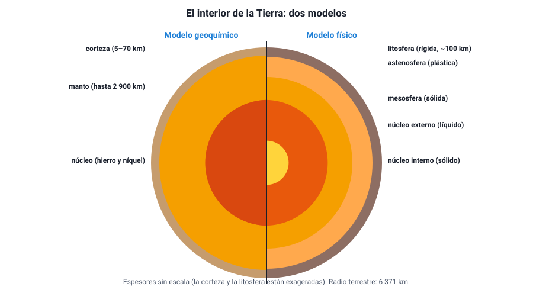
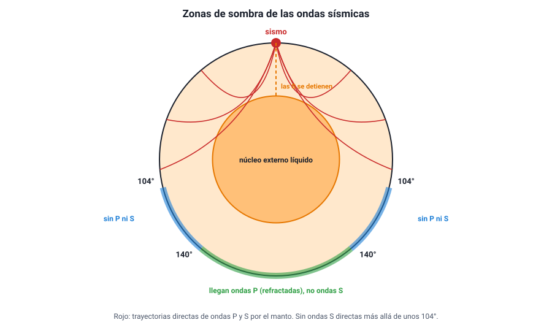
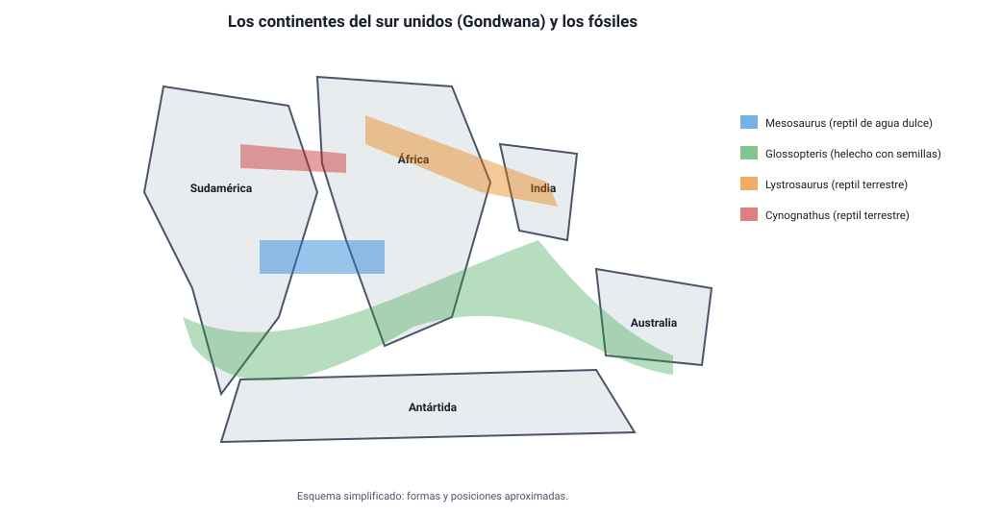
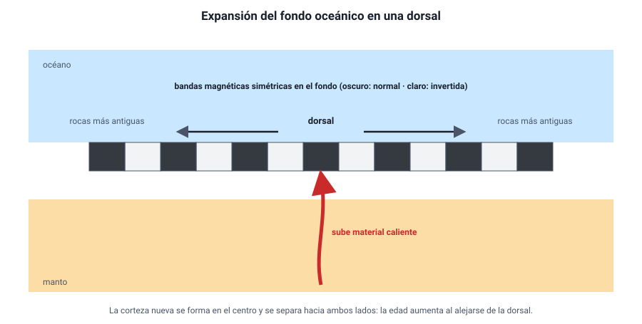
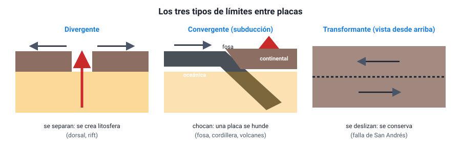
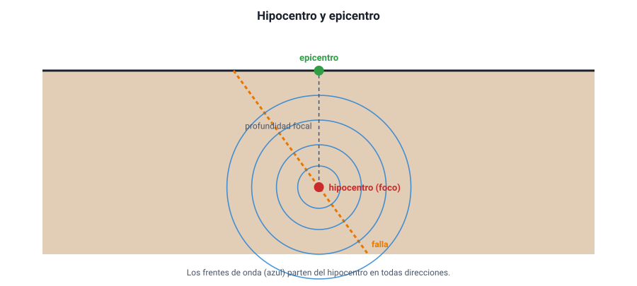
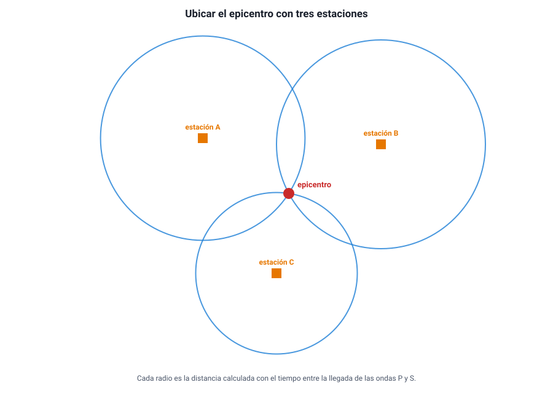
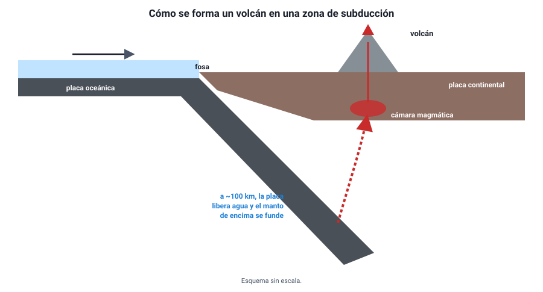
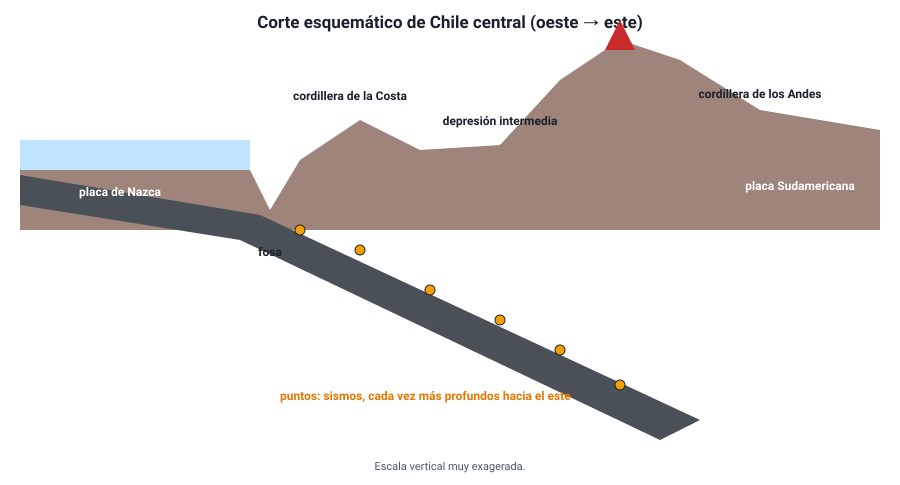

Capítulo 4: Sismos y dinámica de la Tierra
Área temática: Energía – Tierra
Chile tiembla. Aquí ocurrió el terremoto más grande jamás registrado —Valdivia, 1960—, y cada pocos años un sismo de magnitud 8 o más recuerda que el país está sobre uno de los bordes más activos del planeta. Tenemos, además, decenas de volcanes activos y una cordillera que sigue creciendo. Nada de eso es casualidad: es la manifestación de una Tierra por dentro caliente y en movimiento, cuya superficie está partida en placas que se desplazan unos centímetros al año.
En este capítulo vas a aprender cómo es el interior de la Tierra y cómo se conoce sin haber llegado nunca más allá de unos 12 km de profundidad; qué propuso Alfred Wegener con la deriva continental, qué evidencias presentó y por qué su idea fue rechazada al principio; cómo la exploración del fondo marino llevó a la tectónica de placas; qué ocurre en los límites entre placas; y cómo la tectónica explica los sismos, el volcanismo y el relieve, con especial atención a lo que pasa bajo Chile.
Este capítulo en la PAES 2027. Cubre completa el área Energía–Tierra del temario DEMRE: la teoría de la deriva continental, sus evidencias y su relación con la tectónica de placas; la tectónica de placas y sus consecuencias (sismos, volcanismo y relieve); y la relación entre el modelo físico del interior de la Tierra (geosfera) y la tectónica de placas. Las ondas sísmicas se apoyan en el capítulo 1 (ondas mecánicas, longitudinales y transversales).
1. Conceptos claveIA:12
| Concepto | Definición |
|---|---|
| Geosfera | Parte sólida de la Tierra, desde la superficie hasta el centro del planeta |
| Modelo geoquímico (estático) | Descripción del interior de la Tierra según la composición de sus capas: corteza, manto y núcleo |
| Modelo físico (dinámico) | Descripción del interior según el comportamiento mecánico de sus capas: litosfera, astenosfera, mesosfera, núcleo externo y núcleo interno |
| Corteza | Capa externa y delgada de rocas; es oceánica (delgada y densa) o continental (gruesa y menos densa) |
| Manto | Capa de rocas silicatadas entre la corteza y el núcleo, hasta unos 2 900 km de profundidad |
| Núcleo | Parte central de la Tierra, formada sobre todo por hierro y níquel; externo líquido e interno sólido |
| Litosfera | Capa rígida externa formada por la corteza y la parte superior del manto; está dividida en placas |
| Astenosfera | Capa del manto bajo la litosfera, sólida pero capaz de fluir muy lentamente; sobre ella se desplazan las placas |
| Discontinuidad | Superficie del interior terrestre donde las ondas sísmicas cambian bruscamente de rapidez |
| Deriva continental | Hipótesis de Alfred Wegener (1912) según la cual los continentes estuvieron unidos y se han desplazado |
| Pangea | Supercontinente que reunía casi todas las tierras emergidas hace unos 300 a 200 millones de años |
| Expansión del fondo oceánico | Proceso por el cual se forma nueva corteza oceánica en las dorsales y el fondo del océano se separa |
| Dorsal oceánica | Cordillera submarina donde sube material del manto y se forma nueva corteza |
| Tectónica de placas | Teoría que explica que la litosfera está dividida en placas que se mueven sobre la astenosfera e interactúan en sus bordes |
| Placa tectónica | Fragmento de litosfera que se mueve como un bloque rígido |
| Límite divergente | Borde donde dos placas se separan |
| Límite convergente | Borde donde dos placas chocan; si una se hunde bajo la otra hay subducción |
| Límite transformante | Borde donde dos placas se deslizan lateralmente una respecto de la otra |
| Subducción | Hundimiento de una placa oceánica bajo otra placa, hacia el manto |
| Fosa oceánica | Depresión alargada y profunda del fondo marino donde comienza la subducción |
| Sismo | Liberación brusca de energía acumulada en las rocas, que se propaga como ondas sísmicas |
| Hipocentro (foco) | Punto del interior de la Tierra donde se inicia la ruptura de un sismo |
| Epicentro | Punto de la superficie ubicado directamente sobre el hipocentro |
| Ondas P y S | Ondas sísmicas internas: P (primarias) longitudinales y más rápidas; S (secundarias) transversales, que no atraviesan líquidos |
| Magnitud | Medida de la energía liberada por un sismo; es una sola por sismo |
| Intensidad | Medida de los efectos de un sismo en un lugar; cambia de un lugar a otro |
| Tsunami | Serie de olas de gran longitud de onda generadas por un desplazamiento brusco del fondo marino |
| Volcán | Abertura de la corteza por la que sale magma, gases y otros materiales del interior |
| Magma | Roca fundida del interior de la Tierra; al salir a la superficie se llama lava |
| Cinturón de Fuego del Pacífico | Zona que rodea el océano Pacífico, con la mayor parte de los sismos y volcanes del planeta |
2. El interior de la TierraIA:34
a. Un lugar al que nadie ha llegadoIA:567
El pozo más profundo jamás perforado, en la península de Kola (Rusia), alcanzó unos 12 km. El radio de la Tierra es de 6 371 km. Es decir, la perforación más profunda apenas arañó la cáscara del planeta. Todo lo que sabemos del interior se ha deducido de manera indirecta:
- Las ondas sísmicas: cómo viajan, se desvían y a veces desaparecen al atravesar la Tierra (la evidencia principal).
- La densidad media de la Tierra (unos 5,5 g/cm³), mucho mayor que la de las rocas de la superficie (unos 2,7 g/cm³): tiene que haber material mucho más denso en el centro.
- Los meteoritos, restos de la formación del sistema solar, muchos de hierro y níquel.
- El campo magnético terrestre, que requiere un núcleo metálico líquido en movimiento.
- Las rocas del manto que llegan a la superficie en algunos volcanes.
Es un ejemplo claro de cómo la ciencia construye modelos a partir de evidencias indirectas, y de cómo esos modelos se aceptan porque explican de manera coherente muchas observaciones distintas.
b. Dos modelos de la misma TierraIA:8910
El interior se describe con dos modelos complementarios. Ninguno es «el correcto»: miran la Tierra con criterios distintos.

Modelo geoquímico (o estático): según la composición
| Capa | Profundidad aproximada | Composición y características |
|---|---|---|
| Corteza | 0 a 5–10 km (oceánica) · 0 a 30–70 km (continental) | Rocas ricas en silicio y aluminio (continental) o en silicio y magnesio (oceánica); la continental es más gruesa y menos densa |
| Manto | Hasta unos 2 900 km | Rocas silicatadas ricas en hierro y magnesio; el 84 % del volumen de la Tierra |
| Núcleo | 2 900 a 6 371 km | Hierro y níquel; muy denso |
Modelo físico (o dinámico): según el comportamiento mecánico
| Capa | Profundidad aproximada | Estado y comportamiento |
|---|---|---|
| Litosfera | 0 a unos 100 km | Rígida; formada por la corteza y la parte superior del manto. Está fragmentada en placas |
| Astenosfera | Desde unos 100 km hasta unos 350 km (algunas fuentes la extienden hasta 670 km) | Sólida, pero plástica: fluye lentamente, como una plastilina muy caliente. Sobre ella se mueven las placas |
| Mesosfera (manto inferior) | Hasta unos 2 900 km | Sólida y más rígida por la enorme presión |
| Núcleo externo | 2 900 a 5 150 km | Líquido; su movimiento genera el campo magnético |
| Núcleo interno | 5 150 a 6 371 km | Sólido, pese a estar a unos 5 000 – 6 000 °C, por la presión inmensa |
El error clásico: «la litosfera es la corteza». No: la litosfera incluye la corteza y la parte más superficial del manto. Las placas tectónicas son trozos de litosfera, no solo de corteza. Otro error frecuente es pensar que el manto es de roca fundida: casi todo el manto es sólido; la astenosfera fluye porque está cerca de fundirse, no porque sea líquida. El magma de los volcanes se forma solo en zonas puntuales.
c. La relación con la tectónica de placasIA:111213
El modelo físico es el que permite entender la tectónica: una litosfera rígida partida en placas que se desplazan sobre una astenosfera plástica. Y el motor del movimiento está más abajo: el calor del interior (en parte, calor remanente de la formación de la Tierra y, en parte, producido por elementos radiactivos) genera corrientes de convección muy lentas en el manto. El material caliente sube, se enfría cerca de la superficie y vuelve a bajar, arrastrando las placas. Además, el peso de las placas oceánicas frías que se hunden en las zonas de subducción tira del resto de la placa.
d. Cómo se sabe: las ondas sísmicasIA:141516
En el capítulo 1 vimos que un sismo genera dos tipos de ondas internas:
| Onda | Tipo | Rapidez en la corteza | ¿Atraviesa líquidos? |
|---|---|---|---|
| P (primaria) | Longitudinal: comprime y estira el material | Unos 6 – 8 km/s | Sí |
| S (secundaria) | Transversal: sacude el material de lado | Unos 3,5 – 4,5 km/s | No |
Al atravesar la Tierra, las ondas cambian de rapidez según el material, y por eso se refractan (se curvan) como la luz al pasar del aire al agua. En algunas profundidades el cambio es brusco: son las discontinuidades, que marcan los límites entre capas:
| Discontinuidad | Profundidad | Separa | Descubierta por |
|---|---|---|---|
| Mohorovičić (Moho) | 5 – 70 km | Corteza y manto | Andrija Mohorovičić, 1909 |
| Gutenberg | Unos 2 900 km | Manto y núcleo | Beno Gutenberg, 1914 |
| Lehmann | Unos 5 150 km | Núcleo externo e interno | Inge Lehmann, 1936 |

La evidencia de que el núcleo externo es líquido. Cuando ocurre un gran sismo, las estaciones sismológicas ubicadas a más de unos 104° de distancia angular del epicentro, del otro lado del planeta, no registran ondas S directas. Como las ondas S no se propagan en líquidos, la explicación más simple es que hay una capa líquida en el camino: el núcleo externo. Las ondas P, en cambio, sí llegan, pero se refractan al entrar y salir del núcleo, y dejan una franja sin ondas P directas entre unos 104° y 140°. El análisis de ondas P débiles que aparecían en esa franja fue lo que llevó a Inge Lehmann a proponer un núcleo interno sólido.
Razonar con la evidencia. Una estación sismológica en el lado opuesto del planeta registra ondas P de un sismo en Chile, pero no ondas S. ¿Qué se puede concluir? Que en el camino entre el sismo y la estación hay material en estado líquido, porque las ondas S (transversales) no se propagan en líquidos y las P (longitudinales) sí. No se puede concluir, en cambio, que las ondas S «se agotaron» por la distancia: las P, que recorrieron un camino similar, sí llegaron.
3. La deriva continentalIA:1718
a. La idea de WegenerIA:192021
Cualquiera que mire un mapa nota que la costa este de Sudamérica y la costa oeste de África parecen piezas de un rompecabezas. Varios pensadores lo habían comentado, pero fue el meteorólogo alemán Alfred Wegener quien, en 1912, propuso una hipótesis completa y la defendió con evidencias en su libro El origen de los continentes y los océanos (1915).
Su propuesta: hace unos 300 millones de años, todos los continentes estaban unidos en un solo supercontinente, Pangea («toda la tierra»), rodeado por un océano único, Pantalasa. Pangea se fragmentó y los continentes derivaron lentamente hasta sus posiciones actuales.

b. Las evidenciasIA:222324
Wegener reunió evidencias de disciplinas muy distintas. Su fuerza estaba en que todas apuntaban a lo mismo:
| Tipo de evidencia | Qué se observa | Por qué apoya la deriva |
|---|---|---|
| Geográfica | Las costas de Sudamérica y África encajan; el ajuste es aún mejor si se usa el borde de la plataforma continental, bajo el mar | Encajan como piezas que estuvieron unidas |
| Paleontológica (fósiles) | Fósiles de las mismas especies en continentes separados por océanos: el reptil acuático Mesosaurus (en Brasil y en el sur de África), el helecho con semillas Glossopteris (en Sudamérica, África, India, Antártida y Australia), los reptiles terrestres Lystrosaurus y Cynognathus | Esos organismos no podían cruzar un océano: los continentes tenían que estar unidos |
| Geológica | Rocas del mismo tipo y edad, y cadenas montañosas antiguas, que continúan de un continente a otro al juntarlos (por ejemplo, entre Brasil y África occidental, o entre los Apalaches y las montañas de Escocia) | Son partes de una misma formación que se separó |
| Paleoclimática | Huellas de glaciares antiguos en zonas hoy tropicales (India, sur de África, Brasil) y depósitos de carbón —formado en climas cálidos y húmedos— en la Antártida | Esos continentes estuvieron en otras latitudes, y juntos |
Cómo se usa una evidencia paleontológica. Lo que prueba la deriva no es que haya fósiles antiguos en varios continentes, sino que haya fósiles de la misma especie que no podía cruzar el mar: un reptil de agua dulce, como Mesosaurus, o una planta con semillas grandes y pesadas, como Glossopteris. Si una pregunta ofrece como evidencia un animal que vuela o nada en mar abierto, ese dato no sirve para apoyar la hipótesis.
c. Por qué fue rechazadaIA:252627
A pesar de sus evidencias, la comunidad científica —sobre todo los geólogos— rechazó la deriva continental durante décadas. La principal objeción no era contra las evidencias, sino contra el mecanismo:
- Wegener propuso que los continentes «araban» el fondo del océano, empujados por fuerzas relacionadas con la rotación terrestre y las mareas.
- Los físicos calcularon que esas fuerzas eran demasiado débiles para mover continentes, y que las rocas del fondo oceánico eran demasiado rígidas para ser atravesadas.
Wegener murió en 1930 en una expedición a Groenlandia, sin ver aceptada su idea.
Una lección sobre la ciencia. La hipótesis de Wegener era correcta en lo esencial —los continentes se mueven—, pero su explicación del cómo era equivocada. Una hipótesis necesita, además de evidencias de que algo ocurre, un mecanismo plausible que explique por qué ocurre. La deriva continental fue aceptada cuando, en los años sesenta, la tectónica de placas aportó ese mecanismo, gracias a datos nuevos que Wegener no tenía: los del fondo del océano.
d. De la deriva a la tectónica de placasIA:282930
La tectónica de placas conserva la idea central de Wegener y la corrige:
| Deriva continental (Wegener) | Tectónica de placas | |
|---|---|---|
| Qué se mueve | Los continentes, que «navegan» a través del fondo oceánico | Las placas litosféricas, que incluyen continentes y fondo oceánico juntos |
| Sobre qué | Sobre la corteza oceánica | Sobre la astenosfera |
| Qué lo mueve | Rotación terrestre y mareas (incorrecto) | Convección del manto y el hundimiento de las placas en la subducción |
| Evidencias principales | Continentales: costas, fósiles, rocas, clima | Además: dorsales, bandas magnéticas, edad del fondo oceánico, distribución de sismos y volcanes |
4. La tectónica de placasIA:3132
a. Lo que reveló el fondo del océanoIA:333435
Después de la Segunda Guerra Mundial, con sonares y magnetómetros desarrollados para detectar submarinos, se exploró el fondo marino como nunca antes. Aparecieron tres descubrimientos que cambiaron la geología:
- Las dorsales oceánicas. Una cordillera submarina de decenas de miles de kilómetros recorre todos los océanos, como la costura de una pelota. En su centro hay un valle con volcanes y un flujo de calor elevado.
- La edad del fondo oceánico. Las rocas del fondo marino son más jóvenes cerca de las dorsales y más antiguas lejos de ellas. Y ninguna tiene más de unos 200 millones de años, mientras que hay rocas continentales de más de 4 000 millones de años.
- Las bandas magnéticas. El campo magnético terrestre se invierte cada cierto tiempo (el norte magnético pasa a estar en el sur). Las rocas volcánicas registran la orientación del campo cuando se enfrían. A ambos lados de las dorsales, el fondo marino muestra bandas de magnetización normal e invertida, simétricas, como un código de barras reflejado en un espejo.
b. La expansión del fondo oceánicoIA:363738
En 1962, Harry Hess (y, de forma independiente, Robert Dietz) propuso una explicación que unía los tres descubrimientos: en las dorsales sube material caliente del manto, se enfría y forma nueva corteza oceánica, que se va separando hacia ambos lados. A medida que el fondo se expande, las rocas nuevas registran el campo magnético del momento; como el campo se invierte cada cierto tiempo, se forman bandas simétricas. En 1963, Vine y Matthews mostraron que el patrón magnético calzaba exactamente con esa predicción.

Pero si se crea corteza nueva en las dorsales y la Tierra no crece, en algún otro lugar tiene que destruirse. Ese lugar son las fosas oceánicas, donde el fondo marino se hunde de vuelta al manto: la subducción. Por eso el fondo oceánico es tan joven: se recicla continuamente.
Qué demuestran las bandas magnéticas. Su simetría respecto de la dorsal es la clave: indica que la corteza se forma en el centro y se reparte hacia ambos lados. Si una pregunta te pide la evidencia que apoya la expansión del fondo oceánico, busca la simetría de las bandas, la edad creciente de las rocas al alejarse de la dorsal o la ausencia de fondo oceánico muy antiguo.
c. La teoría de la tectónica de placasIA:394041
Hacia fines de los años sesenta, todas estas ideas se integraron en la teoría de la tectónica de placas:
- La litosfera está dividida en unas quince placas grandes y varias pequeñas, que encajan como las piezas de un balón de fútbol.
- Las placas son rígidas y se desplazan sobre la astenosfera, a velocidades de unos pocos centímetros por año (del orden de lo que crecen las uñas).
- El motor es el calor interno: la convección del manto y el peso de las placas que se hunden en la subducción.
- Casi toda la actividad geológica —sismos, volcanes, formación de montañas— ocurre en los bordes entre placas, donde interactúan.
La prueba más directa de que las placas se mueven hoy la dan las mediciones con GPS: estaciones fijas en distintos continentes registran cómo cambian sus posiciones año a año.
Qué tan rápido es «lento». La placa de Nazca converge con la placa Sudamericana a unos 7 cm/año (entre 6,5 y 9 cm/año según la zona y la fuente). A 7 cm/año, en 1 000 años son 70 m; en 1 millón de años, 70 km; en 10 millones de años, 700 km. Movimientos imperceptibles en una vida humana construyen océanos y cordilleras en tiempos geológicos. Y el Atlántico, que se abre a unos 2 a 3 cm/año, necesitó unos 150 millones de años para alcanzar su ancho actual.
d. Las placas que afectan a ChileIA:424344
Chile está sobre la placa Sudamericana, que avanza hacia el oeste. Frente a sus costas, la placa de Nazca (en el norte y centro) y la placa Antártica (en el extremo sur) se mueven hacia el este y se hunden bajo el continente. Esa subducción es la causa directa de:
- la fosa de Atacama (o fosa de Chile–Perú), que supera los 8 000 m de profundidad frente al norte de Chile;
- la cordillera de los Andes, levantada por la compresión;
- los volcanes chilenos;
- los grandes terremotos y tsunamis que han marcado la historia del país.
5. Los límites entre placasIA:4546
Lo que ocurre en un borde depende de cómo se mueven las placas una respecto de la otra. Hay tres tipos de límites:

a. Límites divergentesIA:474849
Las placas se separan. El material del manto sube, se funde parcialmente y forma nueva litosfera. Por eso se llaman también constructivos.
- En el océano forman las dorsales, como la dorsal Mesoatlántica, que separa América de Europa y África. Islandia es un trozo de dorsal que sobresale del mar, y allí se puede caminar entre dos placas.
- En un continente forman un rift o valle de fractura, que puede terminar abriendo un océano nuevo: es lo que está ocurriendo en el Valle del Rift de África oriental.
Consecuencias: sismos poco profundos y en general de magnitud moderada, y volcanismo con lava fluida (basáltica).
b. Límites convergentesIA:505152
Las placas chocan. Lo que ocurre depende del tipo de litosfera que se encuentra, porque la oceánica es más densa que la continental:
| Tipo de convergencia | Qué ocurre | Relieve y consecuencias | Ejemplo |
|---|---|---|---|
| Oceánica–continental | La placa oceánica, más densa, subduce bajo la continental | Fosa oceánica, cordillera con volcanes en el continente, sismos de todas las profundidades y los más grandes del planeta | Nazca bajo Sudamérica: fosa de Atacama y cordillera de los Andes |
| Oceánica–oceánica | Una placa oceánica (la más antigua y densa) subduce bajo la otra | Fosa y un arco de islas volcánicas | Japón, Aleutianas, fosa de las Marianas (la más profunda del mundo, unos 11 000 m) |
| Continental–continental | Ninguna subduce con facilidad (ambas son poco densas); la corteza se pliega y se engrosa | Grandes cordilleras de plegamiento, sismos, poco o nada de volcanismo | India contra Asia: el Himalaya y el monte Everest |
Los límites convergentes se llaman destructivos cuando hay subducción, porque la litosfera oceánica vuelve al manto.
Cómo se reconoce una zona de subducción en los datos. Si se grafican los hipocentros de los sismos de una zona de subducción según su profundidad y su distancia a la fosa, forman un plano inclinado que se hunde bajo el continente (la zona de Wadati–Benioff): son superficiales cerca de la fosa y cada vez más profundos tierra adentro. En Chile, los sismos cerca de la costa son superficiales, y bajo la cordillera ocurren a 100 km o más de profundidad. Es una de las evidencias más claras de que la placa de Nazca se está hundiendo.
c. Límites transformantesIA:535455
Las placas se deslizan lateralmente una junto a la otra, en sentidos opuestos, a lo largo de una gran falla. No se crea ni se destruye litosfera, por eso se llaman conservativos.
- El ejemplo más conocido es la falla de San Andrés, en California, entre las placas del Pacífico y Norteamericana.
- También hay muchas fallas transformantes cortas que cortan las dorsales oceánicas en segmentos.
Consecuencias: sismos superficiales, a veces muy destructivos, y casi sin volcanismo.
d. ResumenIA:565758
| Límite | Movimiento | Litosfera | Relieve típico | Sismos | Volcanismo |
|---|---|---|---|---|---|
| Divergente | Se separan | Se crea | Dorsal, rift | Superficiales, moderados | Sí (lava fluida) |
| Convergente con subducción | Chocan, una se hunde | Se destruye | Fosa, cordillera o arco de islas | Superficiales a profundos; los más grandes | Sí (explosivo) |
| Convergente continental | Chocan | Se pliega | Cordillera de plegamiento | Frecuentes | Escaso |
| Transformante | Se deslizan lateralmente | Se conserva | Falla | Superficiales | Casi nulo |
Un error típico sobre los Andes y el Himalaya. Ambas son cordilleras de límites convergentes, pero de tipos distintos. Los Andes se deben a subducción (oceánica bajo continental) y por eso tienen muchos volcanes. El Himalaya se debe a un choque de continentes y casi no tiene volcanes. Si un ítem asocia el Himalaya con subducción o con volcanismo, está equivocado.
6. Los sismosIA:5960
a. Cómo se produce un sismoIA:616263
En los bordes de las placas, las rocas están sometidas a enormes esfuerzos. Mientras el roce entre dos bloques de roca los mantiene trabados, las rocas se deforman y acumulan energía, como un resorte que se comprime (capítulo 6). Cuando el esfuerzo supera la resistencia de la roca o el roce en la falla, los bloques se deslizan de golpe y la energía acumulada se libera, en parte, como ondas sísmicas. Eso es un sismo.

- Hipocentro o foco: punto del interior donde comienza la ruptura.
- Epicentro: punto de la superficie ubicado directamente sobre el hipocentro.
- Profundidad focal: distancia entre ambos. Los sismos se clasifican en superficiales (menos de 70 km), intermedios (70 a 300 km) y profundos (más de 300 km). Los profundos solo ocurren en zonas de subducción.
En Chile, además de los sismos en el contacto entre las placas de Nazca y Sudamericana (interplaca), hay sismos dentro de la placa de Nazca que se hunde (intraplaca de profundidad intermedia) y sismos corticales en fallas superficiales del continente, que pueden ser muy destructivos aunque sean de magnitud menor, por estar cerca de la superficie.
b. Las ondas sísmicasIA:646566
| Onda | Cómo mueve el suelo | Rapidez | Qué atraviesa | Llega… |
|---|---|---|---|---|
| P (primaria) | Compresión y expansión en la dirección de avance (longitudinal) | La más rápida: 6 – 8 km/s en la corteza | Sólidos, líquidos y gases | Primero |
| S (secundaria) | Sacudida perpendicular a la dirección de avance (transversal) | Unos 3,5 – 4,5 km/s | Solo sólidos | Después de la P |
| Superficiales (Love y Rayleigh) | Movimientos de lado a lado y ondulaciones como olas en el suelo | Las más lentas | Viajan por la superficie | Al final; suelen causar el mayor daño |
Muchas personas perciben primero un golpe seco o un «ruido» (ondas P) y después el movimiento fuerte (ondas S y superficiales). Los sistemas de alerta temprana aprovechan esa diferencia: detectan las ondas P cerca del epicentro y emiten una alerta que viaja casi a la rapidez de la luz, antes de que lleguen las ondas destructivas.
c. Cómo se ubica el epicentroIA:676869
Un sismógrafo registra el movimiento del suelo en un gráfico llamado sismograma. Como las ondas P y S parten juntas del hipocentro pero viajan a distinta rapidez, cuanto más lejos está la estación, mayor es el tiempo entre la llegada de la P y la de la S.
Calcular la distancia. En una estación, las ondas P llegan 20 s antes que las S. Supón vP = 8 km/s y vS = 4 km/s. Si d es la distancia al hipocentro:
d / 4 − d / 8 = 20 s → d / 8 = 20 s → d = 160 km.
Con una sola estación se conoce la distancia, pero no la dirección: el sismo está en algún punto de una circunferencia de 160 km de radio. Con tres estaciones, las tres circunferencias se cortan en un solo punto: el epicentro. Es la triangulación.

d. Magnitud e intensidadIA:707172
Son dos formas distintas de medir un sismo, y la PAES las pone a competir:
| Magnitud | Intensidad | |
|---|---|---|
| Qué mide | La energía liberada en el hipocentro | Los efectos percibidos en un lugar: cómo lo sintieron las personas, daños en construcciones |
| ¿Cuántos valores tiene un sismo? | Uno solo | Muchos: uno en cada lugar |
| Cómo se obtiene | Con los registros de sismógrafos | Con encuestas y observación de daños |
| Escala | Magnitud de momento (Mw), heredera de la de Richter; es logarítmica y sin tope teórico | Mercalli modificada, de I a XII (en números romanos) |
La escala de magnitud es logarítmica: cada punto más de magnitud significa unas 32 veces más energía liberada. Un sismo de magnitud 8 libera unas 32 veces más energía que uno de 7, y unas 1 000 veces (32 × 32) más que uno de 6.
«El terremoto fue grado 8 en Santiago y grado 6 en Concepción.» Si se habla de lugares distintos, se trata de intensidades (y deberían escribirse VIII y VI). La magnitud es una sola para todo el sismo. La intensidad depende de la distancia al epicentro, de la profundidad del hipocentro, del tipo de suelo (los suelos blandos y rellenos amplifican el movimiento) y de la calidad de las construcciones.
e. Los grandes sismos de ChileIA:737475
| Fecha | Nombre | Magnitud (Mw) | Observaciones |
|---|---|---|---|
| 22 de mayo de 1960 | Terremoto de Valdivia | 9,5 | El más grande registrado en el mundo; tsunami que cruzó el Pacífico y llegó a Hawái y Japón |
| 27 de febrero de 2010 | Terremoto del Maule | 8,8 | Tsunami en la costa del centro-sur |
| 1 de abril de 2014 | Terremoto de Iquique | 8,2 | |
| 16 de septiembre de 2015 | Terremoto de Illapel | 8,3 |
En Chile, el Centro Sismológico Nacional (Universidad de Chile) registra y localiza los sismos; el Servicio Hidrográfico y Oceanográfico de la Armada (SHOA) evalúa la amenaza de tsunami; y el Servicio Nacional de Prevención y Respuesta ante Desastres (SENAPRED, que en 2023 reemplazó a la ONEMI) coordina las alertas y la respuesta. La norma sísmica de construcción obliga a diseñar los edificios para resistir sismos severos, y es una de las razones por las que grandes terremotos causan en Chile menos víctimas que sismos menores en otros países.
f. Los tsunamisIA:767778
Cuando un gran sismo de subducción desplaza verticalmente el fondo marino, levanta o hunde toda la columna de agua sobre él y genera un tsunami: una serie de olas de longitud de onda enorme (cientos de kilómetros). En mar abierto viajan a más de 700 km/h con una altura de apenas unos centímetros o decímetros; al llegar a la costa, la profundidad disminuye, las olas se frenan y crecen en altura (su energía se concentra), inundando la costa. La primera ola no siempre es la mayor, y el peligro puede durar horas.
La regla de autoprotección en Chile. Si en la costa un sismo impide mantenerse en pie, hay que evacuar de inmediato hacia zonas altas, sin esperar una alarma oficial. El propio sismo es la alerta.
7. El volcanismoIA:7980
a. Qué es un volcánIA:818283
Un volcán es una abertura de la corteza por la que sale material del interior: magma (roca fundida con gases disueltos), gases y fragmentos de roca. Cuando el magma sale a la superficie se llama lava. El magma se acumula en una cámara magmática, a pocos kilómetros de profundidad, y asciende por una chimenea hasta el cráter.

b. Dónde se forman los volcanes y por quéIA:848586
El manto es casi todo sólido, así que para que haya magma algo tiene que fundir las rocas. Eso ocurre en tres situaciones, las tres relacionadas con la dinámica interna:
| Lugar | Por qué se funde el manto | Tipo de magma y erupción | Ejemplos |
|---|---|---|---|
| Zonas de subducción (límites convergentes) | La placa que se hunde libera agua a unos 100 km de profundidad; el agua baja la temperatura de fusión del manto que está encima | Magma viscoso y con muchos gases: erupciones explosivas | Volcanes de los Andes, Japón, Indonesia |
| Dorsales (límites divergentes) | El manto que sube pierde presión y se funde parcialmente | Magma fluido (basáltico): erupciones efusivas, con coladas de lava | Islandia, dorsal Mesoatlántica |
| Puntos calientes (en medio de las placas) | Una columna de material muy caliente sube desde el manto profundo | Magma fluido | Hawái; Isla de Pascua (Rapa Nui), en la placa de Nazca |
Por eso los volcanes no están repartidos al azar: la mayoría se concentra en los bordes de las placas, sobre todo en el Cinturón de Fuego del Pacífico, que rodea ese océano y que concentra también la mayoría de los grandes sismos.
Viscosidad y explosividad. Lo que decide si una erupción es explosiva no es la temperatura del magma, sino su viscosidad y la cantidad de gases. Un magma viscoso atrapa los gases, la presión aumenta y la erupción es violenta (como una bebida con gas agitada). Un magma fluido deja escapar los gases con facilidad y la lava corre. Los volcanes de subducción, como los chilenos, suelen ser explosivos.
c. Tipos de volcanesIA:878889
| Tipo | Forma | Magma | Ejemplo |
|---|---|---|---|
| Escudo | Muy ancho y de pendientes suaves | Fluido, capas de lava | Mauna Loa (Hawái) |
| Estratovolcán (compuesto) | Cónico y alto, de pendientes empinadas, con capas alternadas de lava y cenizas | Viscoso, erupciones explosivas | Villarrica, Osorno, Llaima, Calbuco; el Fuji en Japón |
| Cono de escoria | Pequeño, de pendientes empinadas | Fragmentos expulsados en una sola erupción | Conos en las laderas de volcanes mayores |
d. Los volcanes de ChileIA:909192
Chile tiene una de las cadenas volcánicas más activas del mundo, a lo largo de la cordillera de los Andes, alimentada por la subducción de las placas de Nazca y Antártica. Se reconocen alrededor de 90 volcanes geológicamente activos. El Servicio Nacional de Geología y Minería (Sernageomin) vigila en tiempo real unos 45 de ellos, los de mayor peligro, a través de su Red Nacional de Vigilancia Volcánica (creada tras la erupción del Chaitén), y emite alertas técnicas.
Algunas erupciones recientes: Chaitén (2008), que obligó a evacuar el pueblo; Puyehue–Cordón Caulle (2011), cuyas cenizas cruzaron hasta Argentina y afectaron el tráfico aéreo; y Calbuco y Villarrica (2015).
Riesgos volcánicos: caída de cenizas (daña cultivos, techos y motores de aviones, y afecta la respiración), flujos piroclásticos (avalanchas de gas y roca incandescente a gran velocidad, las más mortíferas), lahares (flujos de barro formados cuando la erupción derrite el hielo y la nieve de la cumbre, muy peligrosos en los volcanes nevados del sur de Chile) y coladas de lava.
Beneficios: suelos fértiles, energía geotérmica (en Chile opera la central Cerro Pabellón, en la región de Antofagasta), aguas termales y turismo.
8. La tectónica de placas y el relieveIA:9394
a. El relieve como resultado de dos fuerzasIA:959697
El relieve de la Tierra es el resultado de un tira y afloja entre dos tipos de procesos:
- Internos (endógenos): la tectónica de placas y el volcanismo levantan montañas, abren océanos y forman fosas. Su energía viene del calor del interior.
- Externos (exógenos): la erosión del agua, el viento y el hielo desgastan el relieve y transportan los sedimentos a zonas bajas. Su energía viene del Sol y de la gravedad.
Una cordillera alta y de picos agudos, como los Andes, indica que los procesos internos todavía la están levantando más rápido de lo que la erosión la desgasta. Montañas bajas y redondeadas, como los Apalaches en Estados Unidos, indican cordilleras antiguas cuya actividad tectónica terminó hace mucho.
b. Las grandes formas del relieve y su origenIA:9899100
| Forma del relieve | Tipo de límite | Cómo se forma | Ejemplo |
|---|---|---|---|
| Dorsal oceánica | Divergente (océano) | El material del manto sube y forma nueva litosfera | Dorsal Mesoatlántica, dorsal del Pacífico oriental |
| Valle de rift | Divergente (continente) | El continente se estira y se hunde por el centro | Valle del Rift (África oriental) |
| Fosa oceánica | Convergente con subducción | La placa oceánica se dobla y se hunde | Fosa de Atacama (más de 8 000 m), fosa de las Marianas |
| Cordillera volcánica | Convergente oceánica–continental | Compresión, engrosamiento de la corteza y volcanismo | Cordillera de los Andes |
| Arco de islas volcánicas | Convergente oceánica–oceánica | Volcanes que emergen del mar sobre la zona de subducción | Japón, Aleutianas |
| Cordillera de plegamiento | Convergente continental–continental | La corteza se pliega, se fractura y se engrosa | Himalaya, Alpes |
| Islas volcánicas de punto caliente | Interior de placa | La placa se mueve sobre una fuente fija de magma y deja una cadena de volcanes de edad creciente | Hawái, Isla de Pascua |
c. El relieve de Chile, visto desde la tectónicaIA:101102103
Un corte de Chile de oeste a este, a la latitud de Santiago, cruza las huellas de la subducción:

- Fosa: frente a la costa, donde la placa de Nazca empieza a hundirse.
- Cordillera de la Costa: relieve antiguo levantado por la compresión.
- Depresión intermedia: valle central, rellenado con sedimentos erosionados de las cordilleras.
- Cordillera de los Andes: formada por la compresión y el engrosamiento de la corteza, y coronada por volcanes, que aparecen donde la placa de Nazca alcanza unos 100 km de profundidad.
Los sismos grafican la placa que se hunde: superficiales cerca de la costa y cada vez más profundos hacia la cordillera y Argentina.
Una cordillera que sigue creciendo. Los terremotos no solo sacuden: también deforman el terreno. En el terremoto del Maule de 2010, algunos sectores de la costa, como la isla Santa María, se levantaron más de 2 m en segundos, y otros se hundieron. Miles de estos eventos, sumados durante millones de años, son los que han construido el relieve de Chile.
Tiempo geológico y tiempo humano. Las placas se mueven unos centímetros al año y las cordilleras tardan millones de años en formarse. Pero la liberación de energía acumulada ocurre de golpe, en segundos: eso es un terremoto. Un error frecuente es pensar que un gran sismo «mueve el continente» de un lugar a otro: lo que hace es liberar en un instante la deformación acumulada durante décadas o siglos, desplazando el terreno algunos metros.
Ejemplos PAES resueltos
Cuatro ítems al estilo de la prueba, resueltos paso a paso. Cúbrelos primero y después compara.
Ejemplo 1 (Procesar y analizar la evidencia). Un grupo de geólogos toma muestras de roca del fondo del océano Atlántico a distintas distancias de la dorsal Mesoatlántica, hacia el este y hacia el oeste, y mide su edad:
| Distancia a la dorsal (km) | 0 | 200 | 400 | 600 |
|---|---|---|---|---|
| Edad al oeste (millones de años) | 0 | 10 | 20 | 30 |
| Edad al este (millones de años) | 0 | 10 | 20 | 30 |
¿Qué conclusión es coherente con estos datos?
A) El fondo oceánico se forma en la dorsal y se separa hacia ambos lados a unos 2 cm/año. B) El fondo oceánico se forma lejos de la dorsal y avanza hacia ella a unos 20 cm/año. C) Las rocas del fondo oceánico tienen la misma edad que las rocas continentales más antiguas. D) El océano Atlántico se está cerrando porque las rocas más antiguas están lejos de la dorsal.
Desarrollo.
- Patrón. La edad es cero en la dorsal y aumenta simétricamente al alejarse: el fondo se forma en la dorsal y se desplaza hacia ambos lados.
- Rapidez. En 10 millones de años se desplaza 200 km: 200 km / 10 000 000 años = 2 × 107 cm / 107 años = 2 cm/año, hacia cada lado.
- Descartar. B invierte el sentido del movimiento y calcula mal la rapidez. C no se sigue de los datos (de hecho, el fondo oceánico es mucho más joven que las rocas continentales antiguas). D invierte la interpretación: si se crea fondo en la dorsal, el océano se abre.
Clave: A.
Lo que evalúa. Reconocer un patrón en una tabla y calcular una rapidez con unidades muy distintas.
Ejemplo 2 (Planificar y conducir una investigación). Un estudiante quiere comprobar con un modelo que las ondas transversales no se propagan en un líquido y las longitudinales sí. ¿Qué procedimiento le permite hacerlo?
A) Generar ondas en un resorte largo, primero sacudiéndolo de lado y luego comprimiéndolo, y medir en cuál viaja más rápido la perturbación. B) Generar ondas en una cubeta con agua golpeando la superficie con distintas fuerzas, y medir la altura de las olas. C) Enviar pulsos de compresión y de sacudida lateral a través de un bloque de gelatina firme y luego de gelatina líquida, y registrar cuáles atraviesan cada uno. D) Dejar caer piedras de distinta masa en un recipiente con agua y medir cuánto tardan en llegar al fondo.
Desarrollo.
- Qué hay que comparar. Los dos tipos de onda (variable independiente: tipo de onda) en dos estados del mismo material (sólido y líquido), registrando si la onda atraviesa o no (variable dependiente).
- C hace exactamente eso: usa el mismo material en estado firme (como el manto) y líquido (como el núcleo externo), y compara ondas de compresión (tipo P) y de sacudida lateral (tipo S).
- Descartar. A compara rapideces en un solo medio sólido, sin líquido. B y D no comparan tipos de onda ni estados de la materia.
Clave: C.
Lo que evalúa. Diseñar un modelo experimental que ponga a prueba la propiedad en la que se basa una evidencia del interior de la Tierra.
Ejemplo 3 (Evaluar). Un medio de comunicación informa: «El terremoto tuvo una magnitud 7 en Santiago y una magnitud 5 en Valparaíso».
¿Cuál es la mejor evaluación de esa información?
A) Es correcta, porque la magnitud disminuye con la distancia al epicentro. B) Es correcta, porque cada ciudad tiene su propio sismógrafo, que mide una magnitud distinta. C) Es incorrecta, porque la magnitud de un sismo solo puede medirse en el epicentro. D) Es incorrecta, porque un sismo tiene una sola magnitud; lo que varía de un lugar a otro es la intensidad.
Desarrollo.
- Magnitud: energía liberada en el hipocentro; es una sola para cada sismo, aunque la calculen muchas estaciones.
- Intensidad: efectos observados en un lugar; cambia de un lugar a otro, según la distancia, el suelo y las construcciones. Se expresa en la escala de Mercalli, en números romanos.
- Evaluar. La nota confunde ambos conceptos: lo que pudo ser distinto en Santiago y Valparaíso es la intensidad. A y B aceptan la confusión. C tiene una justificación falsa: la magnitud se calcula con estaciones ubicadas lejos del epicentro.
Clave: D.
Lo que evalúa. Juzgar la validez de una afirmación usando correctamente los conceptos científicos.
Ejemplo 4 (Observar y plantear preguntas). Al graficar la profundidad de los sismos ocurridos en Chile central según su distancia a la costa, una estudiante observa que los sismos cercanos a la costa son superficiales y que, hacia el este, son cada vez más profundos, hasta unos 200 km bajo la cordillera.
¿Cuál de las siguientes hipótesis explica mejor esta observación?
A) Los sismos se producen en el contacto con una placa que se hunde inclinada bajo el continente. B) La corteza continental es más gruesa bajo la costa que bajo la cordillera de los Andes. C) Los sismos profundos se generan por la actividad de los volcanes de la cordillera. D) La Tierra se está enfriando desde la costa hacia el interior del continente.
Desarrollo.
- Patrón. Los hipocentros forman un plano inclinado que se hunde hacia el este.
- Hipótesis coherente. Es el trazo de la placa de Nazca que subduce bajo la placa Sudamericana: los sismos ocurren en ella o en su contacto con la placa de arriba (A).
- Descartar. B contradice lo conocido: la corteza es más gruesa bajo los Andes. C no explica sismos bajo la costa ni la inclinación del plano. D no tiene relación con la distribución observada.
Clave: A.
Lo que evalúa. Formular una hipótesis que explique un patrón en los datos con el modelo de la tectónica de placas.
Evaluación formativa
Veinte preguntas sobre el interior de la Tierra, la deriva continental, la tectónica de placas, los límites entre placas, los sismos, el volcanismo y el relieve. Responde todas y luego revisa las explicaciones.
1. ¿Cuál es la principal fuente de información sobre la estructura interna de la Tierra?
- Las perforaciones profundas hasta el núcleo.
- El estudio de las ondas sísmicas que la atraviesan.
- Las muestras de lava de todos los volcanes.
- La observación directa del manto en las fosas.
Respuesta correcta: B
Nadie ha perforado más de unos 12 km. Casi todo lo que se sabe del interior se deduce de cómo se propagan, se desvían y a veces desaparecen las ondas sísmicas.
2. ¿Qué capas forman la litosfera?
- Solo la corteza continental y oceánica.
- El manto y el núcleo externo.
- La astenosfera y la mesosfera.
- La corteza y el manto superior.
Respuesta correcta: D
La litosfera es la capa rígida externa: incluye la corteza y la parte más superficial del manto. Las placas tectónicas son fragmentos de litosfera, no solo de corteza.
3. ¿Cuál de las siguientes afirmaciones sobre la astenosfera es correcta?
- Es sólida, fluye lento y sostiene las placas.
- Es líquida y forma el magma de todos los volcanes.
- Es rígida y está formada por hierro y níquel.
- Es la capa más externa y fría de la Tierra.
Respuesta correcta: A
La astenosfera es sólida, pero está tan caliente que se comporta de manera plástica y fluye muy lentamente. Sobre ella se desplazan las placas litosféricas.
4. Una estación sismológica al otro lado de la Tierra registra ondas P de un sismo, pero no ondas S. ¿Qué se infiere?
- Que las ondas S se agotaron por la distancia.
- Que las ondas S son más lentas y no alcanzan a llegar.
- Que en el camino hay una capa en estado líquido.
- Que el núcleo de la Tierra es completamente sólido.
Respuesta correcta: C
Las ondas S (transversales) no se propagan en líquidos y las P sí. Si llegan P pero no S, hay una capa líquida en el camino: el núcleo externo.
5. ¿Por qué el núcleo interno es sólido aunque está a más de 5 000 °C?
- Porque es más frío que el núcleo externo.
- Porque la enorme presión impide que se funda.
- Porque está formado por rocas silicatadas.
- Porque no recibe calor del resto del planeta.
Respuesta correcta: B
A esa profundidad la presión es tan grande que el hierro y el níquel se mantienen sólidos pese a la temperatura. No es más frío que el núcleo externo.
6. ¿Qué evidencia de Wegener se basa en la distribución de seres vivos del pasado?
- El encaje de las costas de África y Sudamérica.
- Las huellas de glaciares en zonas tropicales.
- Las bandas magnéticas del fondo del océano.
- Fósiles de Mesosaurus en Brasil y África.
Respuesta correcta: D
Mesosaurus era un reptil de agua dulce que no podía cruzar el océano: encontrar sus fósiles a ambos lados del Atlántico indica que los continentes estuvieron unidos. Las bandas magnéticas son una evidencia posterior.
7. ¿Por qué fue rechazada durante décadas la hipótesis de la deriva continental?
- Porque no explicaba qué movía a los continentes.
- Porque no existían fósiles iguales en continentes distintos.
- Porque las costas de los continentes no encajaban entre sí.
- Porque se demostró que los continentes están fijos.
Respuesta correcta: A
Las evidencias de Wegener eran sólidas, pero su explicación de qué movía a los continentes (rotación y mareas) era físicamente insuficiente. Se aceptó cuando la tectónica de placas aportó el mecanismo.
8. ¿Qué observación apoya la expansión del fondo oceánico?
- Que el fondo marino es más antiguo cerca de las dorsales.
- Que los continentes tienen rocas de 4 000 millones de años.
- Que las bandas magnéticas son simétricas a la dorsal.
- Que los volcanes solo existen en los continentes.
Respuesta correcta: C
La simetría de las bandas de magnetización normal e invertida indica que la corteza se forma en la dorsal y se reparte hacia ambos lados. Además, el fondo es más joven cerca de la dorsal, no más antiguo.
9. ¿Qué fenómeno se considera el motor principal del movimiento de las placas?
- La rotación de la Tierra sobre su propio eje.
- El calor interno, que causa convección.
- Las mareas producidas por la Luna.
- El peso de los océanos sobre los continentes.
Respuesta correcta: B
El calor del interior produce corrientes de convección en el manto, y el hundimiento de las placas en la subducción tira del resto de la placa. La rotación y las mareas son las explicaciones de Wegener, que resultaron insuficientes.
10. La placa de Nazca converge con la Sudamericana a unos 7 cm/año. ¿Cuánto se desplaza en 1 millón de años?
- 0,7 km
- 7 km
- 70 km
- 700 km
Respuesta correcta: C
7 cm/año · 1 000 000 años = 7 000 000 cm = 70 000 m = 70 km. Los errores de conversión de centímetros a kilómetros dan los otros valores.
11. ¿Qué tipo de límite de placas existe frente a las costas de Chile?
- Convergente, con subducción de la placa oceánica.
- Divergente, con formación de una dorsal oceánica.
- Transformante, con deslizamiento lateral de las placas.
- Convergente, con choque de dos placas continentales.
Respuesta correcta: A
La placa de Nazca (oceánica) se hunde bajo la placa Sudamericana (continental). Eso forma la fosa de Atacama, la cordillera de los Andes, los volcanes y los grandes terremotos.
12. ¿Qué relieve se forma cuando chocan dos placas continentales, como la India y Asia?
- Una fosa oceánica muy profunda.
- Una gran cordillera de plegamiento.
- Un arco de islas volcánicas.
- Una dorsal con volcanes submarinos.
Respuesta correcta: B
Al chocar dos placas continentales, ninguna se hunde con facilidad y la corteza se pliega y se engrosa, formando cordilleras como el Himalaya, con poco volcanismo.
13. ¿En qué tipo de límite de placas se crea nueva litosfera?
- Convergente.
- Divergente.
- Transformante.
- De subducción.
Respuesta correcta: B
En los límites divergentes las placas se separan y el material del manto que sube forma nueva litosfera, como en las dorsales oceánicas.
14. ¿Qué diferencia hay entre el hipocentro y el epicentro de un sismo?
- El hipocentro está en la superficie y el epicentro en el interior.
- El epicentro es donde más daño hay y el hipocentro donde menos.
- Son dos nombres del mismo punto del interior de la Tierra.
- El hipocentro está adentro y el epicentro, sobre él.
Respuesta correcta: D
El hipocentro es el punto del interior donde comienza la ruptura; el epicentro, el punto de la superficie justo encima. Muchas veces se confunden.
15. ¿Qué ondas sísmicas llegan primero a una estación?
- Las ondas P, porque son las más rápidas.
- Las ondas S, porque son transversales.
- Las superficiales, porque recorren menos camino.
- Todas llegan a la vez, porque parten juntas.
Respuesta correcta: A
Todas parten del hipocentro al mismo tiempo, pero las P son las más rápidas y llegan primero; luego las S y al final las superficiales.
16. En una estación, las ondas S llegan 30 s después que las P. Si vP = 8 km/s y vS = 4 km/s, ¿a qué distancia está el hipocentro?
- 60 km
- 120 km
- 240 km
- 360 km
Respuesta correcta: C
d/4 − d/8 = 30 s, así que d/8 = 30 y d = 240 km. Multiplicar el tiempo por la diferencia de rapidez (4 km/s · 30 s) da 120 km.
17. Un sismo de magnitud 8 se compara con uno de magnitud 7. ¿Cuánta más energía libera, aproximadamente?
- La misma energía.
- El doble de energía.
- Unas 8 veces más.
- Unas 32 veces más.
Respuesta correcta: D
La escala de magnitud es logarítmica: cada punto más significa unas 32 veces más energía. No es una escala lineal, así que 8 no es «un poco más» que 7.
18. ¿Por qué se producen volcanes en la cordillera de los Andes?
- Porque las placas se separan y el manto sube a la superficie.
- Porque la corteza continental es muy delgada bajo los Andes.
- Porque hay un punto caliente bajo cada volcán chileno.
- Porque la placa que subduce libera agua que funde el manto.
Respuesta correcta: D
A unos 100 km de profundidad, la placa de Nazca que se hunde libera agua, que baja la temperatura de fusión del manto de encima. Ese magma sube y alimenta los volcanes.
19. ¿De qué depende principalmente que una erupción volcánica sea explosiva?
- De la viscosidad del magma y de su cantidad de gases.
- De la altura del volcán y de su antigüedad.
- De la temperatura del aire y de la estación del año.
- De la profundidad del mar frente al volcán.
Respuesta correcta: A
Un magma viscoso atrapa los gases, la presión aumenta y la erupción es explosiva. Un magma fluido deja escapar los gases y la lava corre.
20. ¿Por qué un tsunami casi no se nota en alta mar, pero puede ser devastador en la costa?
- Porque en la costa el viento aumenta la altura de las olas.
- Porque las olas ganan energía al acercarse a tierra.
- Porque en aguas bajas se frenan y crecen en altura.
- Porque en alta mar las olas viajan más lento que cerca de la costa.
Respuesta correcta: C
En aguas profundas el tsunami viaja muy rápido con poca altura. Al llegar a aguas poco profundas se frena y su energía se concentra en una ola más alta. La energía no aumenta: se concentra.
Fuentes del capítulo
Consultadas el 25 de septiembre de 2026. El texto es de redacción propia y los nueve diagramas son originales y esquemáticos.
Documentos oficiales
- DEMRE (2026). Temario Regular – Pruebas Electivas – Ciencias. Admisión 2027, pág. 10 (área temática Energía–Tierra). Este capítulo cubre sus tres conocimientos: deriva continental, sus evidencias y su relación con la tectónica de placas; tectónica de placas y sus consecuencias; y modelo físico del interior de la Tierra y su relación con la tectónica. demre.cl
- Ministerio de Educación de Chile, Currículum Nacional. Objetivos de aprendizaje CN07 OA 09 (tectónica de placas, límites y deriva continental) y CN1M OA 13 (sismos con el modelo ondulatorio: ondas P, S y superficiales, magnitud e intensidad, estructura interna). curriculumnacional.cl
Instituciones chilenas
- Centro Sismológico Nacional, Universidad de Chile. Preguntas frecuentes y Glosario: convergencia de las placas, magnitud e intensidad (escala de Mercalli modificada). csn.uchile.cl
- Servicio Nacional de Geología y Minería (Sernageomin). Red Nacional de Vigilancia Volcánica. sernageomin.cl
- Armada de Chile, SHOA. Sistema Nacional de Alarma de Maremotos. armada.cl
- SENAPRED (2023). ONEMI da paso al nuevo Servicio Nacional de Prevención y Respuesta ante Desastres. senapred.cl
- Universidad de Antofagasta (2018). Expedición Atacamex a la fosa de Atacama (más de 8 000 m). comunicacionesua.cl
Datos científicos internacionales
- U.S. Geological Survey. Páginas de los terremotos de Valdivia (1960, M 9,5), Maule (2010, M 8,8) e Illapel (2015, M 8,3), y contexto tectónico de Chile. earthquake.usgs.gov
- IRIS. Seismic Shadow Zone: Basic Introduction. iris.edu
- Encyclopaedia Britannica. Plate tectonics: Earth's layers. britannica.com
- American Physical Society. January 6, 1912: Alfred Wegener presents his theory of continental drift y September 1936: Inge Lehmann concludes that Earth has an inner core. aps.org
- Geological Society of London. Pioneers of Plate Tectonics: Harry Hess; Frederick Vine y Drummond Matthews. geolsoc.org.uk
- Khan Academy en español. Tectónica de placas: diferencia entre corteza y litósfera y Evidencia del movimiento de las placas. es.khanacademy.org
- Educarchile. Proceso de subducción. educarchile.cl
Libros de consulta
- Giancoli, D. Physics: Principles with Applications, 7.ª edición, capítulo 11 (secciones 11-7, ondas sísmicas P, S y superficiales, y 11-13, refracción de ondas sísmicas).
- Johnson, K., Hewett, S. y otros. Advanced Physics for You, capítulo 10 («Wave Motion», recuadro sobre sismos y tsunamis).
- Shipman, J. y otros. An Introduction to Physical Science, capítulo 21 («Structural Geology and Plate Tectonics»): solo páginas de apertura y términos clave.
Consulta de referencia; el texto de este capítulo es de redacción propia. Algunos valores (espesor de la astenosfera, velocidad de convergencia, número de volcanes vigilados) varían según la fuente y se presentan como aproximados.
Preguntas de práctica (IA)
Estas 103 preguntas fueron creadas con inteligencia artificial a partir de los contenidos de esta sección; no son del libro. Los números verdes junto a cada título llevan a sus preguntas, y el botón «↩ Ver tema» de cada pregunta te devuelve a la materia que la explica.
Tema: 1. Conceptos clave
1.↩ Ver tema Tras el sismo de Illapel de 2015 (Mw 8,3), el Centro Sismológico Nacional informó una sola magnitud, mientras que la encuesta de efectos entregó intensidad VIII en Illapel, VI en Santiago y IV en Concepción. Un estudiante debe explicar por qué hay un solo valor de magnitud y tres valores de intensidad. ¿Qué conclusión es coherente con estos datos? Procesar y analizar la evidencia Energía – Tierra
- La magnitud mide la energía liberada por el sismo y la intensidad depende de cada lugar.
- La intensidad describe la energía total del sismo y la magnitud depende del lugar observado.
- La magnitud se calcula en Illapel y la intensidad en cada ciudad que tiene un sismógrafo.
- La intensidad disminuye con la distancia porque la magnitud del sismo se agota en el camino.
Respuesta correcta: A
Habilidad evaluada. Esta pregunta evalúa la habilidad de procesar y analizar la evidencia, es decir, obtener resultados o conclusiones a partir de datos. La tarea consiste en relacionar el número de valores informados con lo que mide cada escala.
Concepto del libro. Según el título «Conceptos clave», la magnitud mide la energía liberada por un sismo y es una sola por evento, mientras que la intensidad mide los efectos en un lugar determinado y cambia de un sitio a otro.
Desarrollo. El dato clave es que hubo un único valor de magnitud (8,3) para todo el evento, pero tres intensidades distintas. Un único valor corresponde a una propiedad del sismo mismo: la energía liberada en la ruptura. Tres valores diferentes corresponden a algo que depende del lugar: la distancia al epicentro, el tipo de suelo y las construcciones hacen que los efectos sean mayores en Illapel (VIII) que en Santiago (VI) o Concepción (IV). Por eso la opción A es la coherente.
Por qué fallan las otras alternativas.
- B) (relación inversa o inexistente) Esta opción es incorrecta porque invierte las definiciones: la que depende del lugar es la intensidad, no la magnitud.
- C) (variable equivocada) Esta opción es incorrecta porque confunde la magnitud con un lugar de medición; la magnitud es propia del sismo y se calcula con muchas estaciones.
- D) (relación inversa o inexistente) Esta opción es incorrecta porque la magnitud no se gasta en el camino: es un valor fijo del sismo, y lo que disminuye con la distancia son sus efectos.
Qué hay que saber y saber hacer. Hay que distinguir magnitud (energía, una por sismo, escala logarítmica) de intensidad (efectos, varía según el sitio, escala en números romanos). Dato útil: cada unidad de magnitud equivale a unas 32 veces más energía liberada, de modo que un sismo 8,3 libera cerca de 32 veces más energía que uno 7,3.
Pregunta creada con IA a partir del contenido de esta sección.
2.↩ Ver tema Un grupo de estudiantes descarga del Centro Sismológico Nacional una planilla con 2 000 sismos del norte de Chile. La planilla trae solo la latitud y la longitud del epicentro de cada sismo, sin profundidad, magnitud ni efectos. ¿Cuál de estas preguntas de investigación puede responderse únicamente con esos datos? Observar y plantear preguntas Energía – Tierra
- ¿A qué profundidad bajo la superficie se inicia la ruptura de cada sismo?
- ¿Cuánta energía liberó en total el conjunto de sismos del registro?
- ¿En qué franja de latitud del norte se concentra el mayor número de epicentros?
- ¿En qué ciudad del norte se sintieron con más fuerza los sismos registrados?
Respuesta correcta: C
Habilidad evaluada. Esta pregunta evalúa la habilidad de observar y plantear preguntas, es decir, formular preguntas investigables a partir de lo observado. La tarea consiste en revisar qué variable exige cada pregunta y comprobar si está en la planilla.
Concepto del libro. Según el título «Conceptos clave», el epicentro es el punto de la superficie situado sobre el hipocentro, que es donde comienza la ruptura en profundidad; la magnitud mide la energía liberada y la intensidad los efectos en un lugar.
Desarrollo. La planilla contiene solo coordenadas de epicentros, es decir, posiciones en la superficie. Con ellas se puede contar cuántos sismos caen en cada franja de latitud y ver dónde se concentran: esa pregunta es respondible. Preguntar a qué profundidad se inicia la ruptura exige la profundidad del hipocentro, que no está. Calcular la energía total exige la magnitud de cada evento. Saber dónde se sintieron con más fuerza exige datos de intensidad. Solo la opción C usa exclusivamente las variables disponibles.
Por qué fallan las otras alternativas.
- A) (variable equivocada) Esta opción es incorrecta porque pide la profundidad del hipocentro, dato que la planilla no incluye.
- B) (variable equivocada) Esta opción es incorrecta porque la energía liberada depende de la magnitud, que no está en los datos.
- D) (variable equivocada) Esta opción es incorrecta porque los efectos en una ciudad corresponden a la intensidad, que tampoco se registró.
Qué hay que saber y saber hacer. Hay que saber que una pregunta investigable debe poder contestarse con datos medibles que efectivamente se tienen. Procedimiento: identificar la variable que pide cada pregunta y buscarla en el conjunto de datos. Extensión: si la planilla trajera profundidades, se podría ver que bajo Chile los hipocentros se hacen más profundos hacia el este, siguiendo la placa de Nazca que subduce.
Pregunta creada con IA a partir del contenido de esta sección.
Tema: 2. El interior de la Tierra
3.↩ Ver tema En una clase, una estudiante afirma: «Como los volcanes chilenos expulsan roca fundida, el manto que está bajo nosotros tiene que ser líquido». Su compañero recuerda que las ondas S, que no se propagan en líquidos, atraviesan todo el manto hasta unos 2 900 km de profundidad. ¿Cuál es la mejor evaluación de la afirmación de la estudiante? Evaluar Energía – Tierra
- Es correcta, porque el magma de los volcanes proviene directamente del núcleo externo líquido.
- Es correcta, porque las ondas S se frenan en el manto aunque logren atravesarlo completo.
- Es incorrecta, porque el manto es de hierro y níquel, que no pueden fundirse.
- Es incorrecta: las ondas S cruzan el manto y el magma se forma solo en zonas puntuales.
Respuesta correcta: D
Habilidad evaluada. Esta pregunta evalúa la habilidad de evaluar, es decir, juzgar si una afirmación o conclusión es coherente con la evidencia. La tarea consiste en contrastar la conclusión de la estudiante con el dato sísmico que aporta su compañero.
Concepto del libro. Según el título «El interior de la Tierra», casi todo el manto es sólido; la astenosfera es plástica porque está cerca de fundirse, pero no es líquida, y la roca fundida que alimenta los volcanes se genera en lugares acotados. Las ondas S, transversales, no se propagan en líquidos.
Desarrollo. La estudiante generaliza a partir de un caso local: que exista magma bajo algunos volcanes no implica que todo el manto sea líquido. El dato del compañero permite decidir: si las ondas S atraviesan el manto completo hasta el límite con el núcleo, el manto se comporta como sólido. El magma aparece en zonas puntuales, como las de subducción, donde el agua liberada por la placa baja la temperatura de fusión de las rocas. Por eso la opción D es la mejor evaluación.
Por qué fallan las otras alternativas.
- A) (relación inversa o inexistente) Esta opción es incorrecta porque el magma volcánico se forma en el manto superior o en la corteza, no sube desde el núcleo.
- B) (sub-alcance) Esta opción es incorrecta porque que las ondas S cambien de rapidez no indica que el material sea líquido; si lo fuera, no pasarían.
- C) (atribución cruzada) Esta opción es incorrecta porque el hierro y el níquel forman el núcleo, no el manto, que es de rocas silicatadas.
Qué hay que saber y saber hacer. Hay que saber qué estado de la materia deja pasar cada tipo de onda y usar ese criterio para juzgar afirmaciones sobre el interior. Dato para la PAES: la única capa líquida del modelo físico es el núcleo externo.
Pregunta creada con IA a partir del contenido de esta sección.
4.↩ Ver tema Un equipo de sismólogos analiza un gran sismo registrado por 60 estaciones repartidas por el mundo. Para cada estación anotan su distancia angular al epicentro, entre 10° y 180°, y si registró o no ondas S directas, con el fin de averiguar desde qué distancia dejan de llegar. En este diseño, ¿cuál es la variable dependiente? Planificar y conducir una investigación Energía – Tierra
- La distancia angular entre cada estación y el epicentro.
- La presencia o ausencia de ondas S directas en cada una de las estaciones.
- La magnitud del sismo, que es igual para todas las estaciones.
- La profundidad del límite entre el manto y el núcleo externo.
Respuesta correcta: B
Habilidad evaluada. Esta pregunta evalúa la habilidad de planificar y conducir una investigación, es decir, elegir procedimientos, variables y datos pertinentes. La tarea consiste en identificar, en un estudio observacional, qué variable se registra como respuesta.
Concepto del libro. Según el título «El interior de la Tierra», la evidencia principal sobre las capas internas proviene de cómo viajan las ondas sísmicas, cómo se desvían y en qué lugares dejan de registrarse.
Desarrollo. El equipo quiere saber desde qué distancia dejan de llegar las ondas S. La variable que organiza los datos, y que se elige al ubicar las estaciones, es la distancia angular: es la independiente. Lo que se observa en cada estación como resultado es si llegaron o no ondas S directas: esa es la variable dependiente. La magnitud es la misma para todas las estaciones, así que funciona como variable controlada. La profundidad del límite manto-núcleo no se mide en este diseño: es lo que se deducirá después a partir de los resultados.
Por qué fallan las otras alternativas.
- A) (variable equivocada) Esta opción es incorrecta porque la distancia angular es la variable independiente con la que se ordenan las estaciones.
- C) (variable equivocada) Esta opción es incorrecta porque la magnitud no cambia entre estaciones y actúa como variable controlada.
- D) (relación inversa o inexistente) Esta opción es incorrecta porque esa profundidad es la conclusión que se infiere de los datos, no lo que se registra.
Qué hay que saber y saber hacer. Hay que distinguir variable independiente, dependiente y controlada también en estudios donde no se manipula nada, sino que se compara según una condición. Dato útil: con este tipo de registro se encontró que las ondas S directas desaparecen a partir de unos 104°, lo que reveló el núcleo externo líquido.
Pregunta creada con IA a partir del contenido de esta sección.
Tema: a. Un lugar al que nadie ha llegado
5.↩ Ver tema Un profesor quiere mostrar cuánto se ha explorado directamente el interior del planeta. Compara la perforación más profunda, de 12 km, con el radio terrestre, de 6 371 km. ¿Qué porcentaje del radio representa esa perforación, aproximadamente? Procesar y analizar la evidencia Energía – Tierra
- 0,019 %
- 0,19 %
- 1,9 %
- 19 %
Respuesta correcta: B
Habilidad evaluada. Esta pregunta evalúa la habilidad de procesar y analizar la evidencia, es decir, obtener resultados o conclusiones a partir de datos. La tarea consiste en calcular una razón y expresarla como porcentaje.
Concepto del libro. Según el título «Un lugar al que nadie ha llegado», el pozo más profundo alcanzó unos 12 km, mientras que el radio de la Tierra es de 6 371 km; por eso todo el conocimiento del interior se obtiene de forma indirecta.
Desarrollo. Se divide la profundidad alcanzada por el radio: 12 km / 6 371 km ≈ 0,00188. Para pasar a porcentaje se multiplica por 100: 0,00188 × 100 ≈ 0,19 %. Es decir, la perforación no llega ni a dos milésimas del camino hacia el centro. Las demás opciones resultan de mover mal la coma: 0,019 % equivale a dividir por 1 000 en vez de multiplicar por 100, y 1,9 % o 19 % aparecen al multiplicar de más.
Por qué fallan las otras alternativas.
- A) (error de cálculo típico) Esta opción es incorrecta porque corre la coma un lugar de más al convertir la razón a porcentaje.
- C) (error de cálculo típico) Esta opción es incorrecta porque multiplica por 1 000 en vez de por 100 al expresar el porcentaje.
- D) (error de cálculo típico) Esta opción es incorrecta porque exagera la razón unas cien veces, como si se hubiera perforado casi una quinta parte del radio.
Qué hay que saber y saber hacer. Hay que saber calcular una proporción y convertirla a porcentaje, revisando el orden de magnitud del resultado. Atajo: 12 es cerca de 1/500 de 6 000, y 1/500 es 0,2 %. Este cálculo muestra por qué los modelos del interior se basan en evidencias indirectas, como las ondas sísmicas, la densidad media o los meteoritos.
Pregunta creada con IA a partir del contenido de esta sección.
6.↩ Ver tema Una estudiante quiere poner a prueba la idea de que en el centro de la Tierra hay materiales más densos que los de la superficie, sin poder extraer muestras del interior. ¿Qué par de datos le conviene comparar? Planificar y conducir una investigación Energía – Tierra
- La densidad de un meteorito rocoso y la densidad del agua de mar.
- La temperatura de la superficie y la temperatura del núcleo terrestre.
- La profundidad del pozo de Kola y el espesor de la corteza continental.
- La densidad media de la Tierra y la de las rocas de la superficie.
Respuesta correcta: D
Habilidad evaluada. Esta pregunta evalúa la habilidad de planificar y conducir una investigación, es decir, elegir procedimientos, variables y datos pertinentes. La tarea consiste en elegir qué datos permiten contrastar la idea sin acceso directo al interior.
Concepto del libro. Según el título «Un lugar al que nadie ha llegado», la densidad media de la Tierra, cerca de 5,5 g/cm³, es muy superior a la de las rocas de la superficie, cercana a 2,7 g/cm³; de ahí se deduce que en el centro debe haber material mucho más denso.
Desarrollo. La densidad media se obtiene dividiendo la masa del planeta por su volumen, y ambos pueden medirse desde fuera. Si se compara con la densidad de las rocas que sí se pueden tomar en la superficie y la media resulta mucho mayor, el interior tiene que compensar con material más denso. Comparar temperaturas no dice nada sobre densidad. El pozo de Kola ni siquiera sale de la corteza. Un meteorito rocoso comparado con el agua de mar no informa sobre el interior terrestre. Por eso el par correcto es el de la opción D.
Por qué fallan las otras alternativas.
- A) (verdadero pero irrelevante) Esta opción es incorrecta porque ninguno de esos dos datos describe la densidad de la Tierra.
- B) (variable equivocada) Esta opción es incorrecta porque compara temperaturas, que no es la variable planteada en la idea.
- C) (verdadero pero irrelevante) Esta opción es incorrecta porque son longitudes de la parte externa y no informan sobre el material del centro.
Qué hay que saber y saber hacer. Hay que saber elegir los datos que realmente se relacionan con la hipótesis. Procedimiento: identificar la variable de la idea (aquí, densidad) y buscar dos mediciones de esa misma variable que puedan contrastarse.
Pregunta creada con IA a partir del contenido de esta sección.
7.↩ Ver tema Una red de sismógrafos instalada en el norte de Chile registra que, a medida que las estaciones están más lejos de un sismo, las ondas P llegan con una rapidez media cada vez mayor, como si hubieran pasado por zonas más profundas del planeta. ¿Qué pregunta de investigación se desprende directamente de esta observación? Observar y plantear preguntas Energía – Tierra
- ¿Aumenta la rapidez de las ondas P según la profundidad que alcanzan en su trayecto?
- ¿Cuántos sismos de magnitud mayor a 7 ocurren cada año en el norte de Chile?
- ¿Qué tan dañadas quedan las viviendas ubicadas cerca de cada sismógrafo?
- ¿Llegan las ondas S a las estaciones antes que las ondas P en todos los sismos?
Respuesta correcta: A
Habilidad evaluada. Esta pregunta evalúa la habilidad de observar y plantear preguntas, es decir, formular preguntas investigables a partir de lo observado. La tarea consiste en reconocer cuál de las preguntas nace del patrón observado y apunta a explicarlo.
Concepto del libro. Según el título «Un lugar al que nadie ha llegado», el interior terrestre se conoce principalmente estudiando cómo viajan, se desvían y a veces desaparecen las ondas sísmicas; su rapidez cambia según el material que atraviesan.
Desarrollo. El patrón observado relaciona dos cosas: mientras más lejos está la estación, más profundo es el recorrido y mayor la rapidez media de las ondas P. La pregunta que se desprende busca confirmar esa relación entre profundidad y rapidez, y es la opción A. Preguntar por la frecuencia de sismos grandes o por los daños cambia de tema. Preguntar si las S llegan antes que las P se aleja del patrón, y además la respuesta ya se conoce: las P siempre llegan primero.
Por qué fallan las otras alternativas.
- B) (verdadero pero irrelevante) Esta opción es incorrecta porque es una pregunta válida, pero no se relaciona con la rapidez observada de las ondas.
- C) (variable equivocada) Esta opción es incorrecta porque se centra en los efectos en superficie y no en cómo viajan las ondas.
- D) (relación inversa o inexistente) Esta opción es incorrecta porque invierte el orden de llegada: las ondas P son siempre las primeras.
Qué hay que saber y saber hacer. Hay que saber que una buena pregunta de investigación nace del patrón observado y relaciona las variables involucradas en él. Extensión: esta relación entre profundidad y rapidez explica que las ondas sísmicas se curven al atravesar el interior, del mismo modo que la luz se refracta al cambiar de medio.
Pregunta creada con IA a partir del contenido de esta sección.
Tema: b. Dos modelos de la misma Tierra
8.↩ Ver tema Bajo la ciudad de Calama, la corteza continental tiene unos 45 km de espesor y la litosfera llega hasta unos 100 km de profundidad. Un geofísico estudia una roca ubicada a 70 km bajo la superficie. ¿Cómo se clasifica esa roca en cada modelo del interior terrestre? Procesar y analizar la evidencia Energía – Tierra
- En el modelo geoquímico es corteza y en el modelo físico es litosfera.
- En el modelo geoquímico es manto y en el modelo físico es astenosfera.
- En el modelo geoquímico es corteza y en el modelo físico es astenosfera.
- En el modelo geoquímico es manto y en el modelo físico es litosfera.
Respuesta correcta: D
Habilidad evaluada. Esta pregunta evalúa la habilidad de procesar y analizar la evidencia, es decir, obtener resultados o conclusiones a partir de datos. La tarea consiste en ubicar una profundidad en dos tablas distintas y combinar ambas clasificaciones.
Concepto del libro. Según el título «Dos modelos de la misma Tierra», el modelo geoquímico divide el interior por composición en corteza, manto y núcleo, y el modelo físico lo divide por comportamiento mecánico en litosfera, astenosfera, mesosfera, núcleo externo y núcleo interno.
Desarrollo. Primero, el modelo geoquímico: la corteza termina a 45 km, así que una roca a 70 km está bajo ella; por composición es manto. Segundo, el modelo físico: la litosfera llega hasta unos 100 km, por lo que a 70 km la roca aún pertenece a esa capa rígida. Resultado: manto en un modelo y litosfera en el otro. No hay contradicción: la litosfera incluye la corteza más la parte superior del manto.
Por qué fallan las otras alternativas.
- A) (condición incompleta) Esta opción es incorrecta porque acierta con la litosfera, pero ubica la roca en la corteza, que termina a 45 km.
- B) (condición incompleta) Esta opción es incorrecta porque acierta con el manto, pero la astenosfera comienza bajo los 100 km.
- C) (relación inversa o inexistente) Esta opción es incorrecta porque ambas clasificaciones fallan: la roca está bajo la corteza y dentro de la litosfera.
Qué hay que saber y saber hacer. Hay que saber que ambos modelos describen la misma Tierra con criterios distintos y que sus límites no coinciden. Procedimiento: ubicar la profundidad en cada modelo por separado. Dato para la PAES: una placa tectónica es un trozo de litosfera, de modo que también arrastra una parte del manto.
Pregunta creada con IA a partir del contenido de esta sección.
9.↩ Ver tema En un video de divulgación se afirma: «Las placas tectónicas son trozos de corteza terrestre que flotan sobre un manto líquido». Una profesora pide a su curso evaluar la frase usando el modelo físico del interior terrestre. ¿Cuál es la evaluación más adecuada? Evaluar Energía – Tierra
- Es imprecisa: las placas son trozos de manto y se desplazan sobre el núcleo externo, que es una capa líquida.
- Es imprecisa: las placas son trozos de litosfera y se desplazan sobre una astenosfera sólida y plástica.
- Es correcta: las placas son trozos de corteza y la astenosfera sobre la que se mueven es líquida.
- Es correcta: las placas son trozos de corteza, aunque se mueven sobre la mesosfera que es rígida.
Respuesta correcta: B
Habilidad evaluada. Esta pregunta evalúa la habilidad de evaluar, es decir, juzgar si una afirmación o conclusión es coherente con la evidencia. La tarea consiste en comparar cada parte de la frase con las capas y estados del modelo físico.
Concepto del libro. Según el título «Dos modelos de la misma Tierra», la litosfera es rígida, llega hasta unos 100 km y reúne la corteza con la parte superior del manto; bajo ella, la astenosfera es sólida pero plástica, capaz de fluir muy lentamente.
Desarrollo. La frase tiene dos errores. El primero es decir que las placas son de corteza: en realidad son fragmentos de litosfera, que incluye también manto superior. El segundo es decir que el manto es líquido: la astenosfera es sólida, aunque puede deformarse y fluir muy lento por estar cerca de su punto de fusión. La opción B corrige ambos errores. Las demás mantienen al menos uno o introducen capas que no corresponden, como el núcleo externo o la mesosfera.
Por qué fallan las otras alternativas.
- A) (variable equivocada) Esta opción es incorrecta porque las placas no se apoyan en el núcleo externo, que está a unos 2 900 km de profundidad.
- C) (sub-alcance) Esta opción es incorrecta porque acepta la frase sin notar que la litosfera incluye manto y que la astenosfera no es líquida.
- D) (condición incompleta) Esta opción es incorrecta porque conserva el error de la corteza y ubica el movimiento sobre una capa equivocada.
Qué hay que saber y saber hacer. Hay que saber que el modelo físico clasifica por comportamiento mecánico (rígido, plástico, líquido) y aplicarlo para detectar errores comunes. Dato para la PAES: la única capa líquida es el núcleo externo, entre unos 2 900 y 5 150 km; confundir «plástico» con «líquido» es un distractor frecuente.
Pregunta creada con IA a partir del contenido de esta sección.
10.↩ Ver tema Un estudiante quiere justificar que el núcleo interno es sólido por la presión y no porque sea frío. Dispone de datos de laboratorio sobre el hierro a distintas presiones. ¿Qué comparación le permite sostener su idea? Planificar y conducir una investigación Energía – Tierra
- La temperatura de fusión del hierro a la presión del núcleo interno y la temperatura real allí.
- La temperatura del núcleo interno y la temperatura de la superficie del planeta.
- La densidad del hierro a presión atmosférica y la densidad media de la corteza oceánica.
- La presión en el núcleo interno y la presión en la base de la litosfera continental.
Respuesta correcta: A
Habilidad evaluada. Esta pregunta evalúa la habilidad de planificar y conducir una investigación, es decir, elegir procedimientos, variables y datos pertinentes. La tarea consiste en decidir qué datos muestran que la presión cambia el estado del hierro.
Concepto del libro. Según el título «Dos modelos de la misma Tierra», el núcleo interno es sólido pese a estar a unos 5 000 a 6 000 °C, debido a la inmensa presión; el núcleo externo, a menor presión, es líquido.
Desarrollo. Un material está sólido si su temperatura real es menor que su temperatura de fusión en esas condiciones. La presión eleva la temperatura de fusión del hierro. Entonces, lo que hay que comparar es la temperatura de fusión del hierro a la presión del núcleo interno con la temperatura que efectivamente hay allí: si la de fusión es mayor, el hierro está sólido aunque haga miles de grados. Comparar solo temperaturas o solo presiones no relaciona ambas variables, y la densidad no informa sobre el estado.
Por qué fallan las otras alternativas.
- B) (condición incompleta) Esta opción es incorrecta porque considera solo la temperatura y deja fuera el efecto de la presión.
- C) (variable equivocada) Esta opción es incorrecta porque compara densidades, que no indican si el hierro está sólido o líquido.
- D) (condición incompleta) Esta opción es incorrecta porque considera solo presiones y no las compara con ninguna temperatura.
Qué hay que saber y saber hacer. Hay que saber que el estado de un material depende a la vez de la temperatura y de la presión, y diseñar la comparación que las relaciona. Dato útil: el núcleo interno es más caliente que el externo, y aun así es sólido; eso descarta la idea de que sea sólido por estar frío.
Pregunta creada con IA a partir del contenido de esta sección.
Tema: c. La relación con la tectónica de placas
11.↩ Ver tema En el laboratorio, un curso modela la convección del manto: calienta desde abajo una olla con aceite y deja flotar trozos de cartón que representan placas. Quieren averiguar si la rapidez de los cartones depende de cuánto se calienta el aceite. ¿Qué diseño es el adecuado? Planificar y conducir una investigación Energía – Tierra
- Mantener fijo el quemador y medir la rapidez de los cartones en ollas de distinto material.
- Usar distinta cantidad de aceite en cada ensayo y mantener fijo el calor del quemador.
- Cambiar el tamaño de los cartones y la potencia del quemador en cada uno de los ensayos.
- Usar la misma olla e igual cantidad de aceite, y variar solo la temperatura del quemador.
Respuesta correcta: D
Habilidad evaluada. Esta pregunta evalúa la habilidad de planificar y conducir una investigación, es decir, elegir procedimientos, variables y datos pertinentes. La tarea consiste en elegir el diseño que cambia solo la variable independiente y controla las demás.
Concepto del libro. Según el título «La relación con la tectónica de placas», el calor del interior genera corrientes de convección en el manto: el material caliente sube, se enfría cerca de la superficie y baja, arrastrando las placas litosféricas.
Desarrollo. La pregunta relaciona el calentamiento (variable independiente) con la rapidez de los cartones (variable dependiente). Para que la comparación sea válida, solo debe cambiar el calentamiento; la olla, la cantidad de aceite y el tamaño de los cartones deben mantenerse. La opción D cumple eso. Cambiar la cantidad de aceite dejando fijo el calor investiga otra variable. Otra cambia dos cosas a la vez y no permite atribuir el efecto, y la última vuelve a fijar el calor y cambia el recipiente.
Por qué fallan las otras alternativas.
- A) (variable equivocada) Esta opción es incorrecta porque mantiene fijo el calor y cambia el tipo de olla, que es otra variable.
- B) (variable equivocada) Esta opción es incorrecta porque manipula la cantidad de aceite y no el calentamiento que se quiere estudiar.
- C) (condición incompleta) Esta opción es incorrecta porque cambia dos variables a la vez y no se sabe cuál causa el efecto.
Qué hay que saber y saber hacer. Hay que saber que un diseño controlado modifica una sola variable por vez. Dato para ampliar: además de la convección, el peso de la placa oceánica fría que se hunde en la subducción tira del resto de la placa, y ese efecto no aparece en este modelo de la olla.
Pregunta creada con IA a partir del contenido de esta sección.
12.↩ Ver tema Mediciones con GPS muestran que la placa de Nazca se acerca a Sudamérica a unos 7 cm por año. Si esa rapidez se mantuviera constante durante un millón de años, ¿qué distancia recorrería la placa? Procesar y analizar la evidencia Energía – Tierra
- 0,7 km
- 7 km
- 70 km
- 700 km
Respuesta correcta: C
Habilidad evaluada. Esta pregunta evalúa la habilidad de procesar y analizar la evidencia, es decir, obtener resultados o conclusiones a partir de datos. La tarea consiste en multiplicar la rapidez por el tiempo y convertir las unidades con cuidado.
Concepto del libro. Según el título «La relación con la tectónica de placas», las placas se desplazan lentamente sobre la astenosfera, arrastradas por la convección del manto y por el peso de la placa que se hunde en la subducción; son rapideces de pocos centímetros por año.
Desarrollo. Distancia = rapidez × tiempo = 7 cm/año × 1 000 000 años = 7 000 000 cm. Para pasar a kilómetros: 1 km = 100 000 cm, de modo que 7 000 000 cm / 100 000 = 70 km. En tiempos geológicos, pocos centímetros al año suman decenas de kilómetros. Los otros valores aparecen al equivocarse en la conversión de centímetros a kilómetros por un factor 10.
Por qué fallan las otras alternativas.
- A) (error de cálculo típico) Esta opción es incorrecta porque divide por 107 en vez de 105 al pasar de centímetros a kilómetros.
- B) (error de cálculo típico) Esta opción es incorrecta porque divide por un millón al convertir, un factor 10 de más.
- D) (error de cálculo típico) Esta opción es incorrecta porque divide por 104, como si 1 km tuviera 10 000 cm.
Qué hay que saber y saber hacer. Hay que saber aplicar d = v · t y convertir unidades: 1 m = 100 cm y 1 km = 1 000 m, así que 1 km = 105 cm. Atajo: 1 cm/año durante un millón de años equivale a 10 km. Este cálculo explica cómo un océano completo puede abrirse o cerrarse en decenas de millones de años.
Pregunta creada con IA a partir del contenido de esta sección.
13.↩ Ver tema Una investigadora revisa las rapideces de las placas y nota un patrón: las que tienen un borde hundiéndose en una zona de subducción, como Nazca o la del Pacífico, se mueven a más de 6 cm por año, mientras que las que no tienen ese borde, como la Sudamericana, se mueven bastante más lento. ¿Qué pregunta de investigación se desprende de esta observación? Observar y plantear preguntas Energía – Tierra
- ¿Influye la rapidez de una placa en la cantidad de volcanes activos que hay en ella?
- ¿Depende la rapidez de una placa de si uno de sus bordes se hunde bajo otra placa?
- ¿Es mayor la temperatura en el núcleo que en la base de la placa Sudamericana?
- ¿Cuántos kilómetros avanzará la placa de Nazca durante los próximos cien años?
Respuesta correcta: B
Habilidad evaluada. Esta pregunta evalúa la habilidad de observar y plantear preguntas, es decir, formular preguntas investigables a partir de lo observado. La tarea consiste en identificar la pregunta que relaciona las dos variables del patrón observado.
Concepto del libro. Según el título «La relación con la tectónica de placas», además de la convección del manto, el peso de la placa oceánica fría que se hunde en la subducción tira del resto de la placa y contribuye a moverla.
Desarrollo. El patrón observado relaciona dos variables: tener o no un borde en subducción y la rapidez de la placa. Una pregunta de investigación pertinente debe poner a prueba esa relación, como la opción B. Preguntar por los volcanes invierte el foco y agrega otra variable. Calcular cuánto avanzará Nazca es un ejercicio de proyección, no una pregunta sobre la causa del patrón. Comparar temperaturas del núcleo y la placa no se relaciona con la rapidez observada.
Por qué fallan las otras alternativas.
- A) (variable equivocada) Esta opción es incorrecta porque cambia la pregunta hacia los volcanes, que no forman parte del patrón observado.
- C) (relación inversa o inexistente) Esta opción es incorrecta porque compara temperaturas que no tienen relación con el patrón de rapideces.
- D) (verdadero pero irrelevante) Esta opción es incorrecta porque se puede calcular, pero no busca explicar por qué unas placas son más rápidas.
Qué hay que saber y saber hacer. Hay que saber que una pregunta investigable nace del patrón y lo pone a prueba, relacionando una posible causa con un efecto medible. Dato para ampliar: la evidencia actual indica que el tirón de la placa que subduce es uno de los principales motores del movimiento, y por eso las placas con mucha fosa son las más rápidas.
Pregunta creada con IA a partir del contenido de esta sección.
Tema: d. Cómo se sabe: las ondas sísmicas
14.↩ Ver tema Una estación del Centro Sismológico Nacional registra un sismo cortical: las ondas S llegan 25 s después que las ondas P. Si en esa zona las ondas P viajan a 6,0 km/s y las S a 3,5 km/s, ¿a qué distancia de la estación está el hipocentro? Procesar y analizar la evidencia Energía – Tierra
- 62,5 km
- 150 km
- 210 km
- 237,5 km
Respuesta correcta: C
Habilidad evaluada. Esta pregunta evalúa la habilidad de procesar y analizar la evidencia, es decir, obtener resultados o conclusiones a partir de datos. La tarea consiste en plantear que la diferencia de tiempos de viaje es de 25 s y despejar la distancia.
Concepto del libro. Según el título «Cómo se sabe: las ondas sísmicas», las ondas P son longitudinales y viajan en la corteza a unos 6 a 8 km/s, mientras que las S son transversales y más lentas, a unos 3,5 a 4,5 km/s; por eso llegan siempre después que las P.
Desarrollo. Ambas ondas recorren la misma distancia d. El tiempo de viaje es d/v, así que tS − tP = d/3,5 − d/6,0 = 25 s. Se calcula el factor: 1/3,5 − 1/6,0 = 0,2857 − 0,1667 = 0,1190 s/km. Luego d = 25 s / 0,1190 s/km ≈ 210 km. Comprobación: la P tarda 210/6,0 = 35 s y la S tarda 210/3,5 = 60 s; la diferencia es 25 s.
Por qué fallan las otras alternativas.
- A) (error de cálculo típico) Esta opción es incorrecta porque multiplica el retraso por la resta de rapideces (6,0 − 3,5), lo que no corresponde.
- B) (error de cálculo típico) Esta opción es incorrecta porque multiplica el retraso por la rapidez de las P, como si fuera el tiempo total de viaje.
- D) (error de cálculo típico) Esta opción es incorrecta porque multiplica el retraso por la suma de ambas rapideces.
Qué hay que saber y saber hacer. Hay que saber que el retraso entre S y P crece con la distancia y plantear la ecuación con los tiempos de viaje, no con las rapideces restadas. Atajo: con estos valores, cada segundo de diferencia equivale a unos 8,4 km. Con tres estaciones se puede ubicar el epicentro trazando tres circunferencias.
Pregunta creada con IA a partir del contenido de esta sección.
15.↩ Ver tema Tras un sismo en Japón, estaciones ubicadas a más de 104° del epicentro no registran ondas S directas. Un estudiante concluye: «Esto demuestra que todo el núcleo de la Tierra, desde los 2 900 km hasta el centro, es líquido». ¿Cuál es la mejor evaluación de esa conclusión? Evaluar Energía – Tierra
- Es excesiva: la sombra de las S indica una capa líquida, no que todo el núcleo lo sea.
- Es válida, porque las ondas S se detienen al llegar a cualquier capa de hierro y níquel.
- Es válida, porque si las ondas S no llegan es que se agotaron al recorrer todo el núcleo.
- Es excesiva, porque la sombra de las S indica que el manto es líquido y no el núcleo.
Respuesta correcta: A
Habilidad evaluada. Esta pregunta evalúa la habilidad de evaluar, es decir, juzgar si una afirmación o conclusión es coherente con la evidencia. La tarea consiste en decidir si los datos alcanzan para la conclusión o si esta dice más de lo que muestran.
Concepto del libro. Según el título «Cómo se sabe: las ondas sísmicas», la zona de sombra de las ondas S, desde unos 104°, se explica por el núcleo externo líquido; el análisis de ondas P débiles en la zona de sombra de las P llevó a Inge Lehmann a proponer un núcleo interno sólido.
Desarrollo. La ausencia de ondas S directas indica que en el camino hay una capa líquida que las detiene. Pero, como las S no pasan, tampoco pueden informar qué hay más abajo de esa capa: la conclusión «todo el núcleo es líquido» va más allá de los datos. Otra evidencia, las ondas P que reaparecen débilmente en su zona de sombra, muestra que bajo los 5 150 km hay un núcleo interno sólido. Por eso la conclusión es excesiva, como plantea la opción A.
Por qué fallan las otras alternativas.
- B) (relación inversa o inexistente) Esta opción es incorrecta porque las S no se detienen por la composición, sino por el estado líquido del material.
- C) (relación inversa o inexistente) Esta opción es incorrecta porque las ondas no se agotan por distancia: las P, con un recorrido similar, sí llegan.
- D) (atribución cruzada) Esta opción es incorrecta porque las ondas S atraviesan el manto; la capa líquida es el núcleo externo.
Qué hay que saber y saber hacer. Hay que saber distinguir entre lo que una evidencia muestra y lo que se le agrega. Dato para la PAES: la discontinuidad de Lehmann, a unos 5 150 km, separa el núcleo externo líquido del interno sólido.
Pregunta creada con IA a partir del contenido de esta sección.
16.↩ Ver tema Un equipo de geofísicos quiere determinar la profundidad del Moho, el límite entre corteza y manto, bajo el valle central de Chile. Pueden provocar explosiones controladas y colocar sismógrafos donde lo necesiten. ¿Qué procedimiento es el más adecuado? Planificar y conducir una investigación Energía – Tierra
- Comparar la densidad de las rocas de la superficie con la densidad media del planeta.
- Registrar la intensidad percibida por los habitantes cercanos al lugar de cada explosión.
- Medir con un solo sismógrafo, junto a la explosión, cuánto duran las vibraciones del suelo.
- Registrar los tiempos de llegada en sismógrafos alineados cada vez más lejos de la explosión.
Respuesta correcta: D
Habilidad evaluada. Esta pregunta evalúa la habilidad de planificar y conducir una investigación, es decir, elegir procedimientos, variables y datos pertinentes. La tarea consiste en elegir el diseño que entrega la información necesaria para localizar una discontinuidad.
Concepto del libro. Según el título «Cómo se sabe: las ondas sísmicas», en una discontinuidad la rapidez de las ondas cambia bruscamente, y por eso se refractan; la de Mohorovičić separa la corteza del manto y se ubica entre unos 5 y 70 km de profundidad.
Desarrollo. Para encontrar un límite en profundidad hay que ver cómo cambia el tiempo de llegada de las ondas con la distancia. Cerca de la explosión llegan primero las ondas que viajan por la corteza; más lejos, llegan antes las que bajaron hasta el manto, donde son más rápidas, y se refractaron de vuelta. La distancia a la que ocurre ese cambio permite calcular la profundidad del Moho. Para eso se necesitan varios sismógrafos alineados a distancias crecientes, como indica la opción D. Un solo instrumento o datos de percepción no bastan.
Por qué fallan las otras alternativas.
- A) (verdadero pero irrelevante) Esta opción es incorrecta porque esa comparación indica que el centro es más denso, pero no ubica el Moho.
- B) (variable equivocada) Esta opción es incorrecta porque la intensidad describe efectos en superficie y no informa sobre capas profundas.
- C) (condición incompleta) Esta opción es incorrecta porque con un solo sismógrafo no se puede comparar cómo cambia la llegada con la distancia.
Qué hay que saber y saber hacer. Hay que saber que las discontinuidades se detectan por cambios bruscos de rapidez, y que eso exige comparar tiempos de llegada a muchas distancias. Dato histórico: Mohorovičić descubrió este límite en 1909 al notar dos llegadas de ondas P en estaciones de distinta distancia a un sismo en Croacia.
Pregunta creada con IA a partir del contenido de esta sección.
Tema: 3. La deriva continental
17.↩ Ver tema Un grupo de estudiantes quiere averiguar si las semillas del helecho fósil Glossopteris pudieron cruzar el océano flotando. Como no hay semillas vivas, usan semillas actuales de tamaño y masa similares. ¿Qué experimento responde mejor su pregunta? Planificar y conducir una investigación Energía – Tierra
- Dejar semillas en agua de mar por semanas y registrar cuántas flotan y aún son viables.
- Medir la masa de cada semilla y compararla con la masa de las semillas de otros helechos.
- Dejar las semillas en agua dulce a distintas temperaturas y registrar cuántas germinan.
- Sembrar las semillas en tierra de distintas regiones y medir su crecimiento durante un mes.
Respuesta correcta: A
Habilidad evaluada. Esta pregunta evalúa la habilidad de planificar y conducir una investigación, es decir, elegir procedimientos, variables y datos pertinentes. La tarea consiste en escoger el procedimiento que reproduce la condición que se quiere poner a prueba.
Concepto del libro. Según el título «La deriva continental», la presencia de fósiles de una misma especie en continentes separados por océanos se usó como evidencia de que estuvieron unidos, siempre que esos organismos no pudieran cruzar el mar.
Desarrollo. La pregunta es si las semillas pudieron atravesar el océano flotando. Para responderla hay que someterlas a esa condición: agua de mar durante un tiempo comparable al de un cruce oceánico, midiendo si siguen flotando y si conservan la capacidad de germinar. Eso hace la opción A. Sembrar en tierras distintas estudia el crecimiento, no el cruce. Comparar masas entrega un dato indirecto, sin probar el viaje. El agua dulce no representa el océano. Si las semillas se hunden o mueren, el hallazgo de Glossopteris a ambos lados del mar apoyaría la unión de los continentes.
Por qué fallan las otras alternativas.
- B) (condición incompleta) Esta opción es incorrecta porque la masa sugiere algo, pero no comprueba si la semilla flota ni si sobrevive.
- C) (variable equivocada) Esta opción es incorrecta porque usa agua dulce, que no representa las condiciones del océano.
- D) (variable equivocada) Esta opción es incorrecta porque mide el crecimiento en tierra, que no dice nada sobre el cruce del mar.
Qué hay que saber y saber hacer. Hay que saber que el diseño debe reproducir la condición de la pregunta y medir la variable pertinente. Extensión: las semillas de Glossopteris eran grandes y pesadas, y aparecen en Sudamérica, África, India, Antártida y Australia, lo que las convierte en un argumento clásico de Wegener.
Pregunta creada con IA a partir del contenido de esta sección.
18.↩ Ver tema Hoy el océano Atlántico sur mide unos 5 000 km de ancho entre Sudamérica y África. Según la datación de su fondo, ambos continentes comenzaron a separarse hace unos 130 millones de años. ¿Cuál fue la rapidez media de separación entre ellos? Procesar y analizar la evidencia Energía – Tierra
- 0,38 cm/año
- 3,8 cm/año
- 38 cm/año
- 380 cm/año
Respuesta correcta: B
Habilidad evaluada. Esta pregunta evalúa la habilidad de procesar y analizar la evidencia, es decir, obtener resultados o conclusiones a partir de datos. La tarea consiste en dividir la distancia por el tiempo transcurrido, con las unidades correctas.
Concepto del libro. Según el título «La deriva continental», Sudamérica y África formaron parte de un mismo supercontinente, Pangea, que se fragmentó; desde entonces los continentes se han desplazado lentamente hasta su posición actual.
Desarrollo. Se convierte la distancia a centímetros: 5 000 km = 5 000 × 100 000 cm = 5 × 108 cm. El tiempo es 1,3 × 108 años. La rapidez media es 5 × 108 cm / 1,3 × 108 años ≈ 3,8 cm/año. El resultado es de unos pocos centímetros al año, del mismo orden que las mediciones actuales con GPS, lo que refuerza la coherencia de la reconstrucción. Los demás valores son el mismo cálculo con un error de un factor 10 o 100 en la conversión de kilómetros.
Por qué fallan las otras alternativas.
- A) (error de cálculo típico) Esta opción es incorrecta porque usa 1 km = 10 000 cm, un factor 10 menos del correcto.
- C) (error de cálculo típico) Esta opción es incorrecta porque usa 1 km = 1 000 000 cm, un factor 10 de más.
- D) (error de cálculo típico) Esta opción es incorrecta porque divide por 13 millones de años en lugar de 130 millones y además arrastra un factor 10.
Qué hay que saber y saber hacer. Hay que saber aplicar v = d / t y trabajar con potencias de 10. Atajo: 1 km por millón de años equivale a 0,1 cm/año; entonces 5 000 km en 130 millones de años son unos 38 km por millón de años, es decir, 3,8 cm/año. Es una rapidez comparable al crecimiento de las uñas.
Pregunta creada con IA a partir del contenido de esta sección.
Tema: a. La idea de Wegener
19.↩ Ver tema Al mirar un planisferio, un estudiante nota que la costa de Brasil y la del golfo de Guinea, en África, parecen encajar como piezas de un rompecabezas. Quiere convertir esa observación en una pregunta que pueda investigarse con datos geológicos. ¿Cuál es la más adecuada? Observar y plantear preguntas Energía – Tierra
- ¿Por qué los mapas antiguos dibujaban mal las costas de Sudamérica y de África?
- ¿Cuál de los dos continentes es más hermoso para visitar durante las vacaciones?
- ¿Coinciden el tipo y la edad de las rocas a ambos lados al unir las dos costas?
- ¿Cuántos habitantes viven en las ciudades costeras de Brasil y del golfo de Guinea?
Respuesta correcta: C
Habilidad evaluada. Esta pregunta evalúa la habilidad de observar y plantear preguntas, es decir, formular preguntas investigables a partir de lo observado. La tarea consiste en reconocer la pregunta que se relaciona con la observación y se responde con datos geológicos.
Concepto del libro. Según el título «La idea de Wegener», la semejanza entre las costas de Sudamérica y África fue el punto de partida de la hipótesis: los continentes habrían estado unidos en Pangea y luego se habrían separado.
Desarrollo. Si las costas encajan porque estuvieron unidas, entonces al juntarlas las formaciones rocosas deberían continuar de un lado al otro, con el mismo tipo y la misma edad. Esa es una pregunta que se deriva de la observación y se responde midiendo, como plantea la opción C. Preguntar qué continente es más atractivo no es investigable con datos. La precisión de mapas antiguos es un problema histórico, no geológico. La población costera no se relaciona con el encaje.
Por qué fallan las otras alternativas.
- A) (variable equivocada) Esta opción es incorrecta porque investiga la cartografía antigua y no el origen del encaje de las costas.
- B) (verdadero pero irrelevante) Esta opción es incorrecta porque depende de gustos personales y no puede responderse con datos geológicos.
- D) (verdadero pero irrelevante) Esta opción es incorrecta porque la población no tiene relación con la forma ni la historia de las costas.
Qué hay que saber y saber hacer. Hay que saber que una pregunta investigable se puede responder con evidencia medible y se relaciona con el fenómeno observado. Procedimiento: preguntarse qué otra cosa debería observarse si la explicación fuera cierta. Dato: Wegener buscó exactamente eso, y encontró rocas y fósiles que continuaban entre continentes.
Pregunta creada con IA a partir del contenido de esta sección.
20.↩ Ver tema En un debate escolar, un estudiante sostiene: «Basta con ver que las costas de Sudamérica y África encajan para demostrar que los continentes se movieron». ¿Cuál es la mejor evaluación de esta afirmación? Evaluar Energía – Tierra
- Es correcta, porque un encaje tan preciso de dos costas no puede deberse al azar.
- Es correcta, porque Wegener aceptó la idea solo con esa prueba y no reunió otras.
- Es insuficiente, porque las costas de ambos continentes en realidad no se parecen.
- Es insuficiente, porque el encaje puede ser casual y necesita otras evidencias independientes.
Respuesta correcta: D
Habilidad evaluada. Esta pregunta evalúa la habilidad de evaluar, es decir, juzgar si una afirmación o conclusión es coherente con la evidencia. La tarea consiste en juzgar si una sola observación basta para sostener la conclusión.
Concepto del libro. Según el título «La idea de Wegener», la semejanza de las costas había sido comentada antes, pero Wegener fue quien formuló una hipótesis completa y la defendió reuniendo evidencias de distintas disciplinas.
Desarrollo. Una sola coincidencia de forma puede ser casual; por sí misma no demuestra un proceso. Lo que dio fuerza a la propuesta fue que evidencias independientes (fósiles, rocas, huellas de glaciares) apuntaban a la misma conclusión. Por eso la afirmación del estudiante es insuficiente, como indica la opción D. Tampoco es cierto que las costas no se parezcan: el encaje existe, y es aún mejor si se usa el borde de la plataforma continental.
Por qué fallan las otras alternativas.
- A) (sobre-alcance) Esta opción es incorrecta porque transforma una coincidencia de forma en una demostración, algo que los datos no permiten.
- B) (atribución cruzada) Esta opción es incorrecta porque Wegener reunió evidencias de varias disciplinas, no solo la forma de las costas.
- C) (relación inversa o inexistente) Esta opción es incorrecta porque niega el encaje, que sí existe y fue el punto de partida de la idea.
Qué hay que saber y saber hacer. Hay que saber que una hipótesis se fortalece cuando evidencias de distinto origen convergen, y que una observación aislada solo sugiere. Dato para la PAES: si una pregunta pide la evidencia más sólida, suele ser la que combina fuentes distintas o descarta explicaciones alternativas.
Pregunta creada con IA a partir del contenido de esta sección.
21.↩ Ver tema Un curso recorta los contornos de Sudamérica y África para comprobar qué tan bien encajan. Tienen dos versiones de cada contorno: la línea de costa actual y el borde de la plataforma continental, a unos 1 000 m bajo el nivel del mar. ¿Qué procedimiento permite decidir cuál contorno encaja mejor? Planificar y conducir una investigación Energía – Tierra
- Medir el largo de la línea de costa actual y compararlo con la distancia entre continentes.
- Unir cada par de contornos y comparar el área de los huecos y traslapes que quedan.
- Unir solo las líneas de costa actuales y contar cuántos cabos quedan fuera del encaje.
- Pesar los recortes de papel y comparar la masa de Sudamérica con la de África.
Respuesta correcta: B
Habilidad evaluada. Esta pregunta evalúa la habilidad de planificar y conducir una investigación, es decir, elegir procedimientos, variables y datos pertinentes. La tarea consiste en elegir una medición que compare en igualdad de condiciones los dos contornos.
Concepto del libro. Según el título «La idea de Wegener», el encaje entre Sudamérica y África fue la primera pista de que los continentes estuvieron unidos; el borde real de un continente no es la costa, sino el límite de su plataforma continental.
Desarrollo. Para comparar dos contornos hay que aplicarles el mismo procedimiento y medir una misma variable que indique la calidad del ajuste. Unir cada par y medir el área de huecos y traslapes lo logra: el contorno con menor área de desajuste es el que encaja mejor. Medir el largo de la costa no informa sobre el ajuste. Unir solo las costas actuales deja fuera la otra versión. Pesar los recortes compara tamaños, no formas.
Por qué fallan las otras alternativas.
- A) (variable equivocada) Esta opción es incorrecta porque la longitud de la costa no mide qué tan bien encajan los contornos.
- C) (condición incompleta) Esta opción es incorrecta porque evalúa solo una de las dos versiones y no permite compararlas.
- D) (variable equivocada) Esta opción es incorrecta porque la masa del papel depende del tamaño y no de la forma del borde.
Qué hay que saber y saber hacer. Hay que saber que para comparar dos tratamientos se aplica a ambos el mismo procedimiento y se mide la misma variable de respuesta. Dato: cuando se hace este ejercicio, la plataforma continental encaja mucho mejor que la costa, porque el nivel del mar y la erosión han modificado la costa actual.
Pregunta creada con IA a partir del contenido de esta sección.
Tema: b. Las evidencias
22.↩ Ver tema Una paleontóloga dispone de fósiles de cuatro organismos de hace unos 270 millones de años, todos hallados tanto en Sudamérica como en África:
• Reptil pequeño de agua dulce, sin adaptaciones para el mar.
• Pez de mar abierto, que migraba grandes distancias.
• Insecto volador de alas largas.
• Helecho de esporas diminutas que el viento transporta lejos.
¿Qué fósil es la mejor evidencia de que ambos continentes estuvieron unidos? Procesar y analizar la evidencia Energía – Tierra
- El del reptil de agua dulce.
- El del pez migratorio de mar abierto.
- El del insecto volador de alas largas.
- El del helecho de esporas livianas.
Respuesta correcta: A
Habilidad evaluada. Esta pregunta evalúa la habilidad de procesar y analizar la evidencia, es decir, obtener resultados o conclusiones a partir de datos. La tarea consiste en descartar los organismos que pudieron cruzar el océano y quedarse con el que no pudo.
Concepto del libro. Según el título «Las evidencias», los fósiles apoyan la deriva cuando pertenecen a la misma especie en continentes separados y se trata de organismos que no podían atravesar un océano, como el reptil de agua dulce Mesosaurus.
Desarrollo. Para cada organismo hay que preguntarse si pudo llegar de un continente al otro con el océano de por medio. El pez de mar abierto nadaba grandes distancias, así que su presencia a ambos lados no requiere que los continentes estuvieran unidos. El insecto de alas largas pudo cruzar volando, y las esporas diminutas del helecho, llevadas por el viento. El reptil pequeño de agua dulce, en cambio, no sobreviviría en el mar: la única forma de encontrarlo a ambos lados es que esas tierras estuvieran juntas. Por eso la clave es la A.
Por qué fallan las otras alternativas.
- B) (verdadero pero irrelevante) Esta opción es incorrecta porque un pez migratorio de mar abierto pudo llegar a ambas costas sin que se unieran.
- C) (verdadero pero irrelevante) Esta opción es incorrecta porque un insecto volador pudo dispersarse por el aire entre continentes.
- D) (verdadero pero irrelevante) Esta opción es incorrecta porque las esporas livianas viajan con el viento y pueden cruzar un océano.
Qué hay que saber y saber hacer. Hay que saber que el valor de un fósil como evidencia depende de la capacidad de dispersión del organismo. Procedimiento: descartar lo que vuela, nada en mar abierto o se dispersa con el viento. Dato: Lystrosaurus y Cynognathus, reptiles terrestres, cumplen el mismo papel que Mesosaurus.
Pregunta creada con IA a partir del contenido de esta sección.
23.↩ Ver tema Un geólogo encuentra en rocas de hace unos 300 millones de años de la India y el sur de Brasil marcas dejadas por el arrastre de glaciares, y en la Antártida, capas de carbón de la misma época. El carbón se forma a partir de bosques en climas cálidos y húmedos. ¿Qué conclusión es coherente con estas observaciones? Procesar y analizar la evidencia Energía – Tierra
- El clima de toda la Tierra era más frío entonces, con glaciares en todo el ecuador.
- El carbón antártico se formó cuando el continente quedó cubierto de hielo.
- Esos continentes estaban en otras latitudes y la Antártida estaba lejos del polo.
- Los glaciares se forman en zonas tropicales si la altitud del lugar es muy baja.
Respuesta correcta: C
Habilidad evaluada. Esta pregunta evalúa la habilidad de procesar y analizar la evidencia, es decir, obtener resultados o conclusiones a partir de datos. La tarea consiste en integrar evidencias climáticas de distintos lugares en una sola explicación.
Concepto del libro. Según el título «Las evidencias», la evidencia paleoclimática muestra huellas de glaciares en zonas hoy tropicales y depósitos de carbón en la Antártida; ambos hechos se explican si esos continentes estuvieron en otras latitudes y unidos.
Desarrollo. Hay dos datos que no calzan con la ubicación actual. Glaciares en la India y Brasil indican que esas zonas estuvieron cerca de un polo. Carbón en la Antártida indica que allí hubo bosques en un clima cálido y húmedo. La explicación que da cuenta de ambos a la vez es que los continentes ocupaban otras latitudes: se desplazaron desde entonces. Un enfriamiento global no explica el carbón antártico. El carbón no se forma bajo el hielo. Y los glaciares se forman en altura, no a baja altitud.
Por qué fallan las otras alternativas.
- A) (condición incompleta) Esta opción es incorrecta porque un enfriamiento general explicaría los glaciares, pero no los bosques de la Antártida.
- B) (relación inversa o inexistente) Esta opción es incorrecta porque el carbón requiere bosques abundantes y no puede formarse bajo el hielo.
- D) (relación inversa o inexistente) Esta opción es incorrecta porque la altitud baja favorece temperaturas altas, no la formación de glaciares.
Qué hay que saber y saber hacer. Hay que saber que una conclusión debe explicar todos los datos, no solo uno. Procedimiento: buscar la hipótesis que resuelva todas las contradicciones al mismo tiempo. Dato: el carbón es un buen indicador de clima porque proviene de grandes cantidades de vegetación acumulada en pantanos.
Pregunta creada con IA a partir del contenido de esta sección.
24.↩ Ver tema Una geóloga quiere poner a prueba que una antigua cadena montañosa del este de Brasil continúa en África occidental. Tiene acceso a muestras de rocas de ambos lados del Atlántico. ¿Qué procedimiento le permite contrastar su hipótesis? Planificar y conducir una investigación Energía – Tierra
- Medir la altura actual de los cerros en ambos continentes y comparar sus promedios.
- Analizar la composición química del agua de los ríos que bajan de esos cerros.
- Contar las especies de plantas actuales que crecen sobre las rocas de cada lado.
- Comparar tipo y edad de las rocas en puntos que quedan enfrentados al unir las costas.
Respuesta correcta: D
Habilidad evaluada. Esta pregunta evalúa la habilidad de planificar y conducir una investigación, es decir, elegir procedimientos, variables y datos pertinentes. La tarea consiste en elegir qué medir y dónde para que la comparación sea pertinente.
Concepto del libro. Según el título «Las evidencias», la evidencia geológica consiste en rocas del mismo tipo y de la misma edad, y cadenas montañosas antiguas, que continúan de un continente a otro cuando se juntan sus costas.
Desarrollo. Si la cadena era una sola y se partió, al reunir los continentes sus rocas deberían coincidir en tipo y edad justo en los puntos que quedan enfrentados. Comparar esas dos variables en esos lugares pone a prueba la hipótesis. La altura actual de los cerros depende de la erosión de millones de años, no del origen común. Las plantas de hoy no informan sobre rocas antiguas. El agua de los ríos mezcla muchos aportes y no identifica una formación rocosa.
Por qué fallan las otras alternativas.
- A) (variable equivocada) Esta opción es incorrecta porque la altura actual cambia con la erosión y no revela si la cadena era una sola.
- B) (variable equivocada) Esta opción es incorrecta porque la química del agua de los ríos no permite identificar una formación rocosa específica.
- C) (anacronismo) Esta opción es incorrecta porque la vegetación actual no informa sobre la historia de rocas de cientos de millones de años.
Qué hay que saber y saber hacer. Hay que saber elegir las variables que permiten comprobar la hipótesis y el lugar donde medirlas. Dato para ampliar: la edad de las rocas se obtiene por datación radiométrica, y la misma lógica vale para los Apalaches y las montañas de Escocia, separados hoy por el Atlántico norte.
Pregunta creada con IA a partir del contenido de esta sección.
Tema: c. Por qué fue rechazada
25.↩ Ver tema En una prueba, un estudiante escribe: «La deriva continental fue rechazada durante décadas porque Wegener no tenía evidencias de que los continentes hubieran estado unidos». ¿Cuál es la mejor evaluación de su respuesta? Evaluar Energía – Tierra
- Es correcta, porque las evidencias de Wegener se limitaban a la forma de las costas.
- Es incorrecta: tenía evidencias y la objeción central fue la falta de un mecanismo.
- Es correcta, porque los fósiles que presentó correspondían a especies que nadaban.
- Es incorrecta, porque la idea fue aceptada de inmediato por los geólogos de su época.
Respuesta correcta: B
Habilidad evaluada. Esta pregunta evalúa la habilidad de evaluar, es decir, juzgar si una afirmación o conclusión es coherente con la evidencia. La tarea consiste en contrastar la razón que propone el estudiante con la historia de la hipótesis.
Concepto del libro. Según el título «Por qué fue rechazada», la comunidad científica objetó sobre todo el mecanismo: Wegener propuso que la rotación terrestre y las mareas empujaban a los continentes a través del fondo oceánico, y los físicos calcularon que esas fuerzas eran demasiado débiles.
Desarrollo. Wegener sí reunió evidencias geográficas, paleontológicas, geológicas y paleoclimáticas. Lo que no pudo ofrecer fue una explicación físicamente plausible de cómo se movían los continentes; su propuesta fallaba en el cómo, no en el qué. Por eso la respuesta del estudiante es incorrecta, y la opción B lo explica. Decir que solo contaba con la forma de las costas o con fósiles de nadadores es falso, y afirmar que fue aceptada de inmediato contradice décadas de rechazo.
Por qué fallan las otras alternativas.
- A) (sub-alcance) Esta opción es incorrecta porque Wegener sumó fósiles, rocas y datos de clima, no solo la forma de las costas.
- C) (relación inversa o inexistente) Esta opción es incorrecta porque los fósiles clave eran justamente de organismos que no podían cruzar el mar.
- D) (anacronismo) Esta opción es incorrecta porque la aceptación llegó recién en los años sesenta, después de su muerte.
Qué hay que saber y saber hacer. Hay que saber distinguir entre la evidencia de que algo ocurre y la explicación de por qué ocurre. Lección de naturaleza de la ciencia: una hipótesis correcta puede ser rechazada si le falta un mecanismo. La deriva se aceptó en los años sesenta, cuando la tectónica de placas aportó ese mecanismo.
Pregunta creada con IA a partir del contenido de esta sección.
26.↩ Ver tema Un físico de los años veinte estimó que, para arrastrar un continente a través del fondo oceánico, se requiere una fuerza unas 106 veces mayor que la que podrían ejercer las mareas y la rotación terrestre. Con este resultado, ¿qué se puede concluir de forma válida? Procesar y analizar la evidencia Energía – Tierra
- Falla el mecanismo de Wegener, pero no las evidencias de que hubo desplazamiento.
- Los continentes nunca se movieron, porque las fuerzas disponibles son demasiado pequeñas.
- Las evidencias fósiles de Wegener quedan invalidadas por el cálculo de estas fuerzas.
- Las mareas sí mueven continentes, siempre que actúen durante muchos millones de años.
Respuesta correcta: A
Habilidad evaluada. Esta pregunta evalúa la habilidad de procesar y analizar la evidencia, es decir, obtener resultados o conclusiones a partir de datos. La tarea consiste en separar lo que el cálculo refuta de lo que el cálculo no toca.
Concepto del libro. Según el título «Por qué fue rechazada», los físicos mostraron que las fuerzas propuestas por Wegener, asociadas a la rotación y las mareas, eran demasiado débiles para mover continentes, y que el fondo oceánico era demasiado rígido para ser atravesado.
Desarrollo. El cálculo compara la fuerza necesaria con la disponible según el mecanismo propuesto, y concluye que la segunda es un millón de veces menor. Eso refuta el mecanismo, pero no dice nada sobre los fósiles, las rocas o el clima que muestran que los continentes estuvieron unidos. Concluir que los continentes nunca se movieron va más allá del cálculo, porque podría existir otro mecanismo. Y un factor de un millón no se compensa con más tiempo si la fuerza no supera la resistencia.
Por qué fallan las otras alternativas.
- B) (sobre-alcance) Esta opción es incorrecta porque el cálculo descarta un mecanismo, no el desplazamiento mostrado por otras evidencias.
- C) (relación inversa o inexistente) Esta opción es incorrecta porque el cálculo de fuerzas no tiene relación con la validez de los fósiles.
- D) (relación inversa o inexistente) Esta opción es incorrecta porque contradice el resultado: una fuerza insuficiente no vence la resistencia con más tiempo.
Qué hay que saber y saber hacer. Hay que saber delimitar el alcance de un resultado: un cálculo sobre un mecanismo evalúa ese mecanismo, no el fenómeno. Dato para ampliar: el mecanismo correcto llegó décadas después con la convección del manto y el hundimiento de placas en la subducción, que mueven la litosfera completa sobre la astenosfera.
Pregunta creada con IA a partir del contenido de esta sección.
27.↩ Ver tema Hacia 1930, los defensores de la deriva continental tenían fósiles, rocas y datos de clima que apoyaban la unión de los continentes, pero la hipótesis seguía rechazada. ¿Qué pregunta de investigación era necesario responder para que fuera aceptada? Observar y plantear preguntas Energía – Tierra
- ¿Qué especies de reptiles vivían en Pangea antes de que se fragmentara?
- ¿Cuál es la forma exacta de las costas de Sudamérica y de África hoy en día?
- ¿Qué proceso físico puede aportar la energía para desplazar los continentes?
- ¿En qué año exacto propuso Wegener su idea ante la comunidad científica?
Respuesta correcta: C
Habilidad evaluada. Esta pregunta evalúa la habilidad de observar y plantear preguntas, es decir, formular preguntas investigables a partir de lo observado. La tarea consiste en identificar el vacío de conocimiento que impedía la aceptación y convertirlo en pregunta.
Concepto del libro. Según el título «Por qué fue rechazada», la principal objeción no apuntaba a las evidencias, sino al mecanismo; una hipótesis necesita, además de pruebas de que algo ocurre, una explicación plausible de por qué ocurre.
Desarrollo. Si las evidencias ya mostraban que los continentes estuvieron unidos, lo que faltaba era explicar cómo se movían. La pregunta que ataca ese vacío es la de la opción C: qué proceso físico aporta la energía para el desplazamiento. Saber qué reptiles vivían en Pangea agrega más evidencia del mismo tipo, que no era lo que faltaba. La forma de las costas ya era conocida. La fecha de la propuesta es un dato histórico que no influye en la aceptación.
Por qué fallan las otras alternativas.
- A) (verdadero pero irrelevante) Esta opción es incorrecta porque suma evidencias del mismo tipo, que ya existían, y no aborda el mecanismo.
- B) (verdadero pero irrelevante) Esta opción es incorrecta porque la forma de las costas ya se conocía y no explica el movimiento.
- D) (verdadero pero irrelevante) Esta opción es incorrecta porque la fecha es un dato histórico que no aporta a la explicación.
Qué hay que saber y saber hacer. Hay que saber identificar qué le falta a una explicación y formularlo como pregunta investigable. Dato para ampliar: la respuesta llegó con la exploración del fondo oceánico en los años cincuenta y sesenta, que reveló dorsales, bandas magnéticas y un fondo joven, y con la convección del manto como motor.
Pregunta creada con IA a partir del contenido de esta sección.
Tema: d. De la deriva a la tectónica de placas
28.↩ Ver tema Un buque oceanográfico data rocas del fondo marino a ambos lados de una dorsal del Pacífico. A 100 km de la dorsal, hacia el este, las rocas tienen 2 millones de años, y a 100 km hacia el oeste, también 2 millones de años. ¿A qué rapidez se separan entre sí las dos placas? Procesar y analizar la evidencia Energía – Tierra
- 0,5 cm/año
- 5 cm/año
- 10 cm/año
- 50 cm/año
Respuesta correcta: C
Habilidad evaluada. Esta pregunta evalúa la habilidad de procesar y analizar la evidencia, es decir, obtener resultados o conclusiones a partir de datos. La tarea consiste en calcular la rapidez de cada lado y combinarlas para obtener la separación total.
Concepto del libro. Según el título «De la deriva a la tectónica de placas», la tectónica agregó evidencias del fondo oceánico: en las dorsales se forma nueva corteza y la edad de las rocas aumenta de forma simétrica al alejarse de ellas.
Desarrollo. Cada lado se aleja de la dorsal 100 km en 2 millones de años. Pasando a centímetros: 100 km = 107 cm. La rapidez de cada placa respecto de la dorsal es 107 cm / 2 × 106 años = 5 cm/año. Como una placa va al este y la otra al oeste, la rapidez con que se separan entre sí es 5 + 5 = 10 cm/año.
Por qué fallan las otras alternativas.
- A) (error de cálculo típico) Esta opción es incorrecta porque usa 1 km = 10 000 cm y además considera solo un lado de la dorsal.
- B) (condición incompleta) Esta opción es incorrecta porque corresponde a una sola placa y no a la separación entre ambas.
- D) (error de cálculo típico) Esta opción es incorrecta porque corre la coma al convertir los kilómetros a centímetros.
Qué hay que saber y saber hacer. Hay que saber que en una dorsal la corteza nueva se reparte hacia ambos lados, de modo que la separación total es el doble de la de cada placa respecto del eje. Dato: la simetría de edades y de bandas magnéticas a ambos lados de las dorsales fue una evidencia clave de la expansión del fondo oceánico.
Pregunta creada con IA a partir del contenido de esta sección.
29.↩ Ver tema Una profesora pide evaluar qué observación puede explicar la tectónica de placas, pero no la deriva continental tal como la propuso Wegener. ¿Qué observación cumple esa condición? Evaluar Energía – Tierra
- Hay fósiles de Mesosaurus en Brasil y también en el sur de África.
- Hay rocas de igual tipo y edad a ambos lados del océano Atlántico sur.
- Hay huellas de glaciares antiguos en zonas que hoy son tropicales.
- Hay rocas del fondo oceánico más jóvenes cerca de las dorsales.
Respuesta correcta: D
Habilidad evaluada. Esta pregunta evalúa la habilidad de evaluar, es decir, juzgar si una afirmación o conclusión es coherente con la evidencia. La tarea consiste en comparar el alcance explicativo de ambos modelos frente a cada observación.
Concepto del libro. Según el título «De la deriva a la tectónica de placas», la tectónica conserva la idea central de Wegener y la corrige: lo que se mueve son placas litosféricas, sobre la astenosfera, impulsadas por la convección del manto, y agrega evidencias del fondo oceánico como la edad de las rocas y las bandas magnéticas.
Desarrollo. Los fósiles de Mesosaurus, las rocas que continúan entre continentes y las huellas de glaciares son evidencias continentales que Wegener ya usaba y que ambos modelos explican. En cambio, que las rocas del fondo sean más jóvenes cerca de las dorsales solo tiene sentido si allí se forma corteza nueva que luego se aleja, algo que la deriva de Wegener no contemplaba, porque suponía continentes navegando sobre un fondo fijo. Por eso la clave es la D.
Por qué fallan las otras alternativas.
- A) (verdadero pero irrelevante) Esta opción es incorrecta porque es cierta, pero Wegener ya la explicaba con su hipótesis.
- B) (verdadero pero irrelevante) Esta opción es incorrecta porque la continuidad de rocas era parte de las evidencias de Wegener.
- C) (anacronismo) Esta opción es incorrecta porque es una evidencia paleoclimática que Wegener ya había usado décadas antes.
Qué hay que saber y saber hacer. Hay que saber comparar modelos por su alcance: el mejor explica lo mismo que el anterior y, además, datos nuevos. Dato para la PAES: la distribución de sismos y volcanes en franjas, como el Cinturón de Fuego del Pacífico, es otra evidencia que solo explica la tectónica de placas.
Pregunta creada con IA a partir del contenido de esta sección.
30.↩ Ver tema Un equipo quiere medir si hoy la placa de Nazca se acerca a la placa Sudamericana y a qué rapidez. Pueden instalar antenas GPS de alta precisión donde lo necesiten. ¿Qué diseño es el adecuado? Planificar y conducir una investigación Energía – Tierra
- Una sola antena en Santiago registrando su posición durante una semana completa de mediciones.
- Antenas fijas en ambas placas registrando su posición de forma continua durante varios años seguidos.
- Antenas en varias ciudades de Chile encendidas solo durante los sismos de magnitud mayor a 7.
- Antenas instaladas en boyas que flotan a la deriva sobre el mar, lejos de la costa del país.
Respuesta correcta: B
Habilidad evaluada. Esta pregunta evalúa la habilidad de planificar y conducir una investigación, es decir, elegir procedimientos, variables y datos pertinentes. La tarea consiste en elegir un diseño que mida la posición relativa de ambas placas durante un tiempo suficiente.
Concepto del libro. Según el título «De la deriva a la tectónica de placas», lo que se desplaza son placas litosféricas completas, que incluyen continentes y fondo oceánico; hoy ese movimiento se mide directamente, con rapideces de pocos centímetros por año.
Desarrollo. Para medir el acercamiento de dos placas se necesitan puntos fijos sobre cada una, como antenas en islas oceánicas de Nazca y en el continente. Como el desplazamiento es de unos 7 cm por año, hay que registrar durante varios años para que el cambio supere el error del instrumento. La opción B reúne ambas condiciones. Una sola antena no mide un movimiento relativo, y una semana es poco tiempo. Medir solo durante sismos registra saltos puntuales, no el movimiento constante. Las boyas se mueven con el agua y no con la placa.
Por qué fallan las otras alternativas.
- A) (condición incompleta) Esta opción es incorrecta porque usa una sola placa y un tiempo demasiado corto para un cambio de centímetros.
- C) (sub-alcance) Esta opción es incorrecta porque registra solo los saltos de los sismos y omite el movimiento continuo.
- D) (variable equivocada) Esta opción es incorrecta porque las boyas siguen al agua del mar y no a la placa bajo ella.
Qué hay que saber y saber hacer. Hay que saber que un movimiento relativo requiere referencias en ambos cuerpos y que un cambio pequeño exige un tiempo de registro largo. Dato para ampliar: la red de GPS del Centro Sismológico Nacional también muestra cómo el borde de Sudamérica se deforma entre terremotos y retrocede bruscamente cuando ocurre uno.
Pregunta creada con IA a partir del contenido de esta sección.
Tema: 4. La tectónica de placas
31.↩ Ver tema Frente a la costa de Valparaíso, un monte submarino apoyado sobre la placa de Nazca se encuentra a 350 km de la fosa. Si la placa de Nazca converge con la Sudamericana a 7 cm/año y esa rapidez se mantiene, ¿cuánto tiempo tardará el monte en llegar a la fosa? Procesar y analizar la evidencia Energía – Tierra
- 5,0 · 104 años
- 5,0 · 105 años
- 5,0 · 106 años
- 5,0 · 107 años
Respuesta correcta: C
Habilidad evaluada. Esta pregunta evalúa la habilidad de procesar y analizar la evidencia, es decir, operar con datos y extraer de ellos una conclusión o predicción. La tarea consiste en convertir la distancia a la misma unidad de la rapidez y dividir para obtener el tiempo.
Concepto del libro. Según el título «La tectónica de placas», las placas son bloques rígidos que se desplazan unos pocos centímetros por año; en tiempos geológicos, esos centímetros suman cientos de kilómetros.
Desarrollo. Con movimiento de rapidez constante, t = d / v. Primero se iguala la unidad: 350 km = 350 000 m = 3,5 · 107 cm. Luego t = 3,5 · 107 cm ÷ 7 cm/año = 5,0 · 106 años, es decir, unos cinco millones de años.
Por qué fallan las otras alternativas.
- A) (error de cálculo típico) Esta opción es incorrecta porque resulta de pasar 350 km a metros (350 000) y dividir por 7 sin convertir los centímetros.
- B) (error de cálculo típico) Esta opción es incorrecta porque omite un factor 10 en la conversión de kilómetros a centímetros.
- D) (error de cálculo típico) Esta opción es incorrecta porque agrega un factor 10 de más al convertir la distancia.
Qué hay que saber y saber hacer. Qué hay que saber y saber hacer: que 1 km = 105 cm y que el tiempo es la distancia dividida por la rapidez. Atajo útil: 1 cm/año equivale a 10 km por millón de años, así que 7 cm/año son 70 km por millón de años y 350 km toman 5 millones de años.
Pregunta creada con IA a partir del contenido de esta sección.
32.↩ Ver tema Durante 15 años, estaciones GPS instaladas en Portugal y en el este de Canadá registraron que la distancia entre ellas aumenta cerca de 2,5 cm cada año, sin interrupciones. Un estudiante escribe cuatro conclusiones a partir de esos registros. ¿Cuál está respaldada por los datos? Evaluar Energía – Tierra
- El Atlántico norte se está ensanchando en la actualidad.
- La convección del manto es la causa del ensanchamiento.
- El Atlántico se ha abierto siempre a esa misma rapidez.
- El fondo del Atlántico es más joven que los continentes.
Respuesta correcta: A
Habilidad evaluada. Esta pregunta evalúa la habilidad de evaluar, es decir, juzgar la validez o coherencia de una afirmación a la luz de la evidencia. La tarea consiste en separar lo que los registros GPS miden directamente de lo que exigiría otra evidencia.
Concepto del libro. Según el título «La tectónica de placas», las mediciones GPS son la prueba más directa de que las placas se mueven hoy: estaciones fijas en distintos continentes cambian de posición año a año.
Desarrollo. Los datos son distancias entre dos puntos medidas durante 15 años, y muestran un aumento sostenido. Lo único que permiten afirmar es que, en el presente, Europa y Norteamérica se alejan, es decir, que el Atlántico norte se ensancha. El motor del movimiento, la rapidez en épocas pasadas o la edad de las rocas del fondo son preguntas que requieren otro tipo de datos: modelos del manto, bandas magnéticas o dataciones.
Por qué fallan las otras alternativas.
- B) (sobre-alcance) Esta opción es incorrecta porque el GPS mide desplazamientos, no identifica el mecanismo que los produce.
- C) (sobre-alcance) Esta opción es incorrecta porque 15 años de datos no informan sobre la rapidez en épocas geológicas pasadas.
- D) (verdadero pero irrelevante) Esta opción es incorrecta porque, aunque es cierto, se sabe por la datación de rocas y no por estos registros.
Qué hay que saber y saber hacer. Qué hay que saber y saber hacer: reconocer el alcance de una medición. El GPS informa sobre el movimiento actual; la historia de millones de años se reconstruye con las bandas magnéticas y la edad del fondo. Dato: 2,5 cm/año durante 150 millones de años dan unos 3 750 km, del orden del ancho del Atlántico.
Pregunta creada con IA a partir del contenido de esta sección.
Tema: a. Lo que reveló el fondo del océano
33.↩ Ver tema Un equipo que perfora el fondo del Pacífico y del Atlántico comprueba que ninguna muestra supera los 200 millones de años, mientras que en Australia y Canadá hay rocas continentales de más de 4 000 millones de años. ¿Qué pregunta de investigación surge más directamente de esta observación? Observar y plantear preguntas Energía – Tierra
- ¿Qué composición química tienen las rocas continentales más antiguas?
- ¿Qué ocurre con el fondo oceánico antiguo que ya no se encuentra?
- ¿Por qué hay más volcanes en los continentes que en el fondo marino?
- ¿Cuántas muestras del fondo marino se han perforado en cada océano?
Respuesta correcta: B
Habilidad evaluada. Esta pregunta evalúa la habilidad de observar y plantear preguntas, es decir, transformar una observación en una pregunta que se pueda investigar. La tarea consiste en identificar qué aspecto de la observación resulta sorprendente y convertirlo en una pregunta investigable.
Concepto del libro. Según el título «Lo que reveló el fondo del océano», las rocas del fondo marino no superan unos 200 millones de años, aunque la Tierra y sus continentes son mucho más antiguos.
Desarrollo. Lo llamativo del dato es el contraste: si la Tierra tiene más de 4 000 millones de años, debió existir fondo oceánico mucho más viejo. Su ausencia sugiere que el fondo se destruye o se renueva, y la pregunta que apunta a ese vacío es la que pregunta qué pasó con él. Esa pregunta llevó, en la historia de la geología, a la idea de la subducción. Las demás se refieren a datos que no se relacionan con la contradicción observada.
Por qué fallan las otras alternativas.
- A) (verdadero pero irrelevante) Esta opción es incorrecta porque la composición continental no explica la falta de fondo oceánico antiguo.
- C) (relación inversa o inexistente) Esta opción es incorrecta porque inventa un vínculo entre volcanes y edad que la observación no plantea.
- D) (variable equivocada) Esta opción es incorrecta porque se centra en el tamaño del muestreo y no en el fenómeno observado.
Qué hay que saber y saber hacer. Qué hay que saber y saber hacer: una buena pregunta de investigación nace de la anomalía de los datos y puede responderse con nuevas observaciones. Conexión: la respuesta llegó con la expansión del fondo oceánico y las fosas, donde el fondo viejo vuelve al manto.
Pregunta creada con IA a partir del contenido de esta sección.
34.↩ Ver tema Un barco con magnetómetro recorre el lado oeste de una dorsal y registra: de 0 a 15 km, magnetización normal; de 15 a 40 km, invertida; de 40 a 55 km, normal. Al otro lado de la dorsal solo alcanza a medir los primeros 10 km, que resultan normales. Si el patrón se formó como indica la expansión del fondo, ¿qué se espera entre 15 y 40 km al este de la dorsal? Procesar y analizar la evidencia Energía – Tierra
- Magnetización normal, igual que la franja que está junto al eje de la dorsal.
- Magnetización normal, porque el lado este registra el campo opuesto al oeste.
- Magnetización alternada al azar, porque las inversiones del campo son irregulares.
- Magnetización invertida, igual que la franja ubicada a la misma distancia al oeste.
Respuesta correcta: D
Habilidad evaluada. Esta pregunta evalúa la habilidad de procesar y analizar la evidencia, es decir, operar con datos y extraer de ellos una conclusión o predicción. La tarea consiste en usar la simetría de las bandas para predecir un dato que falta.
Concepto del libro. Según el título «Lo que reveló el fondo del océano», a ambos lados de las dorsales las bandas de magnetización normal e invertida son simétricas, como un código de barras reflejado.
Desarrollo. Las rocas que están a la misma distancia del eje, a uno y otro lado, se formaron al mismo tiempo en la dorsal y luego se separaron. Por eso registran la misma orientación del campo. Al oeste, la franja de 15 a 40 km es invertida; entonces al este, entre 15 y 40 km, también debe ser invertida. El dato medido al este (0 a 10 km normal) coincide con el oeste y confirma la simetría.
Por qué fallan las otras alternativas.
- A) (sub-alcance) Esta opción es incorrecta porque supone que todo el lado este es normal por el único tramo medido.
- B) (relación inversa o inexistente) Esta opción es incorrecta porque invierte la simetría: ambos lados registran el mismo campo, no el opuesto.
- C) (sobre-alcance) Esta opción es incorrecta porque la irregularidad temporal de las inversiones no rompe la simetría espacial.
Qué hay que saber y saber hacer. Qué hay que saber y saber hacer: leer un perfil magnético como un espejo respecto del eje. Dato: aunque las inversiones ocurren a intervalos irregulares, cada una queda registrada igual en ambos lados, y eso permite fechar el fondo comparando con la escala de inversiones medida en coladas de lava continentales.
Pregunta creada con IA a partir del contenido de esta sección.
35.↩ Ver tema Una expedición quiere poner a prueba la idea de que las rocas del fondo marino son más antiguas cuanto más lejos están de la dorsal del Pacífico oriental. Dispone de un buque de perforación y de un laboratorio de datación. ¿Qué procedimiento es el más adecuado? Planificar y conducir una investigación Energía – Tierra
- Perforar a varias distancias en línea perpendicular a la dorsal, a ambos lados, y datar.
- Perforar muchas veces en el valle central de la dorsal y calcular el promedio de edad de las muestras.
- Perforar a lo largo de una línea paralela a la dorsal, a 100 km de su eje, y datar cada muestra.
- Medir la temperatura del agua superficial a distintas distancias de la dorsal durante un año.
Respuesta correcta: A
Habilidad evaluada. Esta pregunta evalúa la habilidad de planificar y conducir una investigación, es decir, elegir qué medir, qué variar y qué controlar para poner a prueba una idea. La tarea consiste en elegir el diseño que relaciona la variable independiente (distancia al eje) con la dependiente (edad).
Concepto del libro. Según el título «Lo que reveló el fondo del océano», la edad del fondo aumenta al alejarse de las dorsales; poner a prueba esa relación exige comparar edades a distancias distintas.
Desarrollo. La hipótesis relaciona dos variables: distancia a la dorsal y edad de la roca. Hay que hacer variar la distancia, lo que se logra perforando sobre una línea perpendicular al eje, y medir la edad de cada muestra. Hacerlo a ambos lados agrega una comprobación de la simetría. Perforar solo en el eje o sobre una paralela deja la distancia constante, y la temperatura del agua no es la variable que se quiere medir.
Por qué fallan las otras alternativas.
- B) (condición incompleta) Esta opción es incorrecta porque mide la edad, pero no hace variar la distancia al eje.
- C) (variable equivocada) Esta opción es incorrecta porque sobre una línea paralela la distancia al eje no cambia.
- D) (variable equivocada) Esta opción es incorrecta porque la temperatura del agua no es la edad de las rocas del fondo.
Qué hay que saber y saber hacer. Qué hay que saber y saber hacer: en un diseño, la variable independiente debe tomar varios valores y la dependiente debe medirse en cada uno. Dato: con estas perforaciones, el programa internacional de perforación oceánica confirmó en los años 60 y 70 que la edad crece de forma casi lineal con la distancia.
Pregunta creada con IA a partir del contenido de esta sección.
Tema: b. La expansión del fondo oceánico
36.↩ Ver tema En un perfil magnético de una dorsal, el límite entre la banda normal central y la primera banda invertida aparece a 39 km del eje. Ese límite corresponde a la última inversión del campo magnético, ocurrida hace 780 000 años. ¿Con qué rapidez media se aleja el fondo de ese lado respecto del eje? Procesar y analizar la evidencia Energía – Tierra
- 0,5 cm/año
- 2,5 cm/año
- 5,0 cm/año
- 10 cm/año
Respuesta correcta: C
Habilidad evaluada. Esta pregunta evalúa la habilidad de procesar y analizar la evidencia, es decir, operar con datos y extraer de ellos una conclusión o predicción. La tarea consiste en calcular una rapidez a partir de una distancia y una edad, cuidando las unidades.
Concepto del libro. Según el título «La expansión del fondo oceánico», la corteza nueva se forma en el eje de la dorsal y se separa hacia ambos lados, registrando el campo magnético del momento en que se enfrió.
Desarrollo. La roca del límite se formó en el eje hace 780 000 años y hoy está a 39 km. Su rapidez media es v = d / t. Se pasa la distancia a centímetros: 39 km = 3,9 · 106 cm. Entonces v = 3,9 · 106 cm ÷ 7,8 · 105 años = 5,0 cm/año. Ese valor es de un solo lado; la dorsal completa se abre al doble.
Por qué fallan las otras alternativas.
- A) (error de cálculo típico) Esta opción es incorrecta porque pierde un factor 10 al convertir kilómetros a centímetros.
- B) (error de cálculo típico) Esta opción es incorrecta porque divide por 2 un resultado que ya corresponde a un solo lado.
- D) (variable equivocada) Esta opción es incorrecta porque es la apertura total, que suma el alejamiento de ambos lados.
Qué hay que saber y saber hacer. Qué hay que saber y saber hacer: distinguir la rapidez de un lado (semiexpansión) de la rapidez total de apertura, que suma ambos lados. Atajo: km por millón de años es igual a mm/año, así que 39 km en 0,78 millones de años son 50 mm/año, es decir, 5 cm/año.
Pregunta creada con IA a partir del contenido de esta sección.
37.↩ Ver tema En 1962, Harry Hess propuso que en las dorsales se forma nuevo fondo marino que se separa hacia ambos lados. Para evaluar esa hipótesis, un geólogo se pregunta qué resultado la habría refutado. ¿Cuál de estos hallazgos habría contradicho la propuesta de Hess? Evaluar Energía – Tierra
- Hallar rocas más jóvenes junto a la dorsal y más antiguas hacia los lados.
- Hallar rocas de igual edad a cualquier distancia, con bandas sin simetría.
- Hallar un flujo de calor elevado en el valle central de las dorsales.
- Hallar fosas oceánicas donde el fondo marino se hunde hacia el manto.
Respuesta correcta: B
Habilidad evaluada. Esta pregunta evalúa la habilidad de evaluar, es decir, juzgar la validez o coherencia de una afirmación a la luz de la evidencia. La tarea consiste en reconocer qué observación sería incompatible con lo que predice la hipótesis.
Concepto del libro. Según el título «La expansión del fondo oceánico», si el fondo se crea en el eje y se aleja, se predicen rocas cada vez más antiguas hacia los lados y bandas magnéticas simétricas.
Desarrollo. Una hipótesis se evalúa por sus predicciones. La de Hess predice edad creciente con la distancia y simetría de las bandas. Encontrar rocas de la misma edad en todas partes y bandas asimétricas contradiría ambas predicciones a la vez. En cambio, las rocas jóvenes en el eje, el calor en el valle central y las fosas que consumen fondo son justamente lo que la hipótesis espera o necesita: la apoyan.
Por qué fallan las otras alternativas.
- A) (relación inversa o inexistente) Esta opción es incorrecta porque describe lo que la hipótesis predice, así que la apoya.
- C) (relación inversa o inexistente) Esta opción es incorrecta porque el calor en el eje es coherente con la subida de material del manto.
- D) (verdadero pero irrelevante) Esta opción es incorrecta porque las fosas completan la idea: el fondo creado debe destruirse en otro lugar.
Qué hay que saber y saber hacer. Qué hay que saber y saber hacer: para evaluar una hipótesis conviene preguntarse qué la refutaría. Dato histórico: en 1963 Vine y Matthews compararon las bandas con la predicción y encontraron simetría, lo que convirtió la propuesta de Hess en una idea aceptada.
Pregunta creada con IA a partir del contenido de esta sección.
38.↩ Ver tema Para explicar la expansión del fondo oceánico, un estudiante saca dos tiras de papel por una ranura entre dos mesas y las tira hacia lados opuestos; cada 10 s cambia el color con que pinta el papel que asoma. Las tiras terminan cayendo por los bordes de las mesas y se acumulan en el suelo. ¿Qué aspecto del proceso real representa mal este modelo? Evaluar Energía – Tierra
- Que la corteza nueva se forma en el eje y avanza hacia ambos lados.
- Que las bandas de colores quedan simétricas a uno y otro lado del eje.
- Que la corteza más antigua es la que se encuentra más lejos del eje.
- Que la corteza vieja se hunde en fosas y vuelve al manto, sin acumularse.
Respuesta correcta: D
Habilidad evaluada. Esta pregunta evalúa la habilidad de evaluar, es decir, juzgar la validez o coherencia de una afirmación a la luz de la evidencia. La tarea consiste en comparar un modelo físico con el fenómeno real e identificar dónde no coinciden.
Concepto del libro. Según el título «La expansión del fondo oceánico», como la Tierra no crece, la corteza creada en las dorsales debe destruirse en las fosas oceánicas, donde el fondo se hunde de vuelta al manto.
Desarrollo. El modelo reproduce bien la salida de material por el centro, el avance hacia ambos lados, las bandas simétricas (los colores cambian al mismo tiempo en las dos tiras) y la edad creciente hacia los bordes. Falla al final del recorrido: el papel se amontona en el suelo, como si la corteza vieja se acumulara. En la Tierra, esa corteza se hunde en la subducción y se recicla en el manto; por eso no hay fondo oceánico muy antiguo.
Por qué fallan las otras alternativas.
- A) (verdadero pero irrelevante) Esta opción es incorrecta porque ese rasgo sí está bien representado por la ranura central.
- B) (verdadero pero irrelevante) Esta opción es incorrecta porque los colores cambian a la vez en ambas tiras, así que el modelo sí muestra la simetría.
- C) (verdadero pero irrelevante) Esta opción es incorrecta porque el papel pintado primero es el que queda más lejos, igual que en la realidad.
Qué hay que saber y saber hacer. Qué hay que saber y saber hacer: todo modelo simplifica, y evaluarlo es señalar qué rasgos reproduce y cuáles no. Mejora posible: hacer que cada tira pase por una segunda ranura bajo la mesa, que representaría la fosa.
Pregunta creada con IA a partir del contenido de esta sección.
Tema: c. La teoría de la tectónica de placas
39.↩ Ver tema Una tabla con datos GPS indica tres rapideces relativas entre placas: Nazca y Sudamericana convergen a 7 cm/año; el Pacífico y Norteamérica se deslizan a 5 cm/año; y el Atlántico norte se abre a 2,5 cm/año. Según estos datos, ¿cuánto tiempo necesita el Atlántico norte para ensancharse 1 km? Procesar y analizar la evidencia Energía – Tierra
- 4 000 años
- 40 000 años
- 400 000 años
- 4 000 000 años
Respuesta correcta: B
Habilidad evaluada. Esta pregunta evalúa la habilidad de procesar y analizar la evidencia, es decir, operar con datos y extraer de ellos una conclusión o predicción. La tarea consiste en seleccionar el dato pertinente de la tabla y operar con él, convirtiendo unidades.
Concepto del libro. Según el título «La teoría de la tectónica de placas», las placas se mueven a unos pocos centímetros por año, del orden de lo que crecen las uñas, y la rapidez varía entre un límite y otro.
Desarrollo. De las tres rapideces, la pertinente es la del Atlántico: 2,5 cm/año. Se convierte 1 km a centímetros: 1 km = 1 000 m = 100 000 cm. Luego t = 100 000 cm ÷ 2,5 cm/año = 40 000 años. Los otros dos datos de la tabla no intervienen en el cálculo.
Por qué fallan las otras alternativas.
- A) (error de cálculo típico) Esta opción es incorrecta porque pierde un factor 10 al convertir 1 km a centímetros.
- C) (error de cálculo típico) Esta opción es incorrecta porque agrega un factor 10 de más en la conversión.
- D) (error de cálculo típico) Esta opción es incorrecta porque confunde metros con centímetros y multiplica el resultado por 100.
Qué hay que saber y saber hacer. Qué hay que saber y saber hacer: elegir el dato correcto de una tabla con información sobrante y convertir kilómetros a centímetros (×105). Dato para dimensionar: en toda la historia escrita de la humanidad, unos 5 000 años, el Atlántico se ha ensanchado apenas unos 125 m.
Pregunta creada con IA a partir del contenido de esta sección.
40.↩ Ver tema Una profesora quiere que su curso reúna evidencia de que las placas tectónicas se desplazan en el presente, y no solo que lo hicieron en el pasado geológico. ¿Qué tipo de dato deben buscar sus estudiantes? Planificar y conducir una investigación Energía – Tierra
- La distribución de fósiles de un mismo reptil en África y Sudamérica.
- Las bandas magnéticas simétricas a ambos lados de las dorsales.
- Las posiciones de estaciones GPS registradas año a año en varios países.
- Las edades de las rocas del fondo marino a distintas distancias del eje.
Respuesta correcta: C
Habilidad evaluada. Esta pregunta evalúa la habilidad de planificar y conducir una investigación, es decir, elegir qué medir, qué variar y qué controlar para poner a prueba una idea. La tarea consiste en elegir la fuente de datos que corresponde a la escala de tiempo de la pregunta.
Concepto del libro. Según el título «La teoría de la tectónica de placas», la prueba más directa del movimiento actual de las placas la dan las mediciones GPS, que registran cambios de posición año a año.
Desarrollo. La pregunta tiene una restricción temporal: movimiento actual. Fósiles, bandas magnéticas y edades del fondo son registros de millones de años; muestran que las placas se movieron, pero no que se muevan hoy. Solo las posiciones GPS repetidas en años sucesivos miden el desplazamiento presente, con precisión de milímetros.
Por qué fallan las otras alternativas.
- A) (anacronismo) Esta opción es incorrecta porque los fósiles muestran desplazamientos ocurridos hace millones de años.
- B) (anacronismo) Esta opción es incorrecta porque las bandas registran la expansión a lo largo de millones de años, no la actual.
- D) (anacronismo) Esta opción es incorrecta porque la edad del fondo informa de la historia de la expansión, no del movimiento de hoy.
Qué hay que saber y saber hacer. Qué hay que saber y saber hacer: ajustar la evidencia a la escala temporal de la pregunta. Dato: en Chile, la red GPS del Centro Sismológico Nacional mostró que tras el terremoto del Maule de 2010 Concepción se desplazó unos 3 m hacia el oeste, un movimiento que ningún registro geológico podría detectar con esa resolución.
Pregunta creada con IA a partir del contenido de esta sección.
41.↩ Ver tema Un mapa mundial muestra que alrededor del 95 % de los epicentros registrados en 50 años se ubica a menos de 100 km de algún borde de placa. A partir de este dato, ¿cuál conclusión es válida? Evaluar Energía – Tierra
- La actividad sísmica se concentra donde las placas interactúan.
- En el interior de las placas nunca se producen sismos de importancia.
- Los sismos son los que originan los bordes entre placas vecinas.
- Las placas de mayor superficie concentran también más sismos.
Respuesta correcta: A
Habilidad evaluada. Esta pregunta evalúa la habilidad de evaluar, es decir, juzgar la validez o coherencia de una afirmación a la luz de la evidencia. La tarea consiste en determinar qué conclusión se ajusta a lo que el dato permite afirmar, sin exagerarlo ni invertirlo.
Concepto del libro. Según el título «La teoría de la tectónica de placas», casi toda la actividad geológica —sismos, volcanes, montañas— ocurre en los bordes entre placas, donde estas interactúan.
Desarrollo. El dato relaciona ubicación de epicentros con cercanía a bordes: el 95 % está cerca de ellos. La conclusión válida es que la sismicidad se concentra en los bordes. Afirmar que nunca hay sismos en el interior ignora el 5 % restante. Decir que los sismos crean los bordes invierte la relación causal. Y el dato no compara superficies de placas, así que nada puede afirmarse sobre ellas.
Por qué fallan las otras alternativas.
- B) (sobre-alcance) Esta opción es incorrecta porque convierte un 95 % en un 100 % y descarta los sismos intraplaca.
- C) (relación inversa o inexistente) Esta opción es incorrecta porque invierte la causa: la interacción de las placas en los bordes produce los sismos.
- D) (variable equivocada) Esta opción es incorrecta porque el mapa no entrega datos sobre la superficie de cada placa.
Qué hay que saber y saber hacer. Qué hay que saber y saber hacer: una conclusión válida no dice más de lo que muestran los datos. Dato: existen sismos intraplaca, como los de Nuevo Madrid (Estados Unidos, 1811–1812), que muestran que la concentración en los bordes es una tendencia y no una regla absoluta.
Pregunta creada con IA a partir del contenido de esta sección.
Tema: d. Las placas que afectan a Chile
42.↩ Ver tema Respecto de un punto de referencia fijo en el manto profundo, un modelo indica que la placa de Nazca avanza 5 cm/año hacia el este y la Sudamericana 2 cm/año hacia el oeste, sobre una misma línea. ¿Con qué rapidez se acercan una a la otra frente a Chile central? Procesar y analizar la evidencia Energía – Tierra
- 2 cm/año
- 3 cm/año
- 5 cm/año
- 7 cm/año
Respuesta correcta: D
Habilidad evaluada. Esta pregunta evalúa la habilidad de procesar y analizar la evidencia, es decir, operar con datos y extraer de ellos una conclusión o predicción. La tarea consiste en combinar dos movimientos opuestos para obtener la rapidez relativa.
Concepto del libro. Según el título «Las placas que afectan a Chile», la placa Sudamericana avanza hacia el oeste mientras la de Nazca se mueve hacia el este y se hunde bajo el continente.
Desarrollo. Cuando dos cuerpos se mueven sobre una misma línea en sentidos opuestos y uno hacia el otro, la rapidez con que se acercan es la suma de sus rapideces: 5 cm/año + 2 cm/año = 7 cm/año. Ese resultado coincide con el valor de convergencia que suele citarse para Nazca y Sudamérica.
Por qué fallan las otras alternativas.
- A) (variable equivocada) Esta opción es incorrecta porque considera solo el movimiento de la placa Sudamericana.
- B) (error de cálculo típico) Esta opción es incorrecta porque resta las rapideces, lo que corresponde a movimientos en el mismo sentido.
- C) (variable equivocada) Esta opción es incorrecta porque considera solo el movimiento de la placa de Nazca.
Qué hay que saber y saber hacer. Qué hay que saber y saber hacer: sumar rapideces si los movimientos son opuestos y acercan a los cuerpos, y restarlas si van en el mismo sentido. Dato: por eso distintas fuentes citan entre 6,5 y 9 cm/año para esta convergencia; el valor depende de la zona y del marco de referencia usado.
Pregunta creada con IA a partir del contenido de esta sección.
43.↩ Ver tema Una estudiante revisa el catálogo de volcanes de Sernageomin y nota que en casi todo Chile hay volcanes activos a unos 250 km de la fosa, pero entre los 28° S y 33° S no hay ninguno. Un artículo agrega que, en ese tramo, la placa de Nazca se hunde casi horizontal. ¿Qué pregunta de investigación organiza mejor estas observaciones? Observar y plantear preguntas Energía – Tierra
- ¿Influye la inclinación de la placa subducida en que haya volcanes?
- ¿Cuántos volcanes activos existen en total a lo largo del territorio chileno?
- ¿Por qué la fosa de Atacama supera los 8 000 m frente al norte del país?
- ¿Qué volcanes chilenos son vigilados por la red de Sernageomin cada año?
Respuesta correcta: A
Habilidad evaluada. Esta pregunta evalúa la habilidad de observar y plantear preguntas, es decir, transformar una observación en una pregunta que se pueda investigar. La tarea consiste en formular una pregunta que vincule las dos observaciones y pueda responderse con datos.
Concepto del libro. Según el título «Las placas que afectan a Chile», la subducción de Nazca y de la placa Antártica bajo la Sudamericana es la causa directa de la fosa, de los Andes, de los volcanes y de los grandes terremotos del país.
Desarrollo. Las dos observaciones son la ausencia de volcanes en un tramo y la forma distinta de la placa subducida en ese mismo tramo. Una pregunta útil debe relacionarlas: si la inclinación de la placa influye en que haya volcanismo. Es investigable, porque se puede comparar la geometría de la placa y la presencia de volcanes a lo largo de Chile. Las otras preguntas se refieren a cantidades o datos que no conectan ambas observaciones.
Por qué fallan las otras alternativas.
- B) (sub-alcance) Esta opción es incorrecta porque pide un conteo global y deja fuera el tramo sin volcanes y la forma de la placa.
- C) (variable equivocada) Esta opción es incorrecta porque se centra en la profundidad de la fosa, que no forma parte de lo observado.
- D) (verdadero pero irrelevante) Esta opción es incorrecta porque la vigilancia volcánica no explica por qué falta volcanismo en un tramo.
Qué hay que saber y saber hacer. Qué hay que saber y saber hacer: una pregunta de investigación relaciona variables observadas. Dato: el magma de subducción se genera cuando la placa llega a unos 100 km de profundidad; si se hunde casi plana, esa profundidad se alcanza muy lejos del borde y el volcanismo desaparece del tramo.
Pregunta creada con IA a partir del contenido de esta sección.
44.↩ Ver tema Un estudiante quiere poner a prueba la hipótesis de que los grandes terremotos chilenos se originan en el contacto entre las placas de Nazca y Sudamericana. Tiene acceso a los registros del Centro Sismológico Nacional. ¿Qué conjunto de datos le permite contrastar mejor esa hipótesis? Planificar y conducir una investigación Energía – Tierra
- La intensidad Mercalli informada en cada ciudad para los sismos de magnitud 7 o más.
- La cantidad de tsunamis que ha registrado el SHOA en las costas de Chile desde 1900.
- La posición y profundidad de los hipocentros de magnitud 7 o más, junto al plano de contacto.
- Las fechas de erupción de los volcanes del sur de Chile durante el último siglo completo.
Respuesta correcta: C
Habilidad evaluada. Esta pregunta evalúa la habilidad de planificar y conducir una investigación, es decir, elegir qué medir, qué variar y qué controlar para poner a prueba una idea. La tarea consiste en identificar qué datos permiten comparar el lugar de origen de los sismos con la ubicación del contacto entre placas.
Concepto del libro. Según el título «Las placas que afectan a Chile», la subducción bajo el continente causa los grandes terremotos; el hipocentro es el punto donde comienza la ruptura.
Desarrollo. La hipótesis habla del lugar donde se originan los sismos. Ese lugar es el hipocentro, descrito por su latitud, longitud y profundidad. Si los hipocentros de los grandes sismos caen sobre el plano de contacto entre las placas, la hipótesis se apoya; si caen lejos, se debilita. La intensidad describe efectos en superficie, los tsunamis son consecuencias, y las erupciones son otro fenómeno.
Por qué fallan las otras alternativas.
- A) (variable equivocada) Esta opción es incorrecta porque la intensidad mide efectos en superficie, no el lugar de origen del sismo.
- B) (verdadero pero irrelevante) Esta opción es incorrecta porque los tsunamis son una consecuencia y no indican dónde comienza la ruptura.
- D) (variable equivocada) Esta opción es incorrecta porque las erupciones son un fenómeno distinto de los sismos que se quieren ubicar.
Qué hay que saber y saber hacer. Qué hay que saber y saber hacer: la variable que se mide debe corresponder a lo que afirma la hipótesis. Dato: los terremotos de Valdivia 1960, Maule 2010, Iquique 2014 e Illapel 2015 se originaron en ese contacto, por lo que se llaman terremotos interplaca de subducción.
Pregunta creada con IA a partir del contenido de esta sección.
Tema: 5. Los límites entre placas
45.↩ Ver tema Una tabla describe tres bordes de placa, X, Y y Z. En X hay sismos superficiales, lava fluida y rocas cada vez más antiguas a ambos lados. En Y hay una fosa, volcanes explosivos y sismos que llegan a 600 km de profundidad. En Z hay sismos superficiales, casi sin volcanes, y ríos desviados lateralmente por una falla. ¿Qué clasificación es coherente con estos datos? Procesar y analizar la evidencia Energía – Tierra
- X convergente, Y divergente y Z transformante.
- X divergente, Y convergente y Z transformante.
- X divergente, Y transformante y Z convergente.
- X transformante, Y convergente y Z divergente.
Respuesta correcta: B
Habilidad evaluada. Esta pregunta evalúa la habilidad de procesar y analizar la evidencia, es decir, operar con datos y extraer de ellos una conclusión o predicción. La tarea consiste en relacionar cada conjunto de rasgos con el movimiento relativo de las placas que lo produce.
Concepto del libro. Según el título «Los límites entre placas», lo que ocurre en un borde depende de cómo se mueven las placas entre sí: se separan (divergente), chocan (convergente) o se deslizan de lado (transformante).
Desarrollo. X muestra creación de litosfera: rocas más antiguas al alejarse del borde y lava fluida; es divergente. Y muestra subducción: fosa, volcanes explosivos y sismos muy profundos; es convergente. Z muestra deslizamiento lateral sin creación ni destrucción de litosfera: sismos superficiales, falla que desvía ríos y casi nada de volcanismo; es transformante.
Por qué fallan las otras alternativas.
- A) (atribución cruzada) Esta opción es incorrecta porque asigna a X y a Y los rasgos del tipo de borde contrario.
- C) (atribución cruzada) Esta opción es incorrecta porque atribuye a Y, con sismos profundos, un borde que solo tiene sismos superficiales.
- D) (atribución cruzada) Esta opción es incorrecta porque asigna a X, con rocas jóvenes en el centro, un borde que no crea litosfera.
Qué hay que saber y saber hacer. Qué hay que saber y saber hacer: usar rasgos diagnósticos. Sismos profundos solo aparecen en subducción; la edad simétrica de las rocas delata un borde divergente; los desplazamientos laterales de ríos o caminos delatan una falla transformante.
Pregunta creada con IA a partir del contenido de esta sección.
46.↩ Ver tema Al estudiar un mapa de la placa de Nazca, un estudiante observa que en su borde oriental la placa se hunde en la fosa de Atacama, mientras que en su borde occidental, en la dorsal del Pacífico oriental, se forma litosfera nueva. ¿Qué pregunta surge más directamente de esta observación? Observar y plantear preguntas Energía – Tierra
- ¿Por qué la fosa de Atacama es menos profunda que la fosa de las Marianas?
- ¿Cuántos kilómetros de ancho tiene hoy la placa de Nazca en su parte central?
- ¿Cuál es la edad de las rocas volcánicas de la cordillera de los Andes chilenos?
- ¿Por qué una misma placa puede crear litosfera en un borde y destruirla en otro?
Respuesta correcta: D
Habilidad evaluada. Esta pregunta evalúa la habilidad de observar y plantear preguntas, es decir, transformar una observación en una pregunta que se pueda investigar. La tarea consiste en reconocer la contradicción aparente de la observación y formularla como pregunta.
Concepto del libro. Según el título «Los límites entre placas», el tipo de límite depende del movimiento relativo de las placas vecinas, no de la placa considerada por sí sola.
Desarrollo. Lo que llama la atención es que una misma placa tiene dos bordes con comportamientos opuestos: en uno crece y en el otro se consume. La pregunta que surge es cómo puede ocurrir eso. La respuesta que da la teoría es que cada borde depende de la placa vecina: al oeste, Nazca se separa de la placa del Pacífico; al este, choca con la Sudamericana. Las demás preguntas no abordan esa dualidad.
Por qué fallan las otras alternativas.
- A) (variable equivocada) Esta opción es incorrecta porque compara profundidades de fosas, no los dos bordes opuestos observados.
- B) (sub-alcance) Esta opción es incorrecta porque pide una medida de la placa y deja de lado el comportamiento de sus bordes.
- C) (verdadero pero irrelevante) Esta opción es incorrecta porque la edad de las rocas andinas no se relaciona con la dualidad observada.
Qué hay que saber y saber hacer. Qué hay que saber y saber hacer: un borde se define por el par de placas y su movimiento relativo. Dato: la placa de Nazca es angosta y joven porque se crea en un borde y se consume en el otro relativamente cerca; sus rocas más antiguas, junto a la fosa, tienen menos de 50 millones de años.
Pregunta creada con IA a partir del contenido de esta sección.
Tema: a. Límites divergentes
47.↩ Ver tema Un equipo mide el flujo de calor que sale del fondo marino a distintas distancias del eje de la dorsal Mesoatlántica: en el eje, 250 mW/m2; a 100 km, 120 mW/m2; a 500 km, 70 mW/m2; a 1 500 km, 50 mW/m2. ¿Qué interpretación es coherente con estos datos? Procesar y analizar la evidencia Energía – Tierra
- El material más caliente asciende bajo el eje y se enfría al alejarse de él.
- El fondo oceánico se calienta a medida que se aleja del eje de la dorsal.
- El calor del fondo marino proviene de la radiación solar que llega al mar.
- El flujo de calor disminuye en proporción directa a la distancia al eje.
Respuesta correcta: A
Habilidad evaluada. Esta pregunta evalúa la habilidad de procesar y analizar la evidencia, es decir, operar con datos y extraer de ellos una conclusión o predicción. La tarea consiste en describir la tendencia de los datos y relacionarla con el modelo de límite divergente.
Concepto del libro. Según el título «Límites divergentes», en estos bordes las placas se separan y el material del manto sube, se funde en parte y forma litosfera nueva.
Desarrollo. El flujo es máximo en el eje (250 mW/m2) y disminuye al alejarse. Esto es coherente con material caliente que asciende bajo la dorsal y se enfría a medida que la litosfera se desplaza hacia los lados. La disminución no es proporcional: de 0 a 100 km cae 130 unidades y de 500 a 1 500 km solo 20. La luz solar no alcanza el fondo oceánico.
Por qué fallan las otras alternativas.
- B) (relación inversa o inexistente) Esta opción es incorrecta porque invierte la tendencia: el flujo baja al alejarse del eje.
- C) (relación inversa o inexistente) Esta opción es incorrecta porque inventa una fuente de calor que no alcanza el fondo oceánico.
- D) (sobre-alcance) Esta opción es incorrecta porque la disminución no es proporcional: es rápida cerca del eje y lenta lejos de él.
Qué hay que saber y saber hacer. Qué hay que saber y saber hacer: leer la tendencia y además su forma. Una proporcionalidad directa exigiría caídas iguales para distancias iguales. Dato: como la litosfera se enfría, se contrae y se hace más densa, el fondo es más profundo lejos del eje; por eso las dorsales forman relieves elevados.
Pregunta creada con IA a partir del contenido de esta sección.
48.↩ Ver tema Una investigadora quiere comprobar si los sismos de los límites divergentes son más superficiales que los de las zonas de subducción. Usará un catálogo sísmico con sismos de la dorsal Mesoatlántica y de la fosa de Atacama. ¿Qué diseño es el adecuado? Planificar y conducir una investigación Energía – Tierra
- Comparar la magnitud promedio de los sismos de ambas zonas durante un mismo decenio.
- Comparar la profundidad del hipocentro en ambas zonas, con igual período y rango de magnitud.
- Registrar la profundidad del hipocentro de todos los sismos de la dorsal en el último decenio.
- Comparar la intensidad percibida en la ciudad más cercana a cada zona durante un decenio.
Respuesta correcta: B
Habilidad evaluada. Esta pregunta evalúa la habilidad de planificar y conducir una investigación, es decir, elegir qué medir, qué variar y qué controlar para poner a prueba una idea. La tarea consiste en elegir la variable dependiente correcta y un grupo de comparación en condiciones equivalentes.
Concepto del libro. Según el título «Límites divergentes», en estos bordes los sismos son poco profundos y en general de magnitud moderada, a diferencia de lo que ocurre en la subducción.
Desarrollo. La hipótesis compara profundidades, así que la variable a medir es la profundidad del hipocentro. Como se trata de una comparación, se necesitan datos de ambas zonas. Además, conviene controlar el período y el rango de magnitud, para que las diferencias no se deban a que en una zona se registraron sismos más grandes o durante más tiempo. Medir magnitud o intensidad es medir otra variable, y estudiar solo la dorsal deja sin comparación.
Por qué fallan las otras alternativas.
- A) (variable equivocada) Esta opción es incorrecta porque la magnitud mide energía liberada, no profundidad.
- C) (condición incompleta) Esta opción es incorrecta porque mide la variable correcta, pero no incluye la zona de subducción para comparar.
- D) (variable equivocada) Esta opción es incorrecta porque la intensidad describe efectos en superficie y depende de la distancia a la ciudad.
Qué hay que saber y saber hacer. Qué hay que saber y saber hacer: una comparación necesita dos grupos y la misma variable medida en condiciones equivalentes. Dato: en las dorsales casi todos los hipocentros están a menos de 20 km, porque la litosfera recién formada es delgada y caliente.
Pregunta creada con IA a partir del contenido de esta sección.
49.↩ Ver tema Un portal de noticias titula: «África se parte: en pocos años nacerá un nuevo océano en el Valle del Rift». Según datos GPS, los bordes del rift se separan entre 0,5 y 1 cm por año. ¿Cuál es la evaluación correcta del titular? Evaluar Energía – Tierra
- Es correcto, porque en los límites divergentes siempre se crea litosfera nueva.
- Es incorrecto, porque en los continentes no existen límites de tipo divergente.
- Es exagerado, porque a esa rapidez abrir un océano toma millones de años.
- Es correcto, porque las grietas del rift aparecen de un día para otro.
Respuesta correcta: C
Habilidad evaluada. Esta pregunta evalúa la habilidad de evaluar, es decir, juzgar la validez o coherencia de una afirmación a la luz de la evidencia. La tarea consiste en contrastar la escala de tiempo del titular con la que se deduce de los datos.
Concepto del libro. Según el título «Límites divergentes», cuando un límite divergente atraviesa un continente forma un rift o valle de fractura, que con el tiempo puede abrir un océano nuevo, como ocurre en África oriental.
Desarrollo. El proceso es real, pero el plazo no. Para separar los bordes 100 km a 1 cm/año se necesitan 100 km ÷ 1 cm/año = 107 cm ÷ 1 cm/año = 10 millones de años, y un océano tiene cientos o miles de kilómetros. El titular exagera la rapidez. Que se cree litosfera no dice nada del plazo, y los rifts sí son límites divergentes en continentes.
Por qué fallan las otras alternativas.
- A) (condición incompleta) Esta opción es incorrecta porque acierta en que se crea litosfera, pero ignora el plazo que indican los datos.
- B) (relación inversa o inexistente) Esta opción es incorrecta porque niega que existan rifts continentales, cuando el propio ejemplo lo es.
- D) (sobre-alcance) Esta opción es incorrecta porque generaliza grietas episódicas a la apertura completa de un océano.
Qué hay que saber y saber hacer. Qué hay que saber y saber hacer: al evaluar una afirmación, revisar si la escala de tiempo es coherente con los datos. Dato: un sismo puede abrir grietas de metros en horas, pero son episodios; la rapidez media que mide el GPS es lo que determina cuándo habrá un océano.
Pregunta creada con IA a partir del contenido de esta sección.
Tema: b. Límites convergentes
50.↩ Ver tema Un sismólogo grafica los hipocentros de una zona de subducción según su distancia horizontal a la fosa. A 50 km de la fosa están a 20 km de profundidad; a 100 km, a 40 km; a 150 km, a 60 km; y a 200 km, a 80 km. Si la tendencia se mantiene, ¿a qué profundidad se espera un sismo del mismo plano ubicado a 300 km de la fosa? Procesar y analizar la evidencia Energía – Tierra
- 60 km
- 80 km
- 100 km
- 120 km
Respuesta correcta: D
Habilidad evaluada. Esta pregunta evalúa la habilidad de procesar y analizar la evidencia, es decir, operar con datos y extraer de ellos una conclusión o predicción. La tarea consiste en reconocer una relación lineal en los datos y extrapolarla.
Concepto del libro. Según el título «Límites convergentes», los hipocentros de una zona de subducción dibujan un plano inclinado bajo el continente, la zona de Wadati–Benioff: superficiales cerca de la fosa y cada vez más profundos tierra adentro.
Desarrollo. Cada 50 km de distancia, la profundidad aumenta 20 km; es decir, profundidad = 0,4 · distancia. Para 300 km: 0,4 · 300 km = 120 km. También se puede sumar: de 200 a 300 km hay dos tramos de 50 km, así que 80 km + 20 km + 20 km = 120 km.
Por qué fallan las otras alternativas.
- A) (error de cálculo típico) Esta opción es incorrecta porque usa la razón al revés o toma un valor intermedio de la tabla.
- B) (error de cálculo típico) Esta opción es incorrecta porque repite el último dato de la tabla sin extrapolar.
- C) (error de cálculo típico) Esta opción es incorrecta porque suma un solo tramo de 20 km cuando faltan dos.
Qué hay que saber y saber hacer. Qué hay que saber y saber hacer: identificar la razón constante entre dos variables y usarla para predecir. Dato: la pendiente 0,4 corresponde a un ángulo de unos 22°; bajo Chile central la placa se inclina de forma parecida, y por eso bajo la cordillera los sismos ocurren a 100 km o más de profundidad.
Pregunta creada con IA a partir del contenido de esta sección.
51.↩ Ver tema Un curso modela la convergencia de placas empujando dos láminas, una contra otra, sobre una capa de gel espeso. Quieren poner a prueba que, al chocar, se hunde la lámina más densa. ¿Qué deben variar y qué deben mantener igual en sus ensayos? Planificar y conducir una investigación Energía – Tierra
- Variar la rapidez de empuje y mantener iguales la densidad y el espesor.
- Variar la densidad de una lámina y mantener espesor y rapidez de empuje.
- Variar a la vez la densidad y el espesor y mantener la rapidez de empuje.
- Variar el color de las láminas y mantener su densidad, espesor y rapidez.
Respuesta correcta: B
Habilidad evaluada. Esta pregunta evalúa la habilidad de planificar y conducir una investigación, es decir, elegir qué medir, qué variar y qué controlar para poner a prueba una idea. La tarea consiste en identificar la variable independiente de la hipótesis y las variables que deben controlarse.
Concepto del libro. Según el título «Límites convergentes», lo que ocurre en un choque de placas depende del tipo de litosfera, porque la oceánica es más densa y por eso es la que subduce.
Desarrollo. La hipótesis dice que la densidad decide qué lámina se hunde, así que la densidad es la variable independiente y debe cambiar entre ensayos. Todo lo demás que pueda influir, como el espesor o la rapidez de empuje, debe mantenerse. Si se cambian densidad y espesor al mismo tiempo, no se sabría cuál causó el hundimiento. Variar la rapidez o el color no pone a prueba la densidad.
Por qué fallan las otras alternativas.
- A) (variable equivocada) Esta opción es incorrecta porque manipula la rapidez, que no es la variable de la hipótesis.
- C) (condición incompleta) Esta opción es incorrecta porque cambia dos variables a la vez y no permite atribuir el efecto a la densidad.
- D) (variable equivocada) Esta opción es incorrecta porque el color no influye en el hundimiento que se quiere estudiar.
Qué hay que saber y saber hacer. Qué hay que saber y saber hacer: cambiar una sola variable a la vez y controlar las demás. Dato: en la convergencia oceánica–oceánica también manda la densidad; subduce la placa más antigua, que está más fría y es más densa.
Pregunta creada con IA a partir del contenido de esta sección.
52.↩ Ver tema En un foro, un estudiante afirma: «El Himalaya se formó por subducción, igual que los Andes, y por eso tiene tantos volcanes». Se sabe que en el Himalaya chocan la placa India y la Euroasiática, ambas con corteza continental, y que allí casi no hay volcanes activos. ¿Cuál es la evaluación correcta de la afirmación? Evaluar Energía – Tierra
- Es errónea: el Himalaya surge del choque de dos continentes, sin subducción.
- Es correcta: toda cordillera de un límite convergente se forma por subducción.
- Es errónea: el Himalaya se levantó en un límite transformante de deslizamiento.
- Es correcta en parte: hay subducción, pero los volcanes están cubiertos de hielo.
Respuesta correcta: A
Habilidad evaluada. Esta pregunta evalúa la habilidad de evaluar, es decir, juzgar la validez o coherencia de una afirmación a la luz de la evidencia. La tarea consiste en contrastar la afirmación con los datos del enunciado y con los tipos de convergencia.
Concepto del libro. Según el título «Límites convergentes», en la convergencia continental–continental ninguna placa subduce con facilidad, porque ambas son poco densas; la corteza se pliega y engrosa, y hay poco o nada de volcanismo.
Desarrollo. Los datos del enunciado bastan para evaluar: las dos placas son continentales y casi no hay volcanes. Eso contradice la afirmación en sus dos partes. Los Andes resultan de la subducción de la placa oceánica de Nazca, que genera magma; el Himalaya, del choque de India con Asia, que pliega y engrosa la corteza sin producir volcanismo importante.
Por qué fallan las otras alternativas.
- B) (sobre-alcance) Esta opción es incorrecta porque generaliza la subducción a todas las cordilleras convergentes.
- C) (atribución cruzada) Esta opción es incorrecta porque atribuye al Himalaya un tipo de límite que corresponde a fallas como la de San Andrés.
- D) (condición incompleta) Esta opción es incorrecta porque acepta la subducción, que los datos de corteza continental descartan.
Qué hay que saber y saber hacer. Qué hay que saber y saber hacer: distinguir los tres tipos de convergencia por el tipo de litosfera. Atajo: cordillera con volcanes indica subducción; cordillera sin volcanes indica choque de continentes. Dato: el Everest sigue subiendo unos milímetros por año porque India continúa empujando.
Pregunta creada con IA a partir del contenido de esta sección.
Tema: c. Límites transformantes
53.↩ Ver tema En California, el cauce de un arroyo que cruza la falla de San Andrés aparece desplazado 350 m entre un lado y otro de la falla. Si la falla se desliza en promedio 3,5 cm/año, ¿cuánto tiempo ha tardado en acumularse ese desplazamiento? Procesar y analizar la evidencia Energía – Tierra
- 100 años
- 1 000 años
- 10 000 años
- 100 000 años
Respuesta correcta: C
Habilidad evaluada. Esta pregunta evalúa la habilidad de procesar y analizar la evidencia, es decir, operar con datos y extraer de ellos una conclusión o predicción. La tarea consiste en calcular un tiempo a partir de un desplazamiento acumulado y una rapidez media.
Concepto del libro. Según el título «Límites transformantes», en estos bordes las placas se deslizan lado a lado en sentidos opuestos a lo largo de una gran falla, como la de San Andrés entre las placas del Pacífico y Norteamericana.
Desarrollo. Se iguala la unidad: 350 m = 35 000 cm. Luego t = 35 000 cm ÷ 3,5 cm/año = 10 000 años. El desplazamiento del arroyo es la suma de muchos deslizamientos pequeños y de varios grandes sismos a lo largo de ese tiempo.
Por qué fallan las otras alternativas.
- A) (error de cálculo típico) Esta opción es incorrecta porque convierte mal los metros y pierde un factor 100.
- B) (error de cálculo típico) Esta opción es incorrecta porque pierde un factor 10 al pasar de metros a centímetros.
- D) (error de cálculo típico) Esta opción es incorrecta porque agrega un factor 10 al dividir por la rapidez.
Qué hay que saber y saber hacer. Qué hay que saber y saber hacer: usar rasgos del relieve como marcadores del desplazamiento de una falla. Dato: el deslizamiento no es continuo; la falla se traba, acumula deformación y la libera en sismos. En 1906 la falla de San Andrés se desplazó hasta unos 6 m en un solo evento cerca de San Francisco.
Pregunta creada con IA a partir del contenido de esta sección.
54.↩ Ver tema Un geólogo que estudia una falla transformante en una dorsal oceánica registra muchos sismos superficiales a lo largo de la falla, pero no encuentra coladas de lava recientes ni volcanes en ella, aunque sí los hay en los segmentos de dorsal cercanos. ¿Qué pregunta de investigación surge de esta observación? Observar y plantear preguntas Energía – Tierra
- ¿Cuántos sismos superficiales se producen en promedio cada año en esa falla?
- ¿Por qué los sismos de la dorsal son más frecuentes durante la noche que de día?
- ¿Qué profundidad tiene el océano sobre el segmento de dorsal más cercano a la falla?
- ¿Se relaciona la falta de volcanes con que en la falla no se crea litosfera?
Respuesta correcta: D
Habilidad evaluada. Esta pregunta evalúa la habilidad de observar y plantear preguntas, es decir, transformar una observación en una pregunta que se pueda investigar. La tarea consiste en reconocer el contraste de la observación y proponer una posible relación que se pueda investigar.
Concepto del libro. Según el título «Límites transformantes», en estos bordes no se crea ni se destruye litosfera; por eso se llaman conservativos y tienen sismos superficiales, pero casi nada de volcanismo.
Desarrollo. El contraste está entre la falla, sin volcanes, y los segmentos de dorsal vecinos, con volcanes. La pregunta que surge relaciona la ausencia de volcanes con lo que ocurre en el borde: en la falla las placas solo se deslizan de lado y no sube material del manto. Esa pregunta es investigable comparando ambos tipos de tramo. Las demás se centran en datos que no explican el contraste, o suponen una relación sin base en lo observado.
Por qué fallan las otras alternativas.
- A) (sub-alcance) Esta opción es incorrecta porque solo cuenta sismos y deja fuera el contraste con los volcanes.
- B) (relación inversa o inexistente) Esta opción es incorrecta porque supone una relación con la hora del día que nada en la observación sugiere.
- C) (variable equivocada) Esta opción es incorrecta porque la profundidad del océano no se relaciona con la falta de volcanes en la falla.
Qué hay que saber y saber hacer. Qué hay que saber y saber hacer: una pregunta de investigación útil busca la causa de una diferencia observada. Dato: estas fallas cortan las dorsales en segmentos desplazados, y solo el tramo entre dos segmentos es un límite activo; más allá quedan las zonas de fractura, casi sin sismos.
Pregunta creada con IA a partir del contenido de esta sección.
55.↩ Ver tema Un equipo quiere medir cuánto se desliza por año una falla transformante que atraviesa un valle. Puede instalar marcas fijas con GPS en el terreno y medirlas cada año durante una década. ¿Qué procedimiento es el adecuado? Planificar y conducir una investigación Energía – Tierra
- Instalar marcas solo en un lado de la falla y medir su desplazamiento hacia el norte.
- Instalar marcas a ambos lados y medir el cambio de distancia paralela a la falla.
- Instalar marcas a ambos lados y medir el cambio de distancia perpendicular a la falla.
- Contar el número de sismos registrados cada año a lo largo de toda la falla.
Respuesta correcta: B
Habilidad evaluada. Esta pregunta evalúa la habilidad de planificar y conducir una investigación, es decir, elegir qué medir, qué variar y qué controlar para poner a prueba una idea. La tarea consiste en definir qué medir y dónde, según la geometría del movimiento del límite.
Concepto del libro. Según el título «Límites transformantes», las placas se mueven lateralmente, una junto a la otra y en sentidos opuestos; el movimiento es paralelo a la falla.
Desarrollo. Como el deslizamiento es lateral, lo que cambia con el tiempo es la posición de un lado respecto del otro en dirección paralela a la falla. Por eso se necesitan marcas a ambos lados y medir cómo varía su separación en esa dirección. Una sola marca no dice cuánto se mueve un bloque respecto del otro. La distancia perpendicular casi no cambia, y el número de sismos no mide desplazamiento.
Por qué fallan las otras alternativas.
- A) (condición incompleta) Esta opción es incorrecta porque sin marcas en el otro lado no se mide el movimiento relativo.
- C) (variable equivocada) Esta opción es incorrecta porque la dirección perpendicular no es la del deslizamiento de la falla.
- D) (variable equivocada) Esta opción es incorrecta porque la cantidad de sismos no indica cuántos centímetros se desliza la falla.
Qué hay que saber y saber hacer. Qué hay que saber y saber hacer: ajustar la medición a la dirección del movimiento. Dato: en las fallas que se deslizan de forma lenta y continua, llamadas fallas con reptación, las veredas y muros que las cruzan se van quebrando año a año, lo que da una medida sencilla del movimiento.
Pregunta creada con IA a partir del contenido de esta sección.
Tema: d. Resumen
56.↩ Ver tema Una tabla resume cuatro regiones. En la región P, los sismos llegan hasta 15 km de profundidad y hay volcanes de lava fluida. En Q, llegan hasta 70 km y casi no hay volcanes. En R, llegan hasta 20 km y no hay volcanes. En S, llegan hasta 650 km y hay volcanes explosivos. ¿Qué región corresponde con mayor probabilidad a una subducción? Procesar y analizar la evidencia Energía – Tierra
- La región P, por sus volcanes y sus sismos someros.
- La región Q, por sus sismos de profundidad media.
- La región S, por sus sismos profundos y sus volcanes.
- La región R, por la ausencia total de volcanismo.
Respuesta correcta: C
Habilidad evaluada. Esta pregunta evalúa la habilidad de procesar y analizar la evidencia, es decir, operar con datos y extraer de ellos una conclusión o predicción. La tarea consiste en combinar dos variables de la tabla (profundidad de los sismos y tipo de volcanismo) para clasificar un borde.
Concepto del libro. Según el título «Resumen», solo en la convergencia con subducción hay sismos de superficiales a profundos, los más grandes del planeta, junto a volcanismo explosivo.
Desarrollo. La profundidad máxima de los sismos es el dato más diagnóstico. Solo una placa que se hunde en el manto permite sismos a cientos de kilómetros: eso ocurre en S (650 km). Además, S tiene volcanes explosivos, típicos de la subducción. P coincide con un borde divergente, Q con un choque de continentes y R con un límite transformante.
Por qué fallan las otras alternativas.
- A) (condición incompleta) Esta opción es incorrecta porque cumple la condición de volcanismo, pero sus sismos son superficiales.
- B) (sub-alcance) Esta opción es incorrecta porque sus sismos son más profundos que en P o R, pero no alcanzan profundidades de subducción y casi no hay volcanes.
- D) (relación inversa o inexistente) Esta opción es incorrecta porque la falta de volcanes apunta justamente a un borde sin subducción.
Qué hay que saber y saber hacer. Qué hay que saber y saber hacer: cruzar variables en vez de fijarse en una sola. Tener volcanes no basta (P también los tiene) y tener sismos no basta. Dato: los sismos más profundos registrados rondan los 700 km, siempre en zonas de subducción como Tonga, Japón o bajo Bolivia y Argentina.
Pregunta creada con IA a partir del contenido de esta sección.
57.↩ Ver tema Un estudiante elaboró una tabla resumen de los límites de placa y la presentó al curso. La profesora le advierte que una de sus filas contiene un error. ¿Cuál fila es la errónea? Evaluar Energía – Tierra
- Transformante: la litosfera se conserva y los sismos son superficiales.
- Divergente: se crea litosfera y hay volcanismo de lava fluida.
- Subducción: se destruye litosfera y hay sismos también profundos.
- Choque continental: la corteza se pliega y abunda el volcanismo.
Respuesta correcta: D
Habilidad evaluada. Esta pregunta evalúa la habilidad de evaluar, es decir, juzgar la validez o coherencia de una afirmación a la luz de la evidencia. La tarea consiste en revisar la coherencia de cada afirmación con el modelo de cada tipo de límite.
Concepto del libro. Según el título «Resumen», cada tipo de límite combina un movimiento, un destino de la litosfera, un relieve y un patrón de sismos y volcanismo; en el choque de continentes el volcanismo es escaso.
Desarrollo. Se revisa fila por fila. Transformante: la litosfera no se crea ni se destruye y los sismos son superficiales; correcto. Divergente: se crea litosfera y la lava es fluida; correcto. Subducción: la litosfera vuelve al manto y hay sismos a muchas profundidades; correcto. Choque continental: la corteza sí se pliega, pero el volcanismo no abunda, porque no hay placa oceánica que se hunda y genere magma. Esa fila es la errónea.
Por qué fallan las otras alternativas.
- A) (verdadero pero irrelevante) Esta opción es incorrecta porque la fila describe bien el límite transformante.
- B) (verdadero pero irrelevante) Esta opción es incorrecta porque la fila describe bien el límite divergente.
- C) (verdadero pero irrelevante) Esta opción es incorrecta porque la fila describe bien la convergencia con subducción.
Qué hay que saber y saber hacer. Qué hay que saber y saber hacer: evaluar cada parte de una afirmación compuesta, porque basta un componente falso para que toda la afirmación falle. Dato: esta es la diferencia más preguntada entre Andes (volcánicos) e Himalaya (casi sin volcanes).
Pregunta creada con IA a partir del contenido de esta sección.
58.↩ Ver tema Un estudiante quiere clasificar un borde de placa desconocido. En el catálogo sísmico ve que todos los hipocentros están a menos de 20 km y que no hay volcanes, por lo que duda entre un límite divergente y uno transformante. ¿Qué medición adicional le permite decidir? Planificar y conducir una investigación Energía – Tierra
- El sentido del movimiento relativo de ambas placas, medido con GPS.
- La profundidad de los hipocentros registrados en la última década.
- La magnitud promedio de los sismos de ese borde en el mismo período.
- La intensidad de los sismos percibida en las localidades cercanas.
Respuesta correcta: A
Habilidad evaluada. Esta pregunta evalúa la habilidad de planificar y conducir una investigación, es decir, elegir qué medir, qué variar y qué controlar para poner a prueba una idea. La tarea consiste en identificar qué variable distingue las dos hipótesis que siguen abiertas.
Concepto del libro. Según el título «Resumen», el tipo de límite se define por el movimiento relativo: en el divergente las placas se separan y en el transformante se deslizan lateralmente.
Desarrollo. Ambas hipótesis predicen sismos superficiales, así que la profundidad ya no discrimina. La diferencia está en el movimiento: si los puntos a ambos lados se alejan en dirección perpendicular al borde, es divergente; si se desplazan en sentidos opuestos paralelos al borde, es transformante. Un GPS a cada lado mide exactamente eso. Magnitud e intensidad no distinguen el tipo de movimiento.
Por qué fallan las otras alternativas.
- B) (verdadero pero irrelevante) Esta opción es incorrecta porque ambos tipos de límite tienen sismos superficiales, así que el dato no discrimina.
- C) (variable equivocada) Esta opción es incorrecta porque la magnitud mide energía y no el sentido del movimiento de las placas.
- D) (variable equivocada) Esta opción es incorrecta porque la intensidad depende de la distancia y de los suelos, no del tipo de borde.
Qué hay que saber y saber hacer. Qué hay que saber y saber hacer: elegir una medición que dé resultados distintos según cada hipótesis. Dato: los sismólogos también usan el mecanismo focal, que indica cómo se movió la falla en cada sismo, para distinguir fallas de separación y de deslizamiento lateral.
Pregunta creada con IA a partir del contenido de esta sección.
Tema: 6. Los sismos
59.↩ Ver tema Una estudiante de Temuco descarga del Centro Sismológico Nacional un listado de sismos registrados en un año entre las latitudes 33° S y 36° S. Al ubicarlos en un corte oeste–este nota que los hipocentros cercanos a la costa tienen entre 15 y 40 km de profundidad, mientras que los que están bajo la cordillera superan los 100 km. ¿Cuál de las siguientes preguntas de investigación se desprende directamente de su observación? Observar y plantear preguntas Energía – Tierra
- ¿Cómo varía la profundidad de los hipocentros con la distancia a la fosa?
- ¿Cómo varía la magnitud de los sismos según la hora en que ocurren?
- ¿Por qué los sismos profundos se sienten con mayor intensidad en Temuco?
- ¿Cuántos sismos por año se registran en total en el territorio chileno?
Respuesta correcta: A
Habilidad evaluada. Esta pregunta evalúa la habilidad de observar y plantear preguntas, es decir, transformar una regularidad observada en una pregunta que se pueda investigar con datos. La tarea consiste en reconocer qué dos variables relacionó la estudiante al mirar su corte.
Concepto del libro. Según el título «Los sismos», los sismos se concentran en los bordes de las placas; en Chile, la placa de Nazca se hunde bajo la Sudamericana y los hipocentros dibujan un plano inclinado que se profundiza hacia el este.
Desarrollo. La estudiante comparó dos cosas: dónde está cada sismo en sentido oeste–este y a qué profundidad se originó. Una pregunta coherente con eso relaciona la profundidad del hipocentro con la posición respecto de la fosa, que está frente a la costa. La opción A plantea justo esa relación y puede responderse con el mismo listado, graficando profundidad contra distancia.
Por qué fallan las otras alternativas.
- B) (variable equivocada) Esta opción es incorrecta porque la estudiante no registró ni la magnitud ni la hora; su observación relaciona posición y profundidad.
- C) (sobre-alcance) Esta opción es incorrecta porque supone un vínculo con la intensidad en Temuco que los datos observados no contienen.
- D) (verdadero pero irrelevante) Esta opción es incorrecta porque contar sismos es posible con el listado, pero no surge de la regularidad que ella notó.
Qué hay que saber y saber hacer. Hay que saber identificar las variables que aparecen en una observación y convertirlas en pregunta del tipo «¿cómo varía Y con X?». Dato: ese plano inclinado de hipocentros se llama zona de Wadati–Benioff y es una de las pruebas más directas de la subducción bajo Chile.
Pregunta creada con IA a partir del contenido de esta sección.
60.↩ Ver tema En un mapa mundial con los epicentros de todos los sismos de magnitud mayor que 5 ocurridos entre 2000 y 2020, los puntos forman franjas angostas que rodean el océano Pacífico y recorren el centro del Atlántico, y casi no aparecen en el interior de Brasil ni de Australia. Un compañero afirma: «Esto prueba que los sismos ocurren al azar y que en cualquier lugar puede haber uno igual de grande». ¿Cuál es la mejor evaluación de esa afirmación? Evaluar Energía – Tierra
- Es correcta, porque veinte años son pocos para descartar sismos en otros lugares.
- Es correcta, porque el mapa incluye sismos tanto en océanos como en continentes.
- Es incorrecta, porque los epicentros se agrupan donde se encuentran las placas.
- Es incorrecta, porque los sismos grandes ocurren solo en el océano Pacífico.
Respuesta correcta: C
Habilidad evaluada. Esta pregunta evalúa la habilidad de evaluar, es decir, juzgar si una conclusión es coherente con la evidencia disponible. La tarea consiste en contrastar la afirmación de azar con el patrón que muestra el mapa.
Concepto del libro. Según el título «Los sismos», un sismo se produce cuando las rocas sometidas a esfuerzo en una falla se deslizan bruscamente y liberan energía; esos esfuerzos son máximos en los bordes de las placas tectónicas.
Desarrollo. Si los sismos fueran aleatorios, los epicentros se repartirían más o menos parejos por el planeta. El mapa muestra lo contrario: franjas estrechas y zonas casi vacías. Esas franjas coinciden con los límites de placas, como el Cinturón de Fuego del Pacífico y la dorsal del Atlántico. Por lo tanto, la afirmación contradice la evidencia, y la mejor evaluación es la C.
Por qué fallan las otras alternativas.
- A) (sub-alcance) Esta opción es incorrecta porque veinte años con miles de sismos bastan para ver el patrón; la duración no borra la agrupación.
- B) (verdadero pero irrelevante) Esta opción es incorrecta porque que haya sismos en ambos ambientes no implica que estén repartidos al azar.
- D) (sobre-alcance) Esta opción es incorrecta porque el mapa también muestra sismos en la dorsal del Atlántico, fuera del Pacífico.
Qué hay que saber y saber hacer. Hay que saber leer un patrón espacial y distinguir entre distribución al azar y distribución agrupada. Atajo: si una variable (sismos) se concentra donde está otra (bordes de placa), la evidencia apoya una relación entre ellas, aunque no la pruebe por sí sola. Ojo: también hay sismos dentro de las placas, pero son mucho menos frecuentes.
Pregunta creada con IA a partir del contenido de esta sección.
Tema: a. Cómo se produce un sismo
61.↩ Ver tema Una tabla del CSN resume cuatro sismos ocurridos bajo la Región del Biobío, indicando su distancia horizontal a la fosa (medida hacia el este) y la profundidad de su hipocentro:
| Sismo | Distancia a la fosa | Profundidad |
|---|---|---|
| 1 | 60 km | 20 km |
| 2 | 130 km | 45 km |
| 3 | 250 km | 105 km |
| 4 | 330 km | 160 km |
- Los cuatro sismos son superficiales, pues todos están a menos de 200 km de profundidad.
- Los sismos 1 y 2 son superficiales, mientras que los sismos 3 y 4 son intermedios.
- Los sismos 3 y 4 son profundos, porque están bajo la cordillera andina.
- Solo el sismo 4 es intermedio y los otros tres sismos son superficiales.
Respuesta correcta: B
Habilidad evaluada. Esta pregunta evalúa la habilidad de procesar y analizar la evidencia, es decir, organizar datos y aplicarles un criterio para obtener una conclusión. La tarea consiste en clasificar cada hipocentro según su profundidad focal.
Concepto del libro. Según el título «Cómo se produce un sismo», la profundidad focal es la distancia entre hipocentro y epicentro; los sismos son superficiales si esa distancia es menor que 70 km, intermedios entre 70 y 300 km y profundos si supera los 300 km.
Desarrollo. Se compara cada profundidad con los límites 70 km y 300 km. Sismo 1: 20 km, superficial. Sismo 2: 45 km, superficial. Sismo 3: 105 km, entre 70 y 300 km, intermedio. Sismo 4: 160 km, también intermedio. Ninguno supera 300 km, así que no hay profundos. La afirmación correcta es la B.
Por qué fallan las otras alternativas.
- A) (variable equivocada) Esta opción es incorrecta porque usa un límite inventado de 200 km en vez de los 70 km que separan superficiales de intermedios.
- C) (relación inversa o inexistente) Esta opción es incorrecta porque la ubicación bajo la cordillera no define la categoría; 105 y 160 km son profundidades intermedias.
- D) (error de cálculo típico) Esta opción es incorrecta porque el sismo 3, con 105 km, también supera los 70 km y es intermedio.
Qué hay que saber y saber hacer. Hay que saber los rangos de profundidad focal y aplicarlos a la columna correcta de la tabla, no a la distancia horizontal. Dato que extiende la materia: los hipocentros se hacen más profundos hacia el este porque siguen a la placa de Nazca mientras se hunde; los de 100 km o más bajo Chile suelen ser sismos intraplaca de profundidad intermedia.
Pregunta creada con IA a partir del contenido de esta sección.
62.↩ Ver tema En una misma semana ocurrieron dos sismos en la zona central. El primero, de magnitud 6,8, tuvo su hipocentro a 110 km de profundidad y apenas causó daños. El segundo, de magnitud 6,0, se originó en una falla cortical a 8 km de profundidad, justo bajo un pueblo, y derribó varias casas de adobe. Un vecino concluye: «Estos datos demuestran que la magnitud no tiene relación con la energía liberada». ¿Cuál es la mejor evaluación de su conclusión? Evaluar Energía – Tierra
- Es correcta, porque el sismo más dañino tuvo la menor magnitud de los dos.
- Es correcta, porque la energía liberada depende de la profundidad del foco.
- Es incorrecta, porque el sismo cortical liberó en realidad más energía total.
- Es incorrecta, porque el daño depende también de la cercanía al hipocentro.
Respuesta correcta: D
Habilidad evaluada. Esta pregunta evalúa la habilidad de evaluar, es decir, juzgar si una conclusión se justifica con los datos entregados. La tarea consiste en detectar que el vecino usa el daño como si fuera una medida de la energía liberada.
Concepto del libro. Según el título «Cómo se produce un sismo», los sismos corticales ocurren en fallas cercanas a la superficie y pueden ser muy destructivos aunque tengan magnitud menor, precisamente porque la energía se libera cerca de las personas.
Desarrollo. La magnitud es un solo valor que representa la energía liberada en el foco; con 6,8 frente a 6,0, el primer sismo liberó más energía. Pero esa energía partió a 110 km de profundidad y se atenuó antes de llegar a la superficie, mientras que la del segundo partió a 8 km bajo un pueblo con casas frágiles. El daño observado depende de la distancia al hipocentro y de las construcciones, no solo de la energía. La conclusión confunde efecto local con energía liberada: la mejor evaluación es la D.
Por qué fallan las otras alternativas.
- A) (sobre-alcance) Esta opción es incorrecta porque de un caso con focos muy distintos no se puede concluir que magnitud y energía no se relacionen.
- B) (relación inversa o inexistente) Esta opción es incorrecta porque la profundidad cambia los efectos en superficie, no la energía liberada en el foco.
- C) (relación inversa o inexistente) Esta opción es incorrecta porque una magnitud menor indica menos energía liberada, no más.
Qué hay que saber y saber hacer. Hay que distinguir entre la energía liberada en el foco y los efectos en un lugar. Dato: por eso en Chile los sismos corticales someros, como los de fallas de la precordillera, reciben tanta atención aunque su magnitud sea moderada.
Pregunta creada con IA a partir del contenido de esta sección.
63.↩ Ver tema Para modelar una falla, un curso tira con un dinamómetro unido a un elástico un bloque de madera que descansa sobre una tabla. El bloque queda quieto mientras el elástico se estira y luego avanza de golpe. Quieren poner a prueba la hipótesis: «Cuanto mayor es el roce entre los bloques, mayor es la energía acumulada antes de cada deslizamiento». ¿Qué procedimiento es adecuado para ello? Planificar y conducir una investigación Energía – Tierra
- Cambiar la lija bajo el bloque y medir el estiramiento máximo del elástico.
- Usar la misma lija y medir cuánto demora cada deslizamiento del bloque.
- Cambiar la lija bajo el bloque y medir la distancia hasta la pared de la sala.
- Usar elásticos más gruesos y anotar si el deslizamiento produce algún ruido.
Respuesta correcta: A
Habilidad evaluada. Esta pregunta evalúa la habilidad de planificar y conducir una investigación, es decir, elegir un procedimiento que permita poner a prueba una hipótesis. La tarea consiste en decidir qué variable manipular y cuál medir.
Concepto del libro. Según el título «Cómo se produce un sismo», mientras el roce mantiene trabados los bloques, las rocas se deforman y acumulan energía como un resorte; cuando el esfuerzo supera la resistencia, deslizan de golpe y liberan esa energía.
Desarrollo. La hipótesis relaciona el roce (variable independiente) con la energía acumulada (variable dependiente). El roce se cambia usando superficies distintas, por ejemplo lijas de distinto grano. La energía acumulada en un elástico crece con su estiramiento, así que basta medir cuánto se estira justo antes de cada deslizamiento. El resto (bloque, elástico, rapidez de tirón) se mantiene igual. Ese diseño es el de la opción A.
Por qué fallan las otras alternativas.
- B) (variable equivocada) Esta opción es incorrecta porque no cambia el roce y mide la duración del deslizamiento, no la energía acumulada.
- C) (variable equivocada) Esta opción es incorrecta porque cambia bien el roce, pero mide una distancia que no refleja la energía acumulada.
- D) (condición incompleta) Esta opción es incorrecta porque manipula el elástico en lugar del roce y registra una variable cualitativa poco informativa.
Qué hay que saber y saber hacer. Hay que traducir cada concepto de la hipótesis a algo medible en el modelo. Dato: este comportamiento de «pegarse y resbalar» se llama stick-slip y es el modelo básico del ciclo sísmico: largos periodos de carga y liberaciones bruscas.
Pregunta creada con IA a partir del contenido de esta sección.
Tema: b. Las ondas sísmicas
64.↩ Ver tema Un sistema de alerta temprana tiene un sensor a 30 km del hipocentro de un sismo. El sensor detecta la onda P y la alerta se emite 3 s después de esa detección, llegando de inmediato a los celulares. Una ciudad está a 240 km del hipocentro. Considera vP = 6 km/s y vS = 4 km/s. ¿Cuántos segundos antes de la llegada de la onda S a la ciudad reciben la alerta sus habitantes? Procesar y analizar la evidencia Energía – Tierra
- 60 s
- 55 s
- 52 s
- 32 s
Respuesta correcta: C
Habilidad evaluada. Esta pregunta evalúa la habilidad de procesar y analizar la evidencia, es decir, operar con datos numéricos para obtener una conclusión. La tarea consiste en calcular dos instantes y restarlos.
Concepto del libro. Según el título «Las ondas sísmicas», la onda P es la más rápida y llega primero; la S llega después y, junto con las superficiales, trae el movimiento fuerte. La alerta temprana aprovecha esa diferencia, porque la señal electrónica viaja casi instantáneamente.
Desarrollo. Instante de la alerta: la P llega al sensor en t = 30 km / 6 km/s = 5 s; más 3 s de procesamiento, la alerta sale en t = 8 s. Instante de llegada de la S a la ciudad: t = 240 km / 4 km/s = 60 s. Tiempo de aviso: 60 s − 8 s = 52 s.
Por qué fallan las otras alternativas.
- A) (condición incompleta) Esta opción es incorrecta porque toma la llegada de la S como si la alerta saliera en t = 0, sin detección ni procesamiento.
- B) (error de cálculo típico) Esta opción es incorrecta porque descuenta la llegada de la P al sensor, pero olvida los 3 s de procesamiento.
- D) (variable equivocada) Esta opción es incorrecta porque usa la llegada de la onda P a la ciudad (40 s) en lugar de la llegada de la S.
Qué hay que saber y saber hacer. Hay que saber que el tiempo se mide desde el inicio de la ruptura y usar t = d / v para cada onda y cada lugar. Atajo: el aviso siempre es la llegada de la S al lugar menos el momento de la alerta. Dato: cerca del epicentro queda una «zona ciega» donde la S llega antes que cualquier alerta.
Pregunta creada con IA a partir del contenido de esta sección.
65.↩ Ver tema Un vecino de La Serena anota durante varios meses lo que siente en cada sismo. Nota que en los sismos cuyo epicentro está cerca de la ciudad, el golpe seco inicial y el movimiento fuerte llegan casi juntos, mientras que en los que ocurren lejos transcurren varios segundos entre uno y otro. ¿Qué pregunta de investigación surge de su registro? Observar y plantear preguntas Energía – Tierra
- ¿Qué relación hay entre la magnitud del sismo y la duración del movimiento fuerte?
- ¿Cómo cambia el intervalo entre el golpe inicial y el movimiento con la distancia?
- ¿Por qué el movimiento fuerte causa más daño en los suelos blandos de la ciudad?
- ¿Qué tipo de onda sísmica produce el mayor daño en las casas de La Serena?
Respuesta correcta: B
Habilidad evaluada. Esta pregunta evalúa la habilidad de observar y plantear preguntas, es decir, formular una pregunta investigable a partir de lo observado. La tarea consiste en identificar qué dos variables aparecen en el registro del vecino.
Concepto del libro. Según el título «Las ondas sísmicas», las personas perciben primero un golpe seco asociado a las ondas P, más rápidas, y después el movimiento fuerte de las ondas S y superficiales, más lentas.
Desarrollo. El vecino relaciona dos cosas: lo lejos que ocurrió el sismo y el tiempo entre el golpe inicial y el movimiento fuerte. Una pregunta que surja de su registro debe conectar esas dos variables, y eso hace la B. Tiene sentido físico: como ambas ondas parten juntas pero viajan a distinta rapidez, la ventaja de la P crece con el recorrido.
Por qué fallan las otras alternativas.
- A) (variable equivocada) Esta opción es incorrecta porque el vecino no registró magnitudes ni midió la duración del movimiento.
- C) (verdadero pero irrelevante) Esta opción es incorrecta porque el efecto del suelo es real, pero no aparece en lo que el vecino anotó.
- D) (sobre-alcance) Esta opción es incorrecta porque el registro no incluye daños en casas, solo la secuencia de lo sentido.
Qué hay que saber y saber hacer. Hay que saber reconocer las variables presentes en una observación y no introducir otras que el observador no registró. Dato: este intervalo, medido con instrumentos, es el tiempo S − P que usan los sismólogos para calcular a qué distancia ocurrió un sismo.
Pregunta creada con IA a partir del contenido de esta sección.
66.↩ Ver tema Un grupo quiere comprobar en el laboratorio que las ondas transversales, como las S, no se propagan por un líquido, mientras que las longitudinales, como las P, sí lo hacen. Disponen de un generador de vibraciones que puede agitar en ambas direcciones y de un sensor de movimiento. ¿Qué diseño permite poner a prueba esa idea? Planificar y conducir una investigación Energía – Tierra
- Enviar solo ondas transversales por gelatina y por agua, y comparar las señales.
- Enviar ambos tipos de onda por un bloque de gelatina y medir cuál es más rápida.
- Enviar ambos tipos de onda por agua y variar la potencia del generador cada vez.
- Enviar ambos tipos por gelatina y por agua, y registrar cuáles llegan al sensor.
Respuesta correcta: D
Habilidad evaluada. Esta pregunta evalúa la habilidad de planificar y conducir una investigación, es decir, diseñar un procedimiento que pueda confirmar o refutar una idea. La tarea consiste en elegir las comparaciones necesarias y las condiciones que deben mantenerse fijas.
Concepto del libro. Según el título «Las ondas sísmicas», la onda P es longitudinal y atraviesa sólidos, líquidos y gases, mientras que la S es transversal y solo se propaga por sólidos.
Desarrollo. La idea tiene dos partes: las transversales no pasan por líquidos y las longitudinales sí. Para ponerlas a prueba hay que cruzar dos variables: el tipo de onda (transversal o longitudinal) y el medio (sólido o líquido). La gelatina hace de sólido de control y el agua de líquido. Con la misma fuente, distancia y sensor, se registra qué ondas llegan en cada caso. Solo el diseño D incluye las cuatro combinaciones.
Por qué fallan las otras alternativas.
- A) (condición incompleta) Esta opción es incorrecta porque solo prueba la mitad de la idea: no revisa si las longitudinales sí atraviesan el líquido.
- B) (variable equivocada) Esta opción es incorrecta porque mide la rapidez en un sólido y nunca usa un líquido.
- C) (condición incompleta) Esta opción es incorrecta porque no tiene un sólido de comparación y además cambia la potencia sin control.
Qué hay que saber y saber hacer. Hay que saber que un buen diseño compara el caso que interesa con un control. Dato: esta misma lógica, aplicada a toda la Tierra, reveló el núcleo externo líquido: las ondas S no aparecen en una amplia zona del lado opuesto al sismo.
Pregunta creada con IA a partir del contenido de esta sección.
Tema: c. Cómo se ubica el epicentro
67.↩ Ver tema En una estación sismológica de Copiapó, el sismograma muestra que la onda S llegó 25 s después que la onda P. Suponiendo que en esa región vP = 6 km/s y vS = 4 km/s, ¿a qué distancia de la estación se encuentra el hipocentro? Procesar y analizar la evidencia Energía – Tierra
- 300 km
- 150 km
- 100 km
- 50 km
Respuesta correcta: A
Habilidad evaluada. Esta pregunta evalúa la habilidad de procesar y analizar la evidencia, es decir, extraer información cuantitativa de un registro. La tarea consiste en plantear la diferencia de tiempos de viaje y despejar la distancia.
Concepto del libro. Según el título «Cómo se ubica el epicentro», las ondas P y S parten juntas del hipocentro pero viajan a distinta rapidez, de modo que el intervalo entre sus llegadas crece con la distancia a la estación.
Desarrollo. Si d es la distancia, la P tarda d / 6 y la S tarda d / 4. Su diferencia es el dato: d / 4 − d / 6 = 25 s. El común denominador es 12: (3d − 2d) / 12 = d / 12 = 25 s, en unidades de km/s. Entonces d = 25 s × 12 km/s = 300 km.
Por qué fallan las otras alternativas.
- B) (variable equivocada) Esta opción es incorrecta porque multiplica el intervalo por la rapidez de la onda P, como si fuera un tiempo de viaje.
- C) (variable equivocada) Esta opción es incorrecta porque multiplica el intervalo por la rapidez de la onda S, como si fuera un tiempo de viaje.
- D) (error de cálculo típico) Esta opción es incorrecta porque multiplica el intervalo por la diferencia de rapideces en lugar de restar los tiempos.
Qué hay que saber y saber hacer. Hay que saber escribir el tiempo de cada onda como distancia sobre rapidez y restar tiempos, no rapideces. Atajo: con estas rapideces, cada segundo de intervalo S − P equivale a 12 km. En la práctica los sismólogos usan curvas de tiempo de viaje, porque la rapidez cambia con la profundidad.
Pregunta creada con IA a partir del contenido de esta sección.
68.↩ Ver tema Tras un sismo en el norte, una estación en Calama calcula, con su intervalo S − P, que el hipocentro está a 180 km. El equipo quiere ahora determinar dónde está el epicentro. ¿Qué información adicional es necesaria y suficiente para lograrlo? Planificar y conducir una investigación Energía – Tierra
- El intervalo S − P medido en Calama por un sismógrafo de mayor sensibilidad.
- El intervalo S − P medido en una sola estación más, ubicada en Antofagasta.
- Los intervalos S − P medidos en otras dos estaciones, lejos de Calama.
- La magnitud del sismo calculada con los sismogramas de tres estaciones.
Respuesta correcta: C
Habilidad evaluada. Esta pregunta evalúa la habilidad de planificar y conducir una investigación, es decir, decidir qué datos se necesitan para responder una pregunta. La tarea consiste en reconocer cuántas mediciones independientes requiere la ubicación del epicentro.
Concepto del libro. Según el título «Cómo se ubica el epicentro», una estación solo entrega la distancia al sismo, que queda en algún punto de una circunferencia; con tres estaciones las circunferencias se cortan en un único punto. Es la triangulación.
Desarrollo. Con Calama el sismo está en una circunferencia de 180 km de radio. Una segunda estación dibuja otra circunferencia que, en general, corta a la primera en dos puntos: aún hay ambigüedad. Una tercera circunferencia, trazada desde otra estación bien separada, pasa solo por uno de esos dos puntos y elimina la duda. Por eso hacen falta los intervalos de otras dos estaciones.
Por qué fallan las otras alternativas.
- A) (sub-alcance) Esta opción es incorrecta porque un instrumento más sensible en el mismo lugar entrega la misma distancia, sin dirección.
- B) (condición incompleta) Esta opción es incorrecta porque dos circunferencias se cortan en dos puntos y el epicentro sigue indeterminado.
- D) (variable equivocada) Esta opción es incorrecta porque la magnitud informa la energía liberada, no la posición del sismo.
Qué hay que saber y saber hacer. Hay que saber que cada estación aporta una distancia, no una dirección, y razonar geométricamente cuántas intersecciones se obtienen. Dato: las estaciones conviene que no estén alineadas; si lo están, los cortes vuelven a ser ambiguos. Hoy el CSN usa decenas de estaciones a la vez y calcula también la profundidad.
Pregunta creada con IA a partir del contenido de esta sección.
69.↩ Ver tema Tres estaciones registran el mismo sismo con los siguientes intervalos entre la llegada de la onda P y la S: Ovalle, 8 s; Illapel, 20 s; Los Vilos, 14 s. Con las rapideces usadas en la zona, cada segundo de intervalo corresponde a 8 km de distancia al hipocentro. ¿Qué conclusión es coherente con estos datos? Procesar y analizar la evidencia Energía – Tierra
- El hipocentro está más cerca de Illapel, a unos 160 km de esa estación.
- El hipocentro está más cerca de Ovalle, a unos 64 km de esa estación.
- El hipocentro está más cerca de Los Vilos, a unos 112 km de esa estación.
- El hipocentro está a igual distancia de las tres estaciones, a unos 112 km.
Respuesta correcta: B
Habilidad evaluada. Esta pregunta evalúa la habilidad de procesar y analizar la evidencia, es decir, transformar datos en información útil y compararla. La tarea consiste en convertir cada intervalo en distancia y elegir la menor.
Concepto del libro. Según el título «Cómo se ubica el epicentro», cuanto más lejos está la estación, mayor es el tiempo que transcurre entre la llegada de la onda P y la de la S.
Desarrollo. Se multiplica cada intervalo por 8 km/s: Ovalle, 8 s × 8 km/s = 64 km; Illapel, 20 s × 8 km/s = 160 km; Los Vilos, 14 s × 8 km/s = 112 km. La distancia menor corresponde al intervalo menor, Ovalle, con 64 km. Esas tres distancias serían los radios de las circunferencias para triangular.
Por qué fallan las otras alternativas.
- A) (relación inversa o inexistente) Esta opción es incorrecta porque asocia el intervalo más largo a la estación más cercana, invirtiendo la relación.
- C) (error de cálculo típico) Esta opción es incorrecta porque 112 km corresponde a un intervalo intermedio, no al menor de los tres.
- D) (sobre-alcance) Esta opción es incorrecta porque intervalos distintos implican distancias distintas; 112 km es solo el promedio.
Qué hay que saber y saber hacer. Hay que saber que el intervalo S − P es proporcional a la distancia y usar el factor de conversión entregado. Atajo: sin calcular nada, la estación con el intervalo más corto es la más cercana. Dato: 112 km es el promedio de las tres distancias, un número que no representa a ninguna estación.
Pregunta creada con IA a partir del contenido de esta sección.
Tema: d. Magnitud e intensidad
70.↩ Ver tema El terremoto del Maule de 2010 tuvo magnitud Mw 8,8. Semanas después hubo una réplica de magnitud 6,8. Si cada punto de magnitud equivale a unas 32 veces más energía liberada, ¿aproximadamente cuántas veces más energía liberó el terremoto principal que esa réplica? Procesar y analizar la evidencia Energía – Tierra
- 2 veces
- 64 veces
- 100 veces
- 1 000 veces
Respuesta correcta: D
Habilidad evaluada. Esta pregunta evalúa la habilidad de procesar y analizar la evidencia, es decir, operar con datos para obtener una conclusión cuantitativa. La tarea consiste en aplicar correctamente una escala logarítmica.
Concepto del libro. Según el título «Magnitud e intensidad», la magnitud mide la energía liberada en el hipocentro con una escala logarítmica: cada punto más significa unas 32 veces más energía.
Desarrollo. La diferencia es 8,8 − 6,8 = 2 puntos. En una escala logarítmica los factores se multiplican: el primer punto aporta ×32 y el segundo otra vez ×32. Entonces 32 × 32 = 1 024, es decir, unas 1 000 veces más energía.
Por qué fallan las otras alternativas.
- A) (error de cálculo típico) Esta opción es incorrecta porque trata la escala como lineal y usa solo la diferencia de magnitudes.
- B) (error de cálculo típico) Esta opción es incorrecta porque suma los factores (32 + 32) en lugar de multiplicarlos.
- C) (variable equivocada) Esta opción es incorrecta porque usa el factor 10 por punto, que corresponde a la amplitud y no a la energía.
Qué hay que saber y saber hacer. Hay que saber que en una escala logarítmica sumar puntos equivale a multiplicar factores. Atajo: 2 puntos ≈ 1 000 veces; 3 puntos ≈ 32 000 veces. Dato extra: la amplitud de la onda en el sismograma crece unas 10 veces por punto, por eso a veces se confunde con 100 para dos puntos; la energía crece más rápido que la amplitud.
Pregunta creada con IA a partir del contenido de esta sección.
71.↩ Ver tema Después de un sismo, las encuestas asignan intensidad VIII en Talca y intensidad VI en Santiago. Con solo esa información, una estudiante concluye que el epicentro estuvo más cerca de Talca que de Santiago. ¿Cuál es la mejor evaluación de su conclusión? Evaluar Energía – Tierra
- Es plausible, pero no segura, porque el suelo y las construcciones también influyen.
- Es correcta y segura, porque la intensidad depende solo de la distancia al epicentro.
- Es incorrecta, porque la intensidad mayor indica que Talca estaba más lejos del foco.
- Es incorrecta, porque ambos valores muestran que el sismo tuvo dos magnitudes distintas.
Respuesta correcta: A
Habilidad evaluada. Esta pregunta evalúa la habilidad de evaluar, es decir, juzgar el grado de certeza que permite una evidencia. La tarea consiste en decidir si dos valores de intensidad bastan para ubicar el epicentro.
Concepto del libro. Según el título «Magnitud e intensidad», la intensidad mide los efectos en cada lugar y tiene muchos valores para un mismo sismo; depende de la distancia al epicentro, de la profundidad del hipocentro, del tipo de suelo y de la calidad de las construcciones.
Desarrollo. En general, la intensidad disminuye al alejarse del epicentro, así que el razonamiento de la estudiante tiene base. Pero la intensidad también sube en suelos blandos o rellenos y en ciudades con construcciones más frágiles. Si Talca tuviera suelos que amplifican el movimiento o más casas de adobe, podría registrar VIII aunque estuviera igual de lejos. La conclusión es plausible, pero no está demostrada: la mejor evaluación es la A.
Por qué fallan las otras alternativas.
- B) (sub-alcance) Esta opción es incorrecta porque ignora el suelo, la profundidad y las construcciones, que también cambian la intensidad.
- C) (relación inversa o inexistente) Esta opción es incorrecta porque invierte la tendencia: en general la intensidad baja con la distancia.
- D) (variable equivocada) Esta opción es incorrecta porque confunde intensidad con magnitud; un sismo tiene una sola magnitud.
Qué hay que saber y saber hacer. Hay que conocer todos los factores de los que depende una variable antes de atribuir su cambio a uno solo. Dato: los sismólogos trazan mapas de isosistas (líneas de igual intensidad) con muchas localidades; su centro aproxima el epicentro mejor que dos puntos aislados.
Pregunta creada con IA a partir del contenido de esta sección.
72.↩ Ver tema Un municipio quiere elaborar un mapa que muestre cómo se vivió un sismo en cada barrio de la comuna, para decidir dónde reforzar edificios públicos. ¿Qué procedimiento es el más adecuado para obtener los datos de ese mapa? Planificar y conducir una investigación Energía – Tierra
- Pedir al CSN la magnitud del sismo y asignar ese valor a todos los barrios.
- Medir en un sismógrafo del centro el intervalo S − P y aplicarlo a la comuna.
- Encuestar a los vecinos de cada barrio y registrar los daños en sus viviendas.
- Calcular la distancia de cada barrio al epicentro y ordenar los barrios según ella.
Respuesta correcta: C
Habilidad evaluada. Esta pregunta evalúa la habilidad de planificar y conducir una investigación, es decir, elegir el método de obtención de datos que corresponde a lo que se quiere saber. La tarea consiste en reconocer qué variable describe «cómo se vivió» el sismo en cada lugar.
Concepto del libro. Según el título «Magnitud e intensidad», la intensidad describe los efectos en un lugar (lo que sintieron las personas y los daños en construcciones), se obtiene con encuestas y observación y se expresa en la escala de Mercalli modificada, de I a XII.
Desarrollo. Lo que el municipio necesita es un valor distinto por barrio que refleje efectos, es decir, la intensidad. Eso se obtiene preguntando a los vecinos qué sintieron y registrando daños, barrio por barrio. La magnitud es un único número para todo el sismo, y la distancia al epicentro es solo uno de los factores que influyen en los efectos.
Por qué fallan las otras alternativas.
- A) (variable equivocada) Esta opción es incorrecta porque la magnitud es un solo valor para todo el sismo y no distingue barrios.
- B) (variable equivocada) Esta opción es incorrecta porque el intervalo S − P sirve para calcular distancias, no los efectos en cada barrio.
- D) (condición incompleta) Esta opción es incorrecta porque la distancia influye, pero omite el suelo y las construcciones de cada barrio.
Qué hay que saber y saber hacer. Hay que saber que la intensidad es la variable local y la magnitud la global, y elegir el instrumento acorde. Dato: el CSN y el Servicio Geológico de EE. UU. reúnen este tipo de encuestas por internet («¿Lo sintió?») para trazar mapas de intensidad en pocas horas.
Pregunta creada con IA a partir del contenido de esta sección.
Tema: e. Los grandes sismos de Chile
73.↩ Ver tema Al revisar una tabla con los terremotos chilenos de magnitud 8 o más desde 1960 (Valdivia, Maule, Iquique, Illapel, entre otros), un estudiante nota que todos tuvieron su epicentro en el mar o muy cerca de la costa, y ninguno bajo la cordillera. ¿Cuál es la pregunta de investigación más directamente relacionada con su observación? Observar y plantear preguntas Energía – Tierra
- ¿En qué mes del año ocurren con más frecuencia los grandes sismos en Chile?
- ¿Qué relación hay entre la ubicación del contacto de placas y los grandes sismos?
- ¿Cuánto tardó el tsunami de 1960 en llegar desde Valdivia hasta Japón?
- ¿Por qué la norma sísmica chilena redujo el número de víctimas en 2010?
Respuesta correcta: B
Habilidad evaluada. Esta pregunta evalúa la habilidad de observar y plantear preguntas, es decir, formular una pregunta investigable a partir de un patrón en los datos. La tarea consiste en identificar la variable que el estudiante vio repetirse.
Concepto del libro. Según el título «Los grandes sismos de Chile», los mayores terremotos registrados en el país (Valdivia 1960, 9,5; Maule 2010, 8,8; Iquique 2014, 8,2; Illapel 2015, 8,3) están asociados a la zona de subducción donde la placa de Nazca se hunde bajo la Sudamericana.
Desarrollo. El patrón observado es espacial: los grandes sismos se ubican frente a la costa. Allí, entre la fosa y el litoral, se encuentra el contacto entre las dos placas, que es una superficie enorme capaz de trabarse y liberar mucha energía de una vez. Una pregunta que parta de esa observación debe relacionar la ubicación de los sismos con la de ese contacto, como plantea la B.
Por qué fallan las otras alternativas.
- A) (variable equivocada) Esta opción es incorrecta porque el estudiante observó ubicaciones, no fechas ni estaciones del año.
- C) (verdadero pero irrelevante) Esta opción es incorrecta porque se refiere al tsunami de un solo caso y no al patrón de ubicación observado.
- D) (verdadero pero irrelevante) Esta opción es incorrecta porque trata de las víctimas y la norma, no de dónde ocurren los sismos.
Qué hay que saber y saber hacer. Hay que saber reconocer el tipo de patrón (temporal, espacial, cuantitativo) antes de formular la pregunta. Dato: los sismos interplaca de subducción son los únicos capaces de superar magnitud 9, porque el área de ruptura puede tener cientos de kilómetros de largo.
Pregunta creada con IA a partir del contenido de esta sección.
74.↩ Ver tema Se comparan dos terremotos de 2010:
| Sismo | Magnitud (Mw) | Profundidad | Distancia a la ciudad más poblada | Víctimas |
|---|---|---|---|---|
| Maule (Chile) | 8,8 | unos 30 km | unos 100 km | unas 520 |
| Haití | 7,0 | unos 13 km | unos 25 km | más de 100 000 |
- El sismo de Haití liberó más energía, porque causó muchas más víctimas.
- La magnitud es el único factor que decide el número de víctimas de un sismo.
- La menor profundidad del sismo de Haití explica por sí sola la diferencia.
- El número de víctimas dependió de la cercanía y de la calidad constructiva.
Respuesta correcta: D
Habilidad evaluada. Esta pregunta evalúa la habilidad de procesar y analizar la evidencia, es decir, relacionar varias columnas de datos para obtener una conclusión justificada. La tarea consiste en identificar qué factores diferencian a ambos casos.
Concepto del libro. Según el título «Los grandes sismos de Chile», la norma sísmica obliga a diseñar los edificios para resistir sismos severos y es una razón por la que grandes terremotos causan en Chile menos víctimas que sismos menores en otros países.
Desarrollo. Por magnitud, el Maule liberó muchísima más energía: 1,8 puntos equivalen a más de 500 veces. Aun así, Haití tuvo cerca de 200 veces más víctimas. Los datos muestran que el sismo haitiano fue más somero, estuvo mucho más cerca de su capital y afectó construcciones sin diseño sismorresistente. Ningún factor aislado basta; la conclusión que abarca los datos es que las víctimas dependieron de la cercanía al foco y de la calidad de las construcciones.
Por qué fallan las otras alternativas.
- A) (relación inversa o inexistente) Esta opción es incorrecta porque la magnitud menor de Haití indica menos energía; las víctimas miden efectos, no energía.
- B) (relación inversa o inexistente) Esta opción es incorrecta porque los datos muestran lo contrario: el sismo de mayor magnitud tuvo menos víctimas.
- C) (sobre-alcance) Esta opción es incorrecta porque la profundidad influye, pero la tabla muestra otros dos factores que también difieren.
Qué hay que saber y saber hacer. Hay que saber que las víctimas dependen de la intensidad local y de la vulnerabilidad, no solo de la magnitud. Dato: el riesgo sísmico suele describirse como amenaza × vulnerabilidad; Chile tiene alta amenaza, pero redujo la vulnerabilidad con su norma.
Pregunta creada con IA a partir del contenido de esta sección.
75.↩ Ver tema Un equipo de ingeniería quiere evaluar si la norma sísmica chilena reduce el daño en edificios. Dispone de un catastro de daños de edificios de hormigón de Concepción después del terremoto de 2010, con su año de construcción y el tipo de suelo. ¿Qué comparación es la más adecuada para su propósito? Planificar y conducir una investigación Energía – Tierra
- Edificios anteriores y posteriores a la norma, sobre el mismo tipo de suelo.
- Edificios posteriores a la norma, unos sobre roca y otros sobre suelo de relleno.
- Edificios de Concepción, frente a edificios similares de Santiago y Arica.
- Edificios anteriores a la norma, sobre suelos de tipos muy distintos.
Respuesta correcta: A
Habilidad evaluada. Esta pregunta evalúa la habilidad de planificar y conducir una investigación, es decir, diseñar una comparación que aísle el efecto de una variable. La tarea consiste en elegir qué grupos comparar y qué mantener igual.
Concepto del libro. Según el título «Los grandes sismos de Chile», la norma sísmica de construcción obliga a diseñar para resistir sismos severos; por otra parte, del título sobre intensidad se sabe que el tipo de suelo amplifica o atenúa el movimiento.
Desarrollo. La variable independiente es haber sido diseñado con o sin la norma; su indicador es el año de construcción. La dependiente es el daño. El suelo también cambia el daño, así que debe mantenerse igual para no mezclar efectos. La comparación útil es, entonces, edificios anteriores contra posteriores a la norma, sobre un mismo tipo de suelo y en la misma ciudad, que vivió una intensidad parecida.
Por qué fallan las otras alternativas.
- B) (variable equivocada) Esta opción es incorrecta porque todos cumplen la norma: compara el efecto del suelo, no el de la norma.
- C) (condición incompleta) Esta opción es incorrecta porque Santiago y Arica vivieron intensidades muy distintas, lo que mezcla efectos.
- D) (variable equivocada) Esta opción es incorrecta porque ninguno cumple la norma y además varía el suelo, así que no la evalúa.
Qué hay que saber y saber hacer. Hay que saber identificar las variables que podrían confundir el resultado y controlarlas. Dato: tras el terremoto de 2010 Chile actualizó su norma de diseño sísmico de edificios, en parte por los daños observados en suelos blandos de Concepción.
Pregunta creada con IA a partir del contenido de esta sección.
Tema: f. Los tsunamis
76.↩ Ver tema En mar abierto, la rapidez de un tsunami puede estimarse con v = √(g · h), donde h es la profundidad del océano. Considera g = 9,8 m/s² y un tramo del Pacífico de 4 000 m de profundidad. ¿Cuál es, aproximadamente, la rapidez del tsunami en ese tramo? Procesar y analizar la evidencia Energía – Tierra
- 55 km/h
- 198 km/h
- 713 km/h
- 2 567 km/h
Respuesta correcta: C
Habilidad evaluada. Esta pregunta evalúa la habilidad de procesar y analizar la evidencia, es decir, operar con un modelo matemático entregado para obtener un resultado. La tarea consiste en calcular con cuidado y convertir unidades.
Concepto del libro. Según el título «Los tsunamis», las olas de un tsunami tienen longitudes de onda enormes y, en mar abierto, viajan a más de 700 km/h con una altura de centímetros o decímetros.
Desarrollo. Primero se calcula en unidades SI: g · h = 9,8 m/s² × 4 000 m = 39 200 m²/s², y √39 200 ≈ 198 m/s. Luego se convierte a km/h multiplicando por 3,6: 198 × 3,6 ≈ 713 km/h, un valor comparable con la rapidez de un avión comercial.
Por qué fallan las otras alternativas.
- A) (error de cálculo típico) Esta opción es incorrecta porque divide por 3,6 en lugar de multiplicar al pasar de m/s a km/h.
- B) (error de cálculo típico) Esta opción es incorrecta porque deja el resultado en m/s y solo le cambia el nombre a la unidad.
- D) (error de cálculo típico) Esta opción es incorrecta porque aplica la conversión por 3,6 dos veces seguidas.
Qué hay que saber y saber hacer. Hay que saber reemplazar en una fórmula con unidades coherentes y convertir m/s a km/h multiplicando por 3,6. Dato: como la rapidez depende de √h, al acercarse a la costa y bajar la profundidad el tsunami se frena, sus olas se juntan y crecen en altura. Con esta rapidez, el tsunami de 1960 cruzó el Pacífico hasta Japón en menos de un día.
Pregunta creada con IA a partir del contenido de esta sección.
77.↩ Ver tema Tras un sismo que no permitía mantenerse en pie, una familia de Constitución evacuó a un cerro. Veinte minutos después llegó una ola que inundó la costanera y luego el mar se retiró. El padre propone: «Ya pasó la ola, bajemos a revisar la casa». ¿Cuál es la mejor evaluación de esta propuesta? Evaluar Energía – Tierra
- Es adecuada, porque un tsunami es una sola ola que ya llegó a la costa.
- Es riesgosa, porque un tsunami es una serie de olas que dura varias horas.
- Es adecuada, porque el retiro del mar indica que el fenómeno ha terminado.
- Es riesgosa, porque la segunda ola siempre es la mayor de todo el tsunami.
Respuesta correcta: B
Habilidad evaluada. Esta pregunta evalúa la habilidad de evaluar, es decir, juzgar una decisión a la luz del conocimiento científico disponible. La tarea consiste en contrastar la propuesta del padre con el comportamiento real de un tsunami.
Concepto del libro. Según el título «Los tsunamis», un tsunami es una serie de olas de longitud de onda enorme generadas por el desplazamiento vertical del fondo marino; la primera no siempre es la mayor y el peligro puede durar horas.
Desarrollo. El padre supone que el tsunami es una ola única. Pero la deformación del fondo genera un tren de olas que llegan separadas por varios minutos, incluso más de media hora, y cualquiera puede ser la más alta. El retiro del mar suele ser justamente la parte baja de la onda antes de la siguiente cresta. Por eso la propuesta es riesgosa: hay que permanecer en altura hasta que la autoridad dé por terminada la alerta.
Por qué fallan las otras alternativas.
- A) (sub-alcance) Esta opción es incorrecta porque describe el tsunami como una sola ola, cuando es una serie de olas.
- C) (relación inversa o inexistente) Esta opción es incorrecta porque el retiro del mar suele anunciar otra ola, no el fin del peligro.
- D) (sobre-alcance) Esta opción es incorrecta porque no hay regla fija: cualquiera de las olas puede ser la mayor.
Qué hay que saber y saber hacer. Hay que conocer la naturaleza ondulatoria del tsunami y aplicarla a una decisión real. Dato: en 2010, en la costa del Maule, varias personas murieron al volver a sus casas entre olas, y en muchos puntos la ola más destructiva no fue la primera.
Pregunta creada con IA a partir del contenido de esta sección.
78.↩ Ver tema En una canaleta de vidrio con agua, un grupo quiere poner a prueba la hipótesis: «Al disminuir la profundidad, las olas de un tsunami se frenan y aumentan su altura». Pueden generar la onda levantando bruscamente una placa del fondo y cuentan con reglas y una cámara de video. ¿Qué diseño permite poner a prueba la hipótesis? Planificar y conducir una investigación Energía – Tierra
- Fondo plano y profundo; se mide la altura de la ola en un solo punto al centro.
- Fondo en rampa; se mide solo la altura de la ola en el extremo menos profundo.
- Fondo plano; se cambia la fuerza del impulso y se mide la rapidez de la ola.
- Fondo en rampa; se miden rapidez y altura de la ola en varias profundidades.
Respuesta correcta: D
Habilidad evaluada. Esta pregunta evalúa la habilidad de planificar y conducir una investigación, es decir, elegir un montaje que permita observar las variables que la hipótesis relaciona. La tarea consiste en revisar que el diseño varíe la profundidad y mida las dos respuestas predichas.
Concepto del libro. Según el título «Los tsunamis», en mar abierto las olas viajan muy rápido con poca altura; al llegar a la costa la profundidad disminuye, las olas se frenan y crecen en altura porque su energía se concentra.
Desarrollo. La hipótesis tiene una variable independiente, la profundidad, y dos dependientes, la rapidez y la altura. Para que la profundidad cambie, el fondo debe tener pendiente, como una rampa que imita la plataforma continental. Con la cámara se registra cuánto tarda la ola entre marcas (rapidez) y cuánto sube respecto del nivel inicial (altura) en varios puntos de distinta profundidad. Solo la D cumple ambas condiciones.
Por qué fallan las otras alternativas.
- A) (condición incompleta) Esta opción es incorrecta porque no cambia la profundidad y mide en un solo punto, sin posibilidad de comparar.
- B) (condición incompleta) Esta opción es incorrecta porque varía la profundidad, pero mide un solo punto y omite la rapidez.
- C) (variable equivocada) Esta opción es incorrecta porque manipula la fuerza del impulso en vez de la profundidad del agua.
Qué hay que saber y saber hacer. Hay que saber que un diseño debe variar la independiente y medir todas las dependientes que la hipótesis menciona. Dato: generar la onda levantando el fondo imita un sismo de subducción, que empuja verticalmente toda la columna de agua; por eso el tsunami involucra al océano entero y no solo su superficie.
Pregunta creada con IA a partir del contenido de esta sección.
Tema: 7. El volcanismo
79.↩ Ver tema Una estudiante elige al azar 40 volcanes activos de una base de datos mundial y ubica cada uno en un mapa de placas. Obtiene: 31 sobre zonas de subducción, 6 sobre dorsales o valles de rift y 3 en el interior de una placa, a más de 1 000 km de cualquier borde. ¿Qué conclusión es coherente con estos datos? Procesar y analizar la evidencia Energía – Tierra
- La mayoría de los volcanes de la muestra está lejos de todo borde de placa.
- La mayoría de los volcanes de la muestra se asocia a bordes convergentes.
- Todos los volcanes activos del planeta se ubican en zonas de subducción.
- Los volcanes de dorsal son los más explosivos de la muestra elegida.
Respuesta correcta: B
Habilidad evaluada. Esta pregunta evalúa la habilidad de procesar y analizar la evidencia, es decir, transformar datos en resultados y extraer de ellos conclusiones que los datos sostienen. La tarea consiste en convertir los conteos en proporciones y decidir qué afirmación se apoya en ellas sin ir más allá de lo medido.
Concepto del libro. Según el título «El volcanismo», el magma no se forma en cualquier parte: se necesita que algo funda el manto, y eso sucede sobre todo donde interactúan las placas, especialmente en la subducción.
Desarrollo. 31 de 40 volcanes equivalen a un 77,5 % de la muestra, ubicados en límites convergentes con subducción. Los de dorsal o rift son 6 (15 %) y los de interior de placa, 3 (7,5 %). La mayoría, entonces, está asociada a bordes convergentes. Los datos no dicen nada de la explosividad ni permiten afirmar que no existan volcanes fuera de la subducción: la misma muestra contiene 9 que no lo están.
Por qué fallan las otras alternativas.
- A) (relación inversa o inexistente) Esta opción es incorrecta porque invierte el resultado: solo 3 de 40 volcanes están lejos de los bordes.
- C) (sobre-alcance) Esta opción es incorrecta porque generaliza a todos los volcanes, cuando la propia muestra incluye 9 que no están en subducción.
- D) (sub-alcance) Esta opción es incorrecta porque los datos no registran explosividad; usa una distinción que la tabla no contiene.
Qué hay que saber y saber hacer. Hay que saber pasar de conteos a porcentajes y distinguir entre «la mayoría» y «todos». Dato útil: el Cinturón de Fuego del Pacífico reúne cerca de tres cuartos de los volcanes activos del mundo, una proporción parecida a la de esta muestra.
Pregunta creada con IA a partir del contenido de esta sección.
80.↩ Ver tema En un foro, un usuario escribe: «Bajo la corteza hay un océano de roca fundida; por eso basta con que se abra una grieta en cualquier lugar para que brote magma». ¿Cuál es la mejor evaluación de este razonamiento? Evaluar Energía – Tierra
- Es correcto, porque el manto completo está formado por roca fundida.
- Es correcto, porque una grieta es suficiente para liberar el magma.
- Es incorrecto, porque el magma se origina en el núcleo externo líquido.
- Es incorrecto, porque el manto es sólido y solo se funde en ciertos lugares.
Respuesta correcta: D
Habilidad evaluada. Esta pregunta evalúa la habilidad de evaluar, es decir, juzgar si una afirmación es coherente con la evidencia y con los modelos científicos aceptados. La tarea consiste en contrastar la afirmación con el modelo del interior terrestre y decidir qué parte falla.
Concepto del libro. Según el título «El volcanismo», el manto es prácticamente sólido; para que haya magma debe darse una condición que funda parcialmente sus rocas: agua liberada por una placa que se hunde, descompresión bajo una dorsal o una pluma caliente.
Desarrollo. El error de base es imaginar el manto como un líquido. Las ondas S, que no atraviesan líquidos, recorren el manto completo, lo que demuestra que es sólido. Si no hay magma esperando en todas partes, una grieta por sí sola no basta: el magma aparece en zonas acotadas donde se cumplen condiciones de fusión. Por eso la afirmación es incorrecta y la razón válida es la de D. El núcleo externo sí es líquido, pero está a 2 900 km de profundidad y no alimenta a los volcanes.
Por qué fallan las otras alternativas.
- A) (relación inversa o inexistente) Esta opción es incorrecta porque parte de un modelo falso: el manto es sólido, como muestran las ondas S.
- B) (condición incompleta) Esta opción es incorrecta porque una grieta no basta: además se requiere que el manto se funda en ese lugar.
- C) (atribución cruzada) Esta opción es incorrecta porque atribuye al núcleo externo el origen del magma, que en realidad se forma en el manto superior.
Qué hay que saber y saber hacer. Hay que saber que el manto es sólido aunque fluya muy lentamente y conocer los tres mecanismos de fusión. Atajo: si alguien dice «el manto es líquido», recuerda que las ondas S lo cruzan completo.
Pregunta creada con IA a partir del contenido de esta sección.
Tema: a. Qué es un volcán
81.↩ Ver tema Un equipo de vulcanólogos instala receptores GPS en las laderas de un volcán del sur de Chile. Durante seis meses sin erupción registran que el terreno se eleva unos 4 cm y que aumentan los sismos pequeños a unos 5 km bajo la cumbre. ¿Qué pregunta de investigación surge directamente de estas observaciones? Observar y plantear preguntas Energía – Tierra
- ¿Se debe el alzamiento del suelo al llenado de la cámara magmática?
- ¿Qué temperatura alcanza la lava cuando sale por el cráter del volcán?
- ¿Se eleva el suelo por el peso de la lava en las laderas?
- ¿Qué color tienen las cenizas que expulsó el volcán en erupciones pasadas?
Respuesta correcta: A
Habilidad evaluada. Esta pregunta evalúa la habilidad de observar y plantear preguntas, es decir, reconocer en una observación un problema que puede investigarse científicamente. La tarea consiste en identificar qué pregunta conecta las dos observaciones registradas (alzamiento y sismos someros) con una posible causa que se pueda investigar.
Concepto del libro. Según el título «Qué es un volcán», el magma se acumula en una cámara magmática a pocos kilómetros de profundidad antes de subir por la chimenea hasta el cráter.
Desarrollo. Las observaciones son dos: el suelo sube y hay sismicidad a unos 5 km bajo la cumbre, justo donde suele estar una cámara magmática. Una pregunta investigable debe relacionar esas variables con una causa posible: si entra magma a la cámara, esta se hincha y deforma la superficie. Eso es lo que plantea A. La temperatura de la lava o el color de cenizas antiguas no se desprenden de lo observado, y no hay lava corriendo porque no ha habido erupción.
Por qué fallan las otras alternativas.
- B) (verdadero pero irrelevante) Esta opción es incorrecta porque la temperatura de la lava es un dato interesante, pero no se relaciona con lo observado.
- C) (relación inversa o inexistente) Esta opción es incorrecta porque no ha habido erupción: no hay lava sobre las laderas que pueda explicar el alzamiento.
- D) (variable equivocada) Esta opción es incorrecta porque se centra en otra variable (el color de cenizas antiguas) que no se registró.
Qué hay que saber y saber hacer. Hay que saber que una buena pregunta de investigación nace de lo observado y relaciona variables medibles. Dato: la inflación del edificio volcánico medida con GPS e inclinómetros es una de las señales que usa la Red Nacional de Vigilancia Volcánica para subir una alerta técnica.
Pregunta creada con IA a partir del contenido de esta sección.
82.↩ Ver tema En un modelo simplificado, la temperatura de la corteza aumenta 30 °C por cada kilómetro de profundidad. Si en la superficie hay 15 °C y el gradiente se mantuviera constante, ¿a qué profundidad se alcanzarían 1 215 °C, temperatura típica de un magma basáltico? Procesar y analizar la evidencia Energía – Tierra
- 4,0 km
- 40 km
- 40,5 km
- 41 km
Respuesta correcta: B
Habilidad evaluada. Esta pregunta evalúa la habilidad de procesar y analizar la evidencia, es decir, transformar datos en resultados y extraer de ellos conclusiones que los datos sostienen. La tarea consiste en plantear la relación lineal entre temperatura y profundidad y despejar la profundidad pedida.
Concepto del libro. Según el título «Qué es un volcán», el magma es roca fundida que proviene del interior; para que exista, la roca debe alcanzar temperaturas del orden de 1 000 °C o más, que no existen cerca de la superficie.
Desarrollo. El aumento de temperatura necesario es ΔT = 1 215 °C − 15 °C = 1 200 °C. Con un gradiente de 30 °C/km, la profundidad es d = 1 200 °C ÷ 30 °C/km = 40 km. Quien olvida restar la temperatura superficial obtiene 1 215 ÷ 30 = 40,5 km; quien suma en vez de restar obtiene 1 230 ÷ 30 = 41 km; y quien corre la coma llega a 4,0 km.
Por qué fallan las otras alternativas.
- A) (error de cálculo típico) Esta opción es incorrecta porque corre la coma decimal: 1 200 ÷ 30 da 40, no 4,0.
- C) (error de cálculo típico) Esta opción es incorrecta porque divide 1 215 °C sin restar los 15 °C de la superficie.
- D) (error de cálculo típico) Esta opción es incorrecta porque suma la temperatura superficial en lugar de restarla.
Qué hay que saber y saber hacer. Hay que saber usar una tasa de cambio (°C por km) y restar el valor inicial antes de dividir. Dato que extiende la materia: el gradiente real disminuye con la profundidad, por eso el magma se forma entre unos 50 y 150 km bajo la superficie y luego asciende hasta cámaras de pocos kilómetros.
Pregunta creada con IA a partir del contenido de esta sección.
83.↩ Ver tema En una feria científica de Puerto Varas, un curso quiere modelar con botellas de bebida cómo la cantidad de gas disuelto en el magma influye en la violencia de una erupción. Medirán la altura que alcanza el chorro al destapar cada botella. ¿Qué procedimiento permite poner a prueba el efecto del gas? Planificar y conducir una investigación Energía – Tierra
- Usar la misma bebida en dos botellas, agitar una y enfriar la otra antes.
- Usar bebidas de distinto sabor y comparar el color de la espuma que sale.
- Usar botellas iguales, una bebida con gas y otra sin gas, a igual temperatura.
- Usar una sola botella con gas y medir cuánto sube la espuma al destaparla.
Respuesta correcta: C
Habilidad evaluada. Esta pregunta evalúa la habilidad de planificar y conducir una investigación, es decir, elegir un procedimiento que permita poner a prueba una hipótesis controlando las variables. La tarea consiste en reconocer cuál diseño cambia solo la variable independiente (cantidad de gas) y mantiene constantes las demás.
Concepto del libro. Según el título «Qué es un volcán», el magma es roca fundida que lleva gases disueltos; al subir y perder presión, esos gases se liberan y pueden impulsar violentamente el material hacia el cráter.
Desarrollo. La variable independiente es la cantidad de gas y la dependiente, la altura del chorro. Para atribuir la diferencia al gas, todo lo demás debe ser igual: tipo de botella, volumen y temperatura. El diseño C compara con gas y sin gas en condiciones iguales. El A cambia dos variables a la vez (agitación y temperatura), el B mide el color en vez de la altura y el D no tiene con qué comparar.
Por qué fallan las otras alternativas.
- A) (variable equivocada) Esta opción es incorrecta porque cambia a la vez la agitación y la temperatura, y no se puede saber cuál causó el efecto.
- B) (variable equivocada) Esta opción es incorrecta porque mide el color de la espuma, una variable que no responde a la pregunta.
- D) (condición incompleta) Esta opción es incorrecta porque mide el chorro, pero sin un grupo de comparación no se puede aislar el efecto del gas.
Qué hay que saber y saber hacer. Hay que saber que un experimento controlado varía un solo factor y compara con un control. Conexión con la materia: en un volcán, el mismo efecto de la botella aumenta cuando el magma es viscoso, porque retiene los gases hasta que la presión es muy alta.
Pregunta creada con IA a partir del contenido de esta sección.
Tema: b. Dónde se forman los volcanes y por qué
84.↩ Ver tema Un estudio de laboratorio informa, para rocas del manto a 100 km de profundidad, estas temperaturas de inicio de fusión: seco, 1 500 °C; con 0,5 % de agua, 1 250 °C; con 1 % de agua, 1 050 °C. Bajo un arco volcánico, el manto a esa profundidad está a unos 1 200 °C. Según estos datos, ¿qué conclusión es correcta? Procesar y analizar la evidencia Energía – Tierra
- El manto seco se funde ahí porque su temperatura supera los 1 000 °C.
- El agua calienta el manto hasta que supera su temperatura de fusión.
- El manto se funde a esa profundidad con cualquier contenido de agua.
- Solo el manto con 1 % de agua alcanza a fundirse a esa temperatura.
Respuesta correcta: D
Habilidad evaluada. Esta pregunta evalúa la habilidad de procesar y analizar la evidencia, es decir, transformar datos en resultados y extraer de ellos conclusiones que los datos sostienen. La tarea consiste en comparar la temperatura real del manto con cada temperatura de fusión y decidir en qué casos se produce magma.
Concepto del libro. Según el título «Dónde se forman los volcanes y por qué», en la subducción la placa que se hunde libera agua a unos 100 km de profundidad y esa agua disminuye la temperatura a la que se funden las rocas del manto que está encima.
Desarrollo. Una roca se funde si su temperatura es mayor que su temperatura de fusión. Con 1 200 °C: seco, 1 200 < 1 500, no se funde; con 0,5 % de agua, 1 200 < 1 250, tampoco; con 1 % de agua, 1 200 > 1 050, sí se funde. Solo el último caso produce magma. El agua no aporta calor: baja el umbral de fusión, de modo que la misma temperatura pasa a ser suficiente.
Por qué fallan las otras alternativas.
- A) (error de cálculo típico) Esta opción es incorrecta porque compara con 1 000 °C en vez de con 1 500 °C, que es el umbral del manto seco.
- B) (relación inversa o inexistente) Esta opción es incorrecta porque el agua no calienta el manto: disminuye su temperatura de fusión.
- C) (sobre-alcance) Esta opción es incorrecta porque con 0,5 % de agua la fusión exige 1 250 °C, más de lo disponible.
Qué hay que saber y saber hacer. Hay que saber comparar un valor medido con un umbral y entender que el agua actúa sobre el punto de fusión, no sobre la temperatura. Dato: en las dorsales el mecanismo es otro, la descompresión, y en los puntos calientes, el exceso de calor.
Pregunta creada con IA a partir del contenido de esta sección.
85.↩ Ver tema Un grupo de geógrafos quiere poner a prueba la hipótesis de que los volcanes activos se concentran cerca de los bordes de las placas y no se distribuyen al azar sobre la superficie del planeta. ¿Qué procedimiento permite ponerla a prueba? Planificar y conducir una investigación Energía – Tierra
- Medir la distancia de cada volcán al borde más cercano y compararla con la de puntos al azar.
- Registrar la altura de cada volcán activo del mundo y ordenarlos luego de mayor a menor altitud.
- Contar los volcanes activos de un solo país y extender esa proporción al planeta completo.
- Anotar la fecha de la última erupción de cada volcán ubicado en el Cinturón de Fuego.
Respuesta correcta: A
Habilidad evaluada. Esta pregunta evalúa la habilidad de planificar y conducir una investigación, es decir, elegir un procedimiento que permita poner a prueba una hipótesis controlando las variables. La tarea consiste en elegir el procedimiento que mide la variable de la hipótesis (cercanía a un borde) y la compara con lo esperado si la distribución fuera aleatoria.
Concepto del libro. Según el título «Dónde se forman los volcanes y por qué», la fusión del manto ocurre en subducción, dorsales y puntos calientes; los dos primeros están en bordes de placa, por lo que se espera que la mayoría de los volcanes esté allí.
Desarrollo. La hipótesis compara dos situaciones: volcanes reales frente a una distribución al azar. Por eso hay que medir la distancia al borde más cercano para cada volcán y hacer lo mismo con puntos elegidos al azar; si los volcanes quedan sistemáticamente más cerca, la hipótesis se apoya. La altura o la fecha de erupción no miden la cercanía, y un solo país no representa al mundo.
Por qué fallan las otras alternativas.
- B) (variable equivocada) Esta opción es incorrecta porque mide la altura, que no informa sobre la cercanía a un borde de placa.
- C) (sobre-alcance) Esta opción es incorrecta porque extiende al planeta un resultado de un solo país, que no es representativo.
- D) (condición incompleta) Esta opción es incorrecta porque solo considera volcanes de borde y no los compara con ninguna referencia.
Qué hay que saber y saber hacer. Hay que saber que para afirmar «se concentra» se necesita una referencia de comparación. Dato: una prueba así muestra además los volcanes de interior de placa, como los de Hawái o Rapa Nui, que obligan a sumar el modelo de puntos calientes.
Pregunta creada con IA a partir del contenido de esta sección.
86.↩ Ver tema Rapa Nui es una isla volcánica ubicada sobre la placa de Nazca, a unos 3 700 km de la costa continental chilena y cerca de la dorsal del Pacífico oriental. Un turista afirma que la isla es volcánica porque está sobre la zona donde Nazca se hunde bajo la placa Sudamericana. ¿Cuál es la mejor evaluación de su afirmación? Evaluar Energía – Tierra
- Es correcta, porque la placa de Nazca completa está en proceso de subducción.
- Es correcta, porque la isla forma parte del arco volcánico de los Andes.
- Es incorrecta, porque la isla está lejos de la fosa y se asocia a un punto caliente.
- Es incorrecta, porque la isla se formó en un límite transformante del Pacífico.
Respuesta correcta: C
Habilidad evaluada. Esta pregunta evalúa la habilidad de evaluar, es decir, juzgar si una afirmación es coherente con la evidencia y con los modelos científicos aceptados. La tarea consiste en usar la ubicación de la isla para decidir si el mecanismo propuesto por el turista es posible.
Concepto del libro. Según el título «Dónde se forman los volcanes y por qué», además de la subducción y las dorsales existen los puntos calientes: columnas de material muy caliente que suben desde el manto profundo y forman volcanes lejos de los bordes convergentes.
Desarrollo. La subducción de Nazca ocurre en la fosa, frente a la costa continental, y el magma de subducción aparece a unos pocos cientos de kilómetros de ella, en la cordillera. Rapa Nui está a unos 3 700 km, en el otro extremo de la placa, así que no puede ser alimentada por esa subducción. Su origen es un punto caliente, como indica C.
Por qué fallan las otras alternativas.
- A) (sobre-alcance) Esta opción es incorrecta porque la subducción ocurre solo en el borde oriental de la placa, no en toda ella.
- B) (relación inversa o inexistente) Esta opción es incorrecta porque inventa un vínculo: la isla está a miles de kilómetros del arco andino.
- D) (atribución cruzada) Esta opción es incorrecta porque asigna a un límite transformante el volcanismo que produce un punto caliente.
Qué hay que saber y saber hacer. Hay que saber ubicar cada mecanismo en el mapa de placas y usar la distancia como evidencia. Dato: bajo Nazca, el punto caliente de Pascua ha dejado una cadena submarina de volcanes cada vez más antiguos hacia el este, porque la placa se mueve sobre la fuente fija.
Pregunta creada con IA a partir del contenido de esta sección.
Tema: c. Tipos de volcanes
87.↩ Ver tema Con un visor satelital, un estudiante obtiene los perfiles de dos volcanes. El volcán 1 se eleva 4,2 km sobre el nivel del mar con un radio de base de 60 km. El volcán 2 se eleva 2,6 km con un radio de base de 6,0 km. ¿Qué interpretación es coherente con estos datos? Procesar y analizar la evidencia Energía – Tierra
- Ambos son estratovolcanes, porque los dos superan los 2 km de altura.
- El volcán 1 es de tipo escudo, y el volcán 2 es un estratovolcán.
- El volcán 1 es un estratovolcán y el volcán 2 es de tipo escudo.
- Ambos son de tipo escudo, porque los dos tienen una base circular.
Respuesta correcta: B
Habilidad evaluada. Esta pregunta evalúa la habilidad de procesar y analizar la evidencia, es decir, transformar datos en resultados y extraer de ellos conclusiones que los datos sostienen. La tarea consiste en calcular la pendiente media de cada volcán y relacionarla con la forma característica de cada tipo.
Concepto del libro. Según el título «Tipos de volcanes», el volcán escudo es muy ancho y de laderas suaves, construido por coladas de lava fluida, mientras que el estratovolcán es un cono alto y empinado, con capas de lava y material explosivo.
Desarrollo. La pendiente media se estima como altura ÷ radio. Volcán 1: 4,2 km ÷ 60 km = 0,07 (unos 4°). Volcán 2: 2,6 km ÷ 6,0 km ≈ 0,43 (unos 23°). El primero es ancho y suave, típico de un escudo como el Mauna Loa; el segundo es seis veces más empinado, típico de un estratovolcán como el Osorno. La altura absoluta y la forma de la base no permiten distinguirlos.
Por qué fallan las otras alternativas.
- A) (variable equivocada) Esta opción es incorrecta porque usa la altura en vez de la pendiente para clasificar.
- C) (relación inversa o inexistente) Esta opción es incorrecta porque invierte la clasificación: el volcán de pendiente suave es el escudo.
- D) (verdadero pero irrelevante) Esta opción es incorrecta porque tener base circular es cierto para ambos, pero no distingue los tipos.
Qué hay que saber y saber hacer. Hay que saber calcular una razón entre magnitudes y usarla como criterio de clasificación. Dato: la forma revela el magma; laderas suaves indican lava fluida que corre lejos, y laderas empinadas, magma viscoso que se acumula cerca del cráter.
Pregunta creada con IA a partir del contenido de esta sección.
88.↩ Ver tema Un geólogo observa en la pared de una quebrada del volcán Llaima capas alternadas de lava solidificada y de ceniza compactada. En cambio, en perfiles publicados de volcanes hawaianos casi todas las capas son de lava. ¿Qué pregunta de investigación se desprende de esta comparación? Observar y plantear preguntas Energía – Tierra
- ¿Cuántas capas de ceniza tiene un volcán de la región de La Araucanía?
- ¿Por qué los volcanes de Hawái son más antiguos que los volcanes de Chile?
- ¿Depende la altura de un volcán de la latitud en que se encuentra ubicado?
- ¿Depende el tipo de capas de un volcán de la viscosidad de su magma?
Respuesta correcta: D
Habilidad evaluada. Esta pregunta evalúa la habilidad de observar y plantear preguntas, es decir, reconocer en una observación un problema que puede investigarse científicamente. La tarea consiste en reconocer qué pregunta relaciona la diferencia observada entre ambos volcanes con una variable que podría explicarla.
Concepto del libro. Según el título «Tipos de volcanes», los estratovolcanes alternan capas de lava y de material expulsado en erupciones explosivas, propias de un magma viscoso, mientras que los volcanes escudo se construyen con capas de lava fluida.
Desarrollo. La observación es una diferencia: un volcán con capas alternadas y otros con casi solo lava. Una buena pregunta propone una variable que pueda explicarla y que se pueda medir: la viscosidad del magma, que controla si la erupción es explosiva (produce ceniza) o efusiva (produce coladas). Contar capas de un solo volcán solo describe, y la edad o la latitud no aparecen en las observaciones.
Por qué fallan las otras alternativas.
- A) (sub-alcance) Esta opción es incorrecta porque solo describe un volcán y no relaciona la diferencia observada con una causa.
- B) (relación inversa o inexistente) Esta opción es incorrecta porque la edad no aparece en las observaciones; supone un dato que no existe.
- C) (variable equivocada) Esta opción es incorrecta porque se centra en la altura y la latitud, variables ajenas a las capas observadas.
Qué hay que saber y saber hacer. Hay que saber distinguir una pregunta descriptiva de una que relaciona variables. Dato que extiende: el contenido de sílice hace más viscoso al magma; por eso los magmas andesíticos de los Andes son más explosivos que los basálticos de Hawái.
Pregunta creada con IA a partir del contenido de esta sección.
89.↩ Ver tema En un laboratorio escolar se vierte una mezcla de agua y yeso por un orificio en una tabla, formando un cono, y se mide la razón entre su altura y su radio de base. La hipótesis es que las mezclas más viscosas forman conos más empinados. Para atribuir las diferencias solo a la viscosidad, ¿qué debe mantenerse constante entre los ensayos? Planificar y conducir una investigación Energía – Tierra
- El caudal de salida y el volumen vertido.
- La viscosidad de la mezcla que se usa.
- La razón entre la altura y la base del cono.
- La luz de la sala y el ángulo de las fotos.
Respuesta correcta: A
Habilidad evaluada. Esta pregunta evalúa la habilidad de planificar y conducir una investigación, es decir, elegir un procedimiento que permita poner a prueba una hipótesis controlando las variables. La tarea consiste en identificar las variables controladas del diseño, distinguiéndolas de la independiente y de la dependiente.
Concepto del libro. Según el título «Tipos de volcanes», un magma fluido forma volcanes anchos y de pendiente suave, y uno viscoso forma conos altos y empinados; el modelo de laboratorio busca reproducir esa relación.
Desarrollo. La variable independiente es la viscosidad (se cambia a propósito) y la dependiente es la razón altura/radio (se mide). Para que solo la viscosidad explique las diferencias, deben mantenerse iguales los factores que también afectan la forma del cono: la rapidez con que sale la mezcla y la cantidad total vertida. Si un ensayo usa más volumen, el cono crece por eso y no por la viscosidad.
Por qué fallan las otras alternativas.
- B) (variable equivocada) Esta opción es incorrecta porque la viscosidad es la variable independiente: debe cambiar entre ensayos.
- C) (variable equivocada) Esta opción es incorrecta porque la razón altura/radio es la variable dependiente, la que se mide.
- D) (verdadero pero irrelevante) Esta opción es incorrecta porque la luz y el ángulo de las fotos no modifican la forma del cono.
Qué hay que saber y saber hacer. Hay que saber clasificar las variables de un diseño en independiente, dependiente y controladas. Dato: en un volcán real, además de la viscosidad influye la tasa de emisión; una erupción de gran caudal puede extender la lava lejos aun si es algo viscosa.
Pregunta creada con IA a partir del contenido de esta sección.
Tema: d. Los volcanes de Chile
90.↩ Ver tema Durante una erupción, un lahar baja desde la cumbre nevada de un volcán del sur de Chile por el cauce de un estero, con una rapidez media de 36 km/h. Un poblado se ubica 15 km aguas abajo por ese cauce. ¿Cuánto tiempo, aproximadamente, tarda el lahar en llegar al poblado? Procesar y analizar la evidencia Energía – Tierra
- 2,4 min
- 9,0 min
- 25 min
- 42 min
Respuesta correcta: C
Habilidad evaluada. Esta pregunta evalúa la habilidad de procesar y analizar la evidencia, es decir, transformar datos en resultados y extraer de ellos conclusiones que los datos sostienen. La tarea consiste en aplicar la relación entre distancia, rapidez y tiempo, cuidando la conversión de horas a minutos.
Concepto del libro. Según el título «Los volcanes de Chile», los lahares son flujos de barro que se forman cuando el calor de la erupción derrite el hielo y la nieve de la cumbre; en los volcanes nevados del sur del país son uno de los peligros principales.
Desarrollo. Con rapidez constante, t = d ÷ v = 15 km ÷ 36 km/h ≈ 0,42 h. Como 1 h = 60 min, t ≈ 0,42 × 60 min = 25 min. Quien lee 0,42 h como «42 minutos» obtiene D; quien multiplica 15 km por 0,6 km/min obtiene 9,0 min, y quien invierte la división (36 ÷ 15) obtiene 2,4.
Por qué fallan las otras alternativas.
- A) (error de cálculo típico) Esta opción es incorrecta porque divide la rapidez por la distancia en vez de la distancia por la rapidez.
- B) (error de cálculo típico) Esta opción es incorrecta porque multiplica la distancia por la rapidez en km/min en lugar de dividir.
- D) (error de cálculo típico) Esta opción es incorrecta porque interpreta 0,42 h como 42 minutos, sin convertir la fracción de hora.
Qué hay que saber y saber hacer. Hay que saber despejar el tiempo en v = d/t y convertir fracciones de hora a minutos multiplicando por 60. Dato: por esta razón los planes de emergencia marcan zonas de seguridad en altura, fuera de los cauces, ya que media hora es poco tiempo para evacuar un pueblo completo.
Pregunta creada con IA a partir del contenido de esta sección.
91.↩ Ver tema Un grupo de agrónomos quiere saber si la ceniza que cayó durante la erupción del Puyehue–Cordón Caulle en 2011 redujo el rendimiento de la avena en la región, y si el efecto depende del espesor de ceniza recibido. ¿Qué diseño permite responderlo? Planificar y conducir una investigación Energía – Tierra
- Medir el rendimiento de un solo campo, antes y después de la erupción.
- Medir ceniza y rendimiento de avena en campos a distintas distancias.
- Comparar campos con cultivos distintos, todos a igual distancia del volcán.
- Encuestar a agricultores de todo el país sobre su percepción de la cosecha.
Respuesta correcta: B
Habilidad evaluada. Esta pregunta evalúa la habilidad de planificar y conducir una investigación, es decir, elegir un procedimiento que permita poner a prueba una hipótesis controlando las variables. La tarea consiste en elegir un diseño que haga variar el espesor de ceniza manteniendo constante el cultivo y que mida el rendimiento.
Concepto del libro. Según el título «Los volcanes de Chile», la caída de ceniza es uno de los riesgos volcánicos más extendidos: daña cultivos, techos y motores, y en 2011 la del Cordón Caulle llegó hasta Argentina.
Desarrollo. La pregunta tiene dos partes: si hubo efecto y si depende del espesor. Para la segunda se necesitan campos con distinto espesor de ceniza, lo que se logra a distintas distancias del volcán, con el mismo cultivo (avena) para que el tipo de planta no confunda el resultado. Se mide en cada campo la ceniza acumulada y el rendimiento. Un solo campo no permite ver la dependencia; cambiar el cultivo introduce otra variable y una encuesta mide percepciones, no rendimiento.
Por qué fallan las otras alternativas.
- A) (condición incompleta) Esta opción es incorrecta porque con un solo campo no se puede ver si el efecto cambia con el espesor de ceniza.
- C) (variable equivocada) Esta opción es incorrecta porque cambia el cultivo y deja fijo el espesor, al revés de lo necesario.
- D) (variable equivocada) Esta opción es incorrecta porque mide opiniones de todo el país y no el rendimiento en la zona afectada.
Qué hay que saber y saber hacer. Hay que saber que para estudiar la relación entre dos variables se necesitan varios valores de la independiente. Dato: el espesor de ceniza disminuye con la distancia al cráter y según la dirección del viento, por eso los mapas de caída de ceniza son elípticos.
Pregunta creada con IA a partir del contenido de esta sección.
92.↩ Ver tema Un reportaje afirma: «Chile tiene unos 90 volcanes activos, pero el Sernageomin monitorea en tiempo real solo alrededor de 45; por lo tanto, los demás no representan peligro». ¿Cuál es la mejor evaluación de esta conclusión? Evaluar Energía – Tierra
- Es correcta, porque solo se vigilan los volcanes con riesgo de erupción.
- Es correcta, porque los volcanes sin vigilancia están en zonas sin población.
- Es incorrecta, porque los volcanes vigilados son los que nunca han hecho erupción.
- Es incorrecta, porque la vigilancia se prioriza, pero todos siguen activos.
Respuesta correcta: D
Habilidad evaluada. Esta pregunta evalúa la habilidad de evaluar, es decir, juzgar si una afirmación es coherente con la evidencia y con los modelos científicos aceptados. La tarea consiste en revisar si la conclusión se desprende de los datos o confunde un criterio de prioridad con una ausencia de peligro.
Concepto del libro. Según el título «Los volcanes de Chile», el país tiene alrededor de 90 volcanes geológicamente activos y el Sernageomin vigila en tiempo real cerca de la mitad, elegidos por ser los de mayor peligro.
Desarrollo. Que un volcán sea «activo» significa que puede volver a hacer erupción. La red de vigilancia no cubre a todos por razones de recursos y los ordena según su peligro (historia eruptiva y población expuesta). Por lo tanto, no estar en la red significa menor prioridad, no ausencia de peligro. La conclusión del reportaje es un salto lógico, como señala D. De hecho, el Chaitén, que hizo erupción en 2008, no se consideraba de los más peligrosos antes de ese evento.
Por qué fallan las otras alternativas.
- A) (relación inversa o inexistente) Esta opción es incorrecta porque inventa un criterio: los volcanes no vigilados también están activos.
- B) (sobre-alcance) Esta opción es incorrecta porque generaliza sin datos: no todos los volcanes fuera de la red están en zonas despobladas.
- C) (relación inversa o inexistente) Esta opción es incorrecta porque invierte el criterio: se vigilan primero los que tienen más historia de erupciones.
Qué hay que saber y saber hacer. Hay que saber distinguir entre «menos prioritario» y «sin riesgo» y reconocer una conclusión que excede los datos. Dato: la Red Nacional de Vigilancia Volcánica se reforzó justamente después del Chaitén, que sorprendió a las autoridades.
Pregunta creada con IA a partir del contenido de esta sección.
Tema: 8. La tectónica de placas y el relieve
93.↩ Ver tema Una profesora presenta estos datos: Himalaya, con actividad tectónica actual y cumbre máxima de 8 849 m; Andes, con actividad actual y 6 961 m; Apalaches, sin actividad desde hace unos 250 millones de años y 2 037 m; Urales, sin actividad desde hace unos 250 millones de años y 1 895 m. ¿Qué conclusión se apoya en estos datos? Procesar y analizar la evidencia Energía – Tierra
- Las cordilleras con actividad tectónica actual son las que conservan más altura.
- Las cordilleras más antiguas son las más altas, porque han acumulado más roca.
- La altura de una cordillera depende solo de la latitud en que se encuentra.
- Toda cordillera inactiva desaparecerá por completo en menos de un millón de años.
Respuesta correcta: A
Habilidad evaluada. Esta pregunta evalúa la habilidad de procesar y analizar la evidencia, es decir, transformar datos en resultados y extraer de ellos conclusiones que los datos sostienen. La tarea consiste en ordenar los datos de altura según la condición de actividad y reconocer el patrón que muestran.
Concepto del libro. Según el título «La tectónica de placas y el relieve», las grandes formas del relieve son resultado de la actividad de las placas; cuando esa actividad se detiene, la erosión va rebajando las montañas.
Desarrollo. Las dos cordilleras activas superan los 6 900 m; las dos inactivas no llegan a 2 100 m. El patrón es claro: donde la tectónica sigue levantando, las cumbres se mantienen altas; donde se detuvo hace 250 millones de años, la erosión las rebajó. La opción B invierte la relación. Los datos no incluyen la latitud, y no permiten calcular en cuánto tiempo desaparecerá una cordillera.
Por qué fallan las otras alternativas.
- B) (relación inversa o inexistente) Esta opción es incorrecta porque invierte el patrón: las cordilleras antiguas de la tabla son las más bajas.
- C) (variable equivocada) Esta opción es incorrecta porque usa la latitud, una variable que no aparece en los datos.
- D) (sobre-alcance) Esta opción es incorrecta porque los datos no permiten estimar la rapidez de desaparición; concluye más de lo medido.
Qué hay que saber y saber hacer. Hay que saber comparar grupos de datos y enunciar un patrón sin exceder lo medido. Dato: los Apalaches y los Urales llegaron a tener alturas comparables a las del Himalaya cuando se formaron.
Pregunta creada con IA a partir del contenido de esta sección.
94.↩ Ver tema En una expedición a la cordillera de los Andes, un grupo de estudiantes encuentra fósiles de amonites y conchas marinas en rocas sedimentarias a más de 4 500 m de altitud. ¿Qué pregunta de investigación se relaciona directamente con esta observación? Observar y plantear preguntas Energía – Tierra
- ¿Cuántas especies de moluscos viven hoy en la costa de Chile central?
- ¿Qué temperatura tenía el mar en que se formaron las rocas del Himalaya?
- ¿Cuánto se han levantado estas rocas desde que se formaron bajo el mar?
- ¿Por qué la erosión de los Andes es mayor en el norte que en el sur?
Respuesta correcta: C
Habilidad evaluada. Esta pregunta evalúa la habilidad de observar y plantear preguntas, es decir, reconocer en una observación un problema que puede investigarse científicamente. La tarea consiste en identificar la pregunta que busca explicar el hecho observado (restos marinos a gran altura) mediante una variable medible.
Concepto del libro. Según el título «La tectónica de placas y el relieve», los procesos internos, impulsados por el calor del interior, levantan montañas y pueden llevar rocas formadas bajo el mar a grandes alturas.
Desarrollo. El hecho llamativo es que organismos marinos quedaron en rocas que hoy están a más de 4 500 m. La pregunta que lo aborda debe relacionar su origen (fondo marino) con su posición actual: ¿cuánto se levantaron? Esa pregunta se puede investigar datando las rocas y estimando la profundidad del mar en que se depositaron. Las demás preguntan por otro lugar, por especies actuales o por la erosión, que no se observó.
Por qué fallan las otras alternativas.
- A) (verdadero pero irrelevante) Esta opción es incorrecta porque las especies actuales de la costa no explican por qué hay fósiles en las cumbres.
- B) (atribución cruzada) Esta opción es incorrecta porque traslada la pregunta a otra cordillera, que no es donde se hizo la observación.
- D) (variable equivocada) Esta opción es incorrecta porque se centra en la erosión, un proceso que no se registró en la observación.
Qué hay que saber y saber hacer. Hay que saber reconocer la pregunta que conecta directamente con la observación. Dato: fósiles marinos en cumbres fueron descritos por Darwin en los Andes chilenos durante el viaje del Beagle, y hoy se explican por la compresión asociada a la subducción.
Pregunta creada con IA a partir del contenido de esta sección.
Tema: a. El relieve como resultado de dos fuerzas
95.↩ Ver tema Un equipo de hidrólogos quiere estimar con qué rapidez la erosión está rebajando la cuenca del río Aconcagua, que tiene un área conocida. ¿Qué medición es la más adecuada para ese objetivo? Planificar y conducir una investigación Energía – Tierra
- La altura de la cumbre más alta de la cuenca, medida una sola vez en terreno.
- El número de sismos registrados dentro de la cuenca durante un año.
- La temperatura media del agua del río, registrada en verano y en invierno.
- La masa de sedimentos que el río transporta en un año, dividida por el área.
Respuesta correcta: D
Habilidad evaluada. Esta pregunta evalúa la habilidad de planificar y conducir una investigación, es decir, elegir un procedimiento que permita poner a prueba una hipótesis controlando las variables. La tarea consiste en reconocer qué variable cuantifica el proceso externo pedido (material removido por unidad de área y de tiempo).
Concepto del libro. Según el título «El relieve como resultado de dos fuerzas», los procesos externos, como la acción del agua, desgastan el relieve y transportan los sedimentos hacia las zonas bajas; su energía proviene del Sol y de la gravedad.
Desarrollo. Una rapidez de erosión es una cantidad de material removido por unidad de tiempo, y para compararla entre cuencas se expresa por unidad de área. Todo lo que la erosión arranca en la cuenca sale por el río, así que medir la masa de sedimentos que transporta en un año y dividirla por el área entrega esa rapidez. Una altura medida una vez no muestra cambio; los sismos miden un proceso interno y la temperatura del agua no mide material removido.
Por qué fallan las otras alternativas.
- A) (condición incompleta) Esta opción es incorrecta porque una sola medición de altura no muestra cambios en el tiempo.
- B) (variable equivocada) Esta opción es incorrecta porque los sismos se relacionan con procesos internos, no con la erosión.
- C) (verdadero pero irrelevante) Esta opción es incorrecta porque la temperatura del agua puede medirse, pero no cuantifica el material removido.
Qué hay que saber y saber hacer. Hay que saber elegir la variable que mide lo que se pregunta y reconocer que una rapidez exige dos mediciones o un flujo en el tiempo. Dato: dividiendo esa masa por la densidad de la roca se obtiene cuántos milímetros por año se rebaja la cuenca.
Pregunta creada con IA a partir del contenido de esta sección.
96.↩ Ver tema En un modelo de un sector de los Andes centrales, la tectónica levanta el terreno a razón de 5,0 mm por año y la erosión lo rebaja a razón de 2,0 mm por año. Si ambas tasas se mantuvieran constantes, ¿cuánto cambiaría la altura del sector en 1,0 millón de años? Procesar y analizar la evidencia Energía – Tierra
- Aumentaría 2,0 km
- Aumentaría 3,0 km
- Aumentaría 5,0 km
- Aumentaría 7,0 km
Respuesta correcta: B
Habilidad evaluada. Esta pregunta evalúa la habilidad de procesar y analizar la evidencia, es decir, transformar datos en resultados y extraer de ellos conclusiones que los datos sostienen. La tarea consiste en combinar las dos tasas opuestas en una tasa neta y multiplicarla por el tiempo, convirtiendo unidades.
Concepto del libro. Según el título «El relieve como resultado de dos fuerzas», la altura de una cordillera depende del balance entre los procesos internos que la levantan y los externos que la desgastan.
Desarrollo. La tasa neta es 5,0 mm/año − 2,0 mm/año = 3,0 mm/año de ascenso. En 1,0 × 106 años: 3,0 mm/año × 1,0 × 106 años = 3,0 × 106 mm. Como 1 km = 106 mm, el cambio es de 3,0 km hacia arriba. Quien usa solo el levantamiento obtiene 5,0 km; quien suma ambas tasas, 7,0 km, y quien toma la tasa de erosión como si fuera la neta, 2,0 km.
Por qué fallan las otras alternativas.
- A) (variable equivocada) Esta opción es incorrecta porque usa solo la tasa de erosión, que es la variable equivocada.
- C) (condición incompleta) Esta opción es incorrecta porque considera solo el levantamiento y olvida el desgaste.
- D) (error de cálculo típico) Esta opción es incorrecta porque suma tasas que actúan en sentidos opuestos.
Qué hay que saber y saber hacer. Hay que saber que dos procesos opuestos se restan y manejar potencias de diez para convertir mm a km. Dato: en la realidad la erosión aumenta a medida que las montañas crecen y se empinan, así que las cordilleras tienden a un equilibrio en vez de crecer indefinidamente.
Pregunta creada con IA a partir del contenido de esta sección.
97.↩ Ver tema Un estudiante sostiene: «Los Apalaches, en Estados Unidos, son montañas bajas y redondeadas; por lo tanto, nunca fueron una cordillera alta». Se sabe que su actividad tectónica terminó hace cientos de millones de años. ¿Cuál es la mejor evaluación de su razonamiento? Evaluar Energía – Tierra
- Es incorrecto, porque esa forma puede venir de un largo desgaste sin nuevo alzamiento.
- Es incorrecto, porque la erosión no puede rebajar una cordillera en ningún plazo.
- Es correcto, porque las montañas redondeadas se forman solo por el volcanismo.
- Es correcto, porque una cordillera baja indica siempre una placa en subducción.
Respuesta correcta: A
Habilidad evaluada. Esta pregunta evalúa la habilidad de evaluar, es decir, juzgar si una afirmación es coherente con la evidencia y con los modelos científicos aceptados. La tarea consiste en juzgar si la forma actual de una cordillera permite concluir cómo fue en el pasado, considerando el tiempo transcurrido.
Concepto del libro. Según el título «El relieve como resultado de dos fuerzas», montañas bajas y de formas suaves suelen corresponder a cordilleras antiguas en las que la tectónica dejó de actuar y la erosión siguió trabajando.
Desarrollo. El razonamiento del estudiante supone que la altura de una cordillera no cambia. Pero si durante cientos de millones de años no hay alzamiento y la erosión continúa, incluso una cordillera muy alta queda baja y redondeada. Así, la forma actual es compatible con un pasado de gran altura: la conclusión «nunca fue alta» no se sigue de la evidencia. Las otras razones niegan la erosión o inventan relaciones con el volcanismo o la subducción.
Por qué fallan las otras alternativas.
- B) (relación inversa o inexistente) Esta opción es incorrecta porque niega el papel de la erosión, que sí rebaja montañas a escala geológica.
- C) (atribución cruzada) Esta opción es incorrecta porque atribuye al volcanismo una forma que resulta de la erosión.
- D) (relación inversa o inexistente) Esta opción es incorrecta porque inventa un vínculo entre altura baja y subducción.
Qué hay que saber y saber hacer. Hay que saber que el relieve es el resultado de un balance en el tiempo, y que una forma actual no fija la forma pasada. Atajo: picos agudos sugieren alzamiento activo; formas suaves, una erosión larga sin alzamiento.
Pregunta creada con IA a partir del contenido de esta sección.
Tema: b. Las grandes formas del relieve y su origen
98.↩ Ver tema En una cadena de islas volcánicas de punto caliente del océano Pacífico, las edades de las rocas más antiguas y sus distancias al volcán activo son: 0 km, 0 Ma; 100 km, 1,2 Ma; 200 km, 2,5 Ma; 400 km, 5,0 Ma (1 Ma = 1 millón de años). Suponiendo que el punto caliente está fijo, ¿cuál es la rapidez media de la placa? Procesar y analizar la evidencia Energía – Tierra
- 0,80 cm/año
- 1,25 cm/año
- 8,0 cm/año
- 80 cm/año
Respuesta correcta: C
Habilidad evaluada. Esta pregunta evalúa la habilidad de procesar y analizar la evidencia, es decir, transformar datos en resultados y extraer de ellos conclusiones que los datos sostienen. La tarea consiste en interpretar la tendencia edad-distancia como un desplazamiento de la placa y calcular su rapidez media con conversión de unidades.
Concepto del libro. Según el título «Las grandes formas del relieve y su origen», sobre un punto caliente la placa se desplaza sobre una fuente fija de magma y va dejando una cadena de volcanes cada vez más antiguos en la dirección de su movimiento.
Desarrollo. La isla más lejana se formó sobre el punto caliente hace 5,0 Ma y desde entonces se desplazó 400 km. Rapidez: 400 km ÷ 5,0 Ma = 80 km/Ma. Convertimos: 80 km = 8,0 × 106 cm y 1 Ma = 106 años, así que v = 8,0 cm/año. Quien olvida un factor de diez obtiene 0,80 o 80 cm/año; quien divide la edad por la distancia (5 ÷ 400) obtiene 1,25 con una potencia de diez sin sentido.
Por qué fallan las otras alternativas.
- A) (error de cálculo típico) Esta opción es incorrecta porque pierde un factor de diez al convertir km/Ma a cm/año.
- B) (relación inversa o inexistente) Esta opción es incorrecta porque divide el tiempo por la distancia, invirtiendo la definición de rapidez.
- D) (error de cálculo típico) Esta opción es incorrecta porque toma 80 km/Ma como si fueran 80 cm/año, sin convertir.
Qué hay que saber y saber hacer. Hay que saber que la pendiente de un gráfico distancia-tiempo es una rapidez y convertir km/Ma a cm/año (1 km/Ma = 0,1 cm/año). Dato: el resultado es del mismo orden que la rapidez de Nazca bajo Chile, unos 7 cm/año.
Pregunta creada con IA a partir del contenido de esta sección.
99.↩ Ver tema Un equipo de geofísicos quiere poner a prueba la hipótesis de que el valle del Rift, en África oriental, se está ensanchando actualmente porque sus dos lados se separan. ¿Qué procedimiento permite ponerla a prueba? Planificar y conducir una investigación Energía – Tierra
- Instalar GPS en un solo lado del valle y registrar su altura por años.
- Medir una sola vez el ancho del valle usando imágenes satelitales precisas.
- Contar los volcanes del valle y compararlos con los de la cordillera andina.
- Instalar GPS a ambos lados del valle y registrar por años su separación.
Respuesta correcta: D
Habilidad evaluada. Esta pregunta evalúa la habilidad de planificar y conducir una investigación, es decir, elegir un procedimiento que permita poner a prueba una hipótesis controlando las variables. La tarea consiste en escoger el diseño que mide directamente la variable de la hipótesis: el cambio de la distancia entre ambos lados en el tiempo.
Concepto del libro. Según el título «Las grandes formas del relieve y su origen», un valle de rift se forma en un límite divergente dentro de un continente, donde la corteza se estira y se hunde en su parte central.
Desarrollo. La hipótesis habla de separación, es decir, de un cambio de distancia en el tiempo. Se requieren puntos de medición a ambos lados y un registro repetido durante años. Los receptores GPS detectan desplazamientos de milímetros por año, de modo que si la distancia entre estaciones crece de manera sostenida, la hipótesis se apoya. Un solo lado no permite medir separación; una medición única no muestra cambios y contar volcanes no mide ensanchamiento.
Por qué fallan las otras alternativas.
- A) (variable equivocada) Esta opción es incorrecta porque mide la altura en un solo lado, no la distancia entre ambos.
- B) (condición incompleta) Esta opción es incorrecta porque mide el ancho, pero una sola vez: no puede mostrar si cambia.
- C) (verdadero pero irrelevante) Esta opción es incorrecta porque el número de volcanes no informa si el valle se ensancha.
Qué hay que saber y saber hacer. Hay que saber traducir una hipótesis en una variable medible y reconocer cuándo se necesita una serie temporal. Dato: este tipo de redes GPS confirma también el acortamiento entre la costa chilena y Argentina producido por la subducción.
Pregunta creada con IA a partir del contenido de esta sección.
100.↩ Ver tema Al comparar mapas, una estudiante nota que los Andes tienen decenas de volcanes activos, mientras que en el Himalaya, formado por el choque de la India con Asia, casi no hay volcanes, aunque sus cumbres son más altas. ¿Qué pregunta de investigación surge de esta observación? Observar y plantear preguntas Energía – Tierra
- ¿Cuál es la altura exacta del monte Everest medida con GPS en 2020?
- ¿Por qué el choque de dos continentes casi no genera volcanes?
- ¿Por qué los volcanes del Himalaya son más explosivos que los andinos?
- ¿Cuántos sismos de gran magnitud registró Chile durante el siglo XX?
Respuesta correcta: B
Habilidad evaluada. Esta pregunta evalúa la habilidad de observar y plantear preguntas, es decir, reconocer en una observación un problema que puede investigarse científicamente. La tarea consiste en identificar la pregunta que busca explicar la diferencia observada entre ambas cordilleras.
Concepto del libro. Según el título «Las grandes formas del relieve y su origen», la cordillera andina surge de la convergencia de una placa oceánica con una continental, con volcanismo, mientras que el Himalaya es una cordillera de plegamiento formada por el choque de dos continentes.
Desarrollo. La observación contrasta dos cordilleras convergentes: una con muchos volcanes y otra casi sin ellos. La pregunta útil busca la causa de esa diferencia, y B la plantea. Se puede investigar: en un choque continente-continente ninguna placa se hunde profundamente, porque ambas son poco densas, y sin una placa que libere agua a unos 100 km no se forma magma. La altura del Everest es un dato descriptivo, los volcanes del Himalaya casi no existen y los sismos chilenos son otro tema.
Por qué fallan las otras alternativas.
- A) (verdadero pero irrelevante) Esta opción es incorrecta porque la altura exacta es un dato válido, pero no aborda la diferencia observada.
- C) (relación inversa o inexistente) Esta opción es incorrecta porque parte de una premisa falsa: el Himalaya casi no tiene volcanes.
- D) (variable equivocada) Esta opción es incorrecta porque cambia a otra variable (sismos en Chile) que no se observó.
Qué hay que saber y saber hacer. Hay que saber que una buena pregunta nace de un contraste y busca su causa. Dato: el Himalaya sigue creciendo porque la India avanza hacia Asia unos 4 a 5 cm por año.
Pregunta creada con IA a partir del contenido de esta sección.
Tema: c. El relieve de Chile, visto desde la tectónica
101.↩ Ver tema Un sismólogo del CSN ubica la placa de Nazca bajo Chile central a partir de los hipocentros. A 100 km de la fosa, medidos hacia el este, la placa está a 40 km de profundidad; a 150 km, a 70 km; a 200 km, a 100 km; y a 300 km, a 160 km. Si los volcanes aparecen donde la placa alcanza unos 100 km de profundidad, ¿a qué distancia de la fosa se espera el arco volcánico? Procesar y analizar la evidencia Energía – Tierra
- 40 km
- 100 km
- 200 km
- 250 km
Respuesta correcta: C
Habilidad evaluada. Esta pregunta evalúa la habilidad de procesar y analizar la evidencia, es decir, transformar datos en resultados y extraer de ellos conclusiones que los datos sostienen. La tarea consiste en leer la relación entre distancia y profundidad y localizar la distancia que corresponde al valor pedido.
Concepto del libro. Según el título «El relieve de Chile, visto desde la tectónica», los sismos dibujan la placa que se hunde, cada vez más profunda hacia el este, y los volcanes de los Andes aparecen donde esa placa llega a unos 100 km bajo la superficie.
Desarrollo. Se busca la fila en que la profundidad vale 100 km: corresponde a 200 km de distancia de la fosa. Esa es la ubicación esperada del arco. Quien confunde distancia con profundidad elige 100 km; quien lee al revés la primera fila elige 40 km; y quien extrapola suponiendo que la placa baja 40 km por cada 100 km desde la fosa obtiene 250 km, sin notar que la inclinación aumenta con la distancia.
Por qué fallan las otras alternativas.
- A) (relación inversa o inexistente) Esta opción es incorrecta porque toma la profundidad de la primera fila como si fuera la distancia buscada.
- B) (variable equivocada) Esta opción es incorrecta porque confunde los 100 km de profundidad con una distancia horizontal.
- D) (error de cálculo típico) Esta opción es incorrecta porque extrapola la primera pendiente y no usa los datos de la tabla.
Qué hay que saber y saber hacer. Hay que saber leer una tabla con dos variables y no confundirlas. Dato: si la placa bajara con una inclinación más suave, el arco quedaría más lejos de la fosa; bajo el norte chico, donde la placa es casi horizontal, no hay volcanes activos.
Pregunta creada con IA a partir del contenido de esta sección.
102.↩ Ver tema Un equipo de biólogos marinos quiere comprobar si la costa del golfo de Arauco se levantó durante el terremoto del Maule de 2010. Cuentan con fotografías y mediciones de las rocas costeras tomadas antes del sismo. ¿Qué procedimiento permite comprobarlo? Planificar y conducir una investigación Energía – Tierra
- Comparar la altura de algas y choritos en las rocas antes y después del sismo.
- Medir la intensidad del sismo en varias ciudades costeras de la región.
- Registrar la altura de las olas del tsunami que llegó a la costa tras el sismo.
- Medir una vez la altura de la costa, varios años después del terremoto.
Respuesta correcta: A
Habilidad evaluada. Esta pregunta evalúa la habilidad de planificar y conducir una investigación, es decir, elegir un procedimiento que permita poner a prueba una hipótesis controlando las variables. La tarea consiste en elegir la medición que compara el nivel del terreno respecto del mar antes y después del evento.
Concepto del libro. Según el título «El relieve de Chile, visto desde la tectónica», los terremotos también deforman el terreno: en 2010 algunos sectores de la costa se alzaron más de 2 m y otros se hundieron.
Desarrollo. Las algas y los choritos viven en una franja fija respecto del nivel del mar. Si la costa sube, esa franja queda por encima del agua y los organismos mueren expuestos. Comparar su altura antes y después del sismo mide cuánto se levantó el terreno. La intensidad mide efectos sobre las personas y los edificios, las olas del tsunami miden otro fenómeno, y una medición única no permite comparar.
Por qué fallan las otras alternativas.
- B) (variable equivocada) Esta opción es incorrecta porque la intensidad mide efectos del sismo, no el cambio de altura del terreno.
- C) (verdadero pero irrelevante) Esta opción es incorrecta porque la altura del tsunami es un dato real, pero no mide el alzamiento de la costa.
- D) (condición incompleta) Esta opción es incorrecta porque una sola medición no permite comparar el antes y el después.
Qué hay que saber y saber hacer. Hay que saber elegir un indicador que registre la variable buscada y comparar antes y después. Dato: esta técnica, con organismos que marcan el nivel del mar, se usó para medir el alzamiento de la isla Santa María tras el terremoto de 2010.
Pregunta creada con IA a partir del contenido de esta sección.
103.↩ Ver tema Un estudiante afirma: «La placa de Nazca avanza solo unos 7 cm por año hacia el continente; es imposible que un movimiento tan lento haya formado la cordillera de los Andes». La subducción bajo Chile ha operado durante decenas de millones de años. ¿Cuál es la mejor evaluación de su afirmación? Evaluar Energía – Tierra
- Es correcta, porque 7 cm por año es una rapidez despreciable en cualquier escala.
- Es correcta, porque los Andes se formaron en un único gran terremoto antiguo.
- Es incorrecta, porque la placa de Nazca avanza varios metros cada año.
- Es incorrecta, porque en millones de años suma cientos de kilómetros.
Respuesta correcta: D
Habilidad evaluada. Esta pregunta evalúa la habilidad de evaluar, es decir, juzgar si una afirmación es coherente con la evidencia y con los modelos científicos aceptados. La tarea consiste en estimar el efecto acumulado de una rapidez pequeña durante tiempos geológicos para juzgar la afirmación.
Concepto del libro. Según el título «El relieve de Chile, visto desde la tectónica», las placas se mueven unos centímetros por año y las cordilleras se construyen durante millones de años por la suma de muchas deformaciones, incluidos los alzamientos de cada gran terremoto.
Desarrollo. En solo 10 millones de años: 7 cm/año × 1,0 × 107 años = 7,0 × 107 cm = 700 km de placa hundida bajo el continente. Esa convergencia comprime y engrosa la corteza y alimenta los volcanes, lo que basta para levantar una cordillera. Por eso la afirmación es incorrecta: el movimiento es lento a escala humana, pero enorme a escala geológica. Los metros de desplazamiento ocurren solo durante un terremoto, no cada año.
Por qué fallan las otras alternativas.
- A) (sobre-alcance) Esta opción es incorrecta porque extiende a la escala geológica una rapidez que solo es pequeña a escala humana.
- B) (relación inversa o inexistente) Esta opción es incorrecta porque un terremoto desplaza metros, no forma una cordillera completa.
- C) (variable equivocada) Esta opción es incorrecta porque confunde el desplazamiento de un terremoto con la rapidez media anual.
Qué hay que saber y saber hacer. Hay que saber multiplicar una rapidez por un tiempo muy largo y manejar potencias de diez. Atajo: 1 cm/año equivale a 10 km por millón de años.
Pregunta creada con IA a partir del contenido de esta sección.